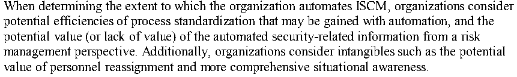
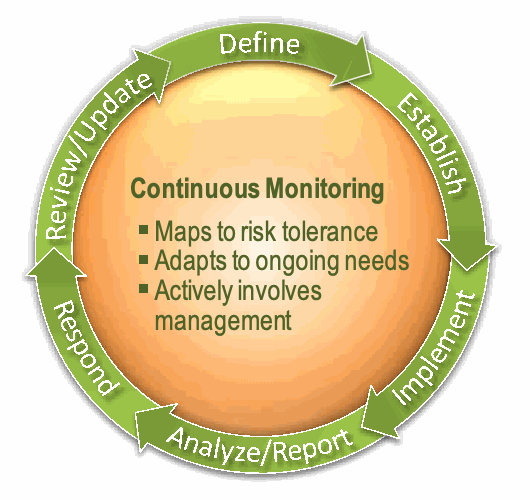
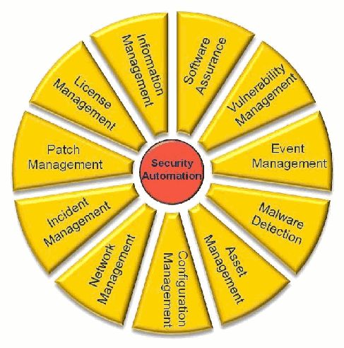
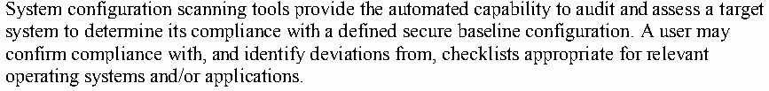

NIST SP 800-137 日本語訳
英語タイトル : Information Security Continuous Monitoring (ISCM) for Federal Information Systems and Organizations日本語タイトル : 連邦情報システムおよび組織のISCM
公開日 : 2011-09-30
原文URL : https://csrc.nist.gov/pubs/sp/800/137/final
翻訳編集 : 自動生成（有志による非公式の日本語訳）, 原文取得日 : 2026-09-30, 訳文 : 779 / 779 ブロック
[要約] SP 800-137 は、連邦情報システムと組織における情報セキュリティ継続的モニタリング（ISCM）の戦略を策定し、プログラムを実装するための指針を示します。組織全体の ISCM の視点、継続的なシステム認可、自動化の役割、役割と責任に加え、戦略の定義、プログラムの確立と実施、データ分析と所見の報告、所見への対応を説明します。SP 800-37 Rev. 1 で導入した監視の概念を発展させ、配備済みの管理策の有効性を保ち、組織が定めたリスク許容度の範囲内で運用できるようにすることを目的とします。
NIST Special Publication 800-137
NIST Special Publication 800-137
Information Security Continuous Monitoring (ISCM) for Federal Information Systems and Organizations
連邦政府の情報システムおよび組織のための情報セキュリティ継続的モニタリング（ISCM）
［NIST のロゴ。公的な標章のため、この非公式サイトには掲載していません。原本 PDF を参照してください。］
Kelley Dempsey
Kelley Dempsey
Nirali Shah Chawla
Nirali Shah Chawla
Arnold Johnson
Arnold Johnson
Ronald Johnston
Ronald Johnston
Alicia Clay Jones
Alicia Clay Jones
Angela Orebaugh
Angela Orebaugh
Matthew Scholl
Matthew Scholl
Kevin Stine
Kevin Stine
I N F O R M A T I O N S E C U R I T Y
情報セキュリティ
Computer Security Division Information Technology Laboratory National Institute of Standards and Technology Gaithersburg, MD 20899-8930
コンピューターセキュリティ部門、情報技術研究所、米国国立標準技術研究所、メリーランド州ゲイサーズバーグ 20899-8930
SEPTEMBER 2011
2011年9月
［米国商務省の紋章。公的な標章のため、この非公式サイトには掲載していません。原本 PDF を参照してください。］
U.S. Department of Commerce Rebecca M. Blank, Acting Secretary
米国商務省 長官代行 Rebecca M. Blank
National Institute of Standards and Technology Patrick D. Gallagher, Under Secretary for Standards and Technology and Director
米国国立標準技術研究所 標準技術担当商務次官兼所長 Patrick D. Gallagher
Reports on Computer Systems Technology
コンピューターシステム技術報告書
The Information Technology Laboratory (ITL) at the National Institute of Standards and Technology (NIST) promotes the U.S. economy and public welfare by providing technical leadership for the nation’s measurement and standards infrastructure. ITL develops tests, test methods, reference data, proof of concept implementations, and technical analyses to advance the development and productive use of information technology. ITL’s responsibilities include the development of management, administrative, technical, and physical standards and guidelines for the cost-effective security and privacy of other than national security-related information in federal information systems. The Special Publication 800-series reports on ITL’s research, guidelines, and outreach efforts in information system security, and its collaborative activities with industry, government, and academic organizations.
米国国立標準技術研究所（NIST）の情報技術研究所（ITL）は、国家の計量・標準基盤に技術的リーダーシップを提供し、米国経済と公共の福祉を促進します。ITLは情報技術の発展と生産的利用を進めるため、試験、試験方法、参照データ、概念実証実装、技術分析を開発します。ITLの責務には、連邦情報システムにおける国家安全保障関連以外の情報について、費用対効果の高いセキュリティとプライバシーを確保するための管理的、行政的、技術的、物理的標準・指針の策定が含まれます。特別刊行物800シリーズは、情報システムセキュリティに関するITLの研究、指針、普及活動、および産業界、政府、学術機関との協力活動を報告します。
Authority
権限
This publication has been developed by NIST to further its statutory responsibilities under the Federal Information Security Management Act (FISMA), Public Law (P.L.) 107-347. NIST is responsible for developing information security standards and guidelines, including minimum requirements for federal information systems, but such standards and guidelines shall not apply to national security systems without the express approval of appropriate federal officials exercising policy authority over such systems. This guideline is consistent with the requirements of the Office of Management and Budget (OMB) Circular A-130, Section 8b(3), Securing Agency Information Systems, as analyzed in Circular A-130, Appendix IV: Analysis of Key Sections. Supplemental information is provided in Circular A-130, Appendix III.
本文書は、連邦情報セキュリティマネジメント法（FISMA）、公法（P.L.）107-347に基づく法定責任を果たすため、NISTが作成したものです。NISTは、連邦政府の情報システムに対する最低要件を含む情報セキュリティの標準およびガイドラインを作成する責任を負うが、これらの標準およびガイドラインは、国家安全保障システムに対して政策権限を行使する適切な連邦政府職員の明示的な承認なしには、当該システムに適用されないものとします。本ガイドラインは、行政管理予算局（OMB）Circular A-130のSection 8b(3)「Securing Agency Information Systems」の要件と整合しており、その分析はCircular A-130, Appendix IV: Analysis of Key Sectionsに示されています。補足情報はCircular A-130, Appendix IIIに示されています。
Nothing in this publication should be taken to contradict the standards and guidelines made mandatory and binding on federal agencies by the Secretary of Commerce under statutory authority. Nor should these guidelines be interpreted as altering or superseding the existing authorities of the Secretary of Commerce, Director of the OMB, or any other federal official. This publication may be used by nongovernmental organizations on a voluntary basis and is not subject to copyright in the United States. Attribution would, however, be appreciated by NIST.
本文書のいかなる内容も、商務長官が法定権限に基づき連邦政府機関に対して義務化し拘束力を持たせた標準およびガイドラインと矛盾するものと解釈してはなりません。また、本ガイドラインは、商務長官、OMB局長、その他の連邦政府職員の既存の権限を変更または置き換えるものと解釈してはなりません。本文書は、非政府組織が任意に使用することができ、米国において著作権の対象となりません。ただし、出典を明記していただければNISTとしては幸いです。
NIST Special Publication 800-137, 80 pages
NIST特別刊行物800-137、80ページ
(September 2011)
（2011年9月）
Certain commercial entities, equipment, or materials may be identified in this document in order to describe an experimental procedure or concept adequately. Such identification is not intended to imply recommendation or endorsement by NIST, nor is it intended to imply that the entities, materials, or equipment are necessarily the best available for the purpose.
本文書では、実験手順や概念を適切に説明するために、特定の商業団体、機器、または材料に言及することがあります。このような言及は、NISTによる推奨または支持を意味するものではなく、また、当該団体、材料、または機器がその目的に対して必ずしも入手可能な最善のものであることを意味するものでもありません。
There may be references in this publication to other publications currently under development by NIST in accordance with its assigned statutory responsibilities. The information in this publication, including concepts and methodologies, may be used by federal agencies even before the completion of such companion publications. Thus, until each publication is completed, current requirements, guidelines, and procedures, where they exist, remain operative. For planning and transition purposes, federal agencies may wish to closely follow the development of these new publications by NIST.
本文書には、NISTが割り当てられた法定責任に従って現在作成中の他の文書への参照が含まれている場合があります。本文書の情報は、概念や方法論を含め、それらの関連文書の完成前であっても連邦政府機関が使用することができます。したがって、各文書が完成するまでは、現行の要件、ガイドライン、および手順が存在する場合にはそれらが引き続き有効です。計画および移行のために、連邦政府機関は、NISTによるこれらの新しい文書の作成を注視するとよいです。
Organizations are encouraged to review all draft publications during public comment periods and provide feedback to NIST. All NIST publications, other than the ones noted above, are available at http://csrc.nist.gov/publications.
組織には、パブリックコメント期間中にすべての草案文書をレビューし、NISTにフィードバックを提供することが推奨されます。上記の文書を除くすべてのNIST文書は、http://csrc.nist.gov/publications で入手できます。
National Institute of Standards and Technology Attn: Computer Security Division, Information Technology Laboratory 100 Bureau Drive (Mail Stop 8930) Gaithersburg, MD 20899-8930 Electronic mail: 800-137comments@nist.gov
National Institute of Standards and Technology Attn: Computer Security Division, Information Technology Laboratory 100 Bureau Drive (Mail Stop 8930) Gaithersburg, MD 20899-8930 電子メール：800-137comments@nist.gov
Acknowledgements
謝辞
The authors, Kelley Dempsey, Arnold Johnson, Matthew Scholl and Kevin Stine of the National Institute of Standards and Technology (NIST), Ronald Johnston of the Department of Defense Chief Information Officer, Defense-wide Information Assurance Program (DOD-CIO, DIAP), Alicia Clay Jones and Angela Orebaugh of Booz Allen Hamilton, and Nirali Shah Chawla of PricewaterhouseCoopers LLP (PwC), wish to thank their colleagues who reviewed drafts of this document and contributed to its technical content. The authors would like to acknowledge their colleagues for their keen and insightful assistance with technical issues throughout the development of the document. And finally, the authors gratefully acknowledge and appreciate the significant contributions from individuals and organizations in the public and private sectors whose thoughtful and constructive comments improved the overall quality and usefulness of this publication.
著者のKelley Dempsey、Arnold Johnson、Matthew Scholl、Kevin Stine（NIST）、Ronald Johnston（国防総省CIO・国防全体情報保証プログラム）、Alicia Clay Jones、Angela Orebaugh（Booz Allen Hamilton）、Nirali Shah Chawla（PricewaterhouseCoopers LLP）は、本書の草稿をレビューし技術内容に貢献した同僚に感謝します。策定中に技術課題について鋭い洞察と支援を寄せた同僚にも謝意を表します。最後に、本刊行物の品質と有用性を高める思慮深く建設的な意見を寄せた官民の個人・組織に感謝します。
PAGE iv
iv
Table of Contents
目次
EXECUTIVE SUMMARY
エグゼクティブサマリー
In today’s environment where many, if not all, of an organization’s mission-critical functions are dependent upon information technology, the ability to manage this technology and to assure confidentiality, integrity, and availability of information is now also mission-critical. In designing the enterprise architecture and corresponding security architecture, an organization seeks to securely meet the IT infrastructure needs of its governance structure, missions, and core business processes. Information security is a dynamic process that must be effectively and proactively managed for an organization to identify and respond to new vulnerabilities, evolving threats, and an organization’s constantly changing enterprise architecture and operational environment.
今日、多くの組織では使命上重要な機能の多く、場合によってはすべてが情報技術に依存しています。そのため、この技術を管理し、情報の機密性、完全性、可用性を確保する能力も使命上不可欠となりました。企業アーキテクチャと対応するセキュリティアーキテクチャを設計する際、組織は統治構造、使命、中核業務プロセスに必要なIT基盤を安全に満たそうとします。情報セキュリティは動的なプロセスであり、新たな脆弱性、進化する脅威、絶えず変化する企業アーキテクチャ・運用環境を特定し対応するため、効果的かつ先を見越して管理しなければなりません。
The Risk Management Framework (RMF) developed by NIST,1 describes a disciplined and structured process that integrates information security and risk management activities into the system development life cycle. Ongoing monitoring is a critical part of that risk management process. In addition, an organization’s overall security architecture and accompanying security program are monitored to ensure that organization-wide operations remain within an acceptable level of risk, despite any changes that occur. Timely, relevant, and accurate information is vital, particularly when resources are limited and agencies must prioritize their efforts.
NISTが策定したリスク管理フレームワーク（RMF）1は、情報セキュリティとリスク管理活動をシステム開発ライフサイクルへ統合する、規律ある体系的なプロセスを示します。継続的監視はそのリスク管理プロセスの重要な部分です。組織全体のセキュリティアーキテクチャと関連プログラムも監視し、変化があっても組織全体の運用が許容可能なリスク水準内にあることを確認します。資源が限られ機関が取組みの優先順位を付ける必要がある場合、適時で関連性があり正確な情報が特に重要となります。
Information security continuous monitoring (ISCM) is defined as maintaining ongoing awareness of information security, vulnerabilities, and threats to support organizational risk management decisions.
情報セキュリティ継続的監視（ISCM）とは、組織のリスク管理上の意思決定を支援するため、情報セキュリティ、脆弱性、脅威に関する認識を継続して維持することです。
Any effort or process intended to support ongoing monitoring of information security across an organization begins with leadership defining a comprehensive ISCM strategy encompassing technology, processes, procedures, operating environments, and people. This strategy:
組織全体の情報セキュリティ継続的監視を支援する取組みは、技術、プロセス、手順、運用環境、人員を含む包括的ISCM戦略を経営層が定義することから始まります。この戦略は次のとおり。
•Is grounded in a clear understanding of organizational risk tolerance and helps officials set priorities and manage risk consistently throughout the organization;
•組織のリスク許容度を明確に理解し、それに基づきます。職員が優先順位を設定し組織全体で一貫してリスク管理する助けとなります。
•Includes metrics that provide meaningful indications of security status at all organizational tiers;
•組織の各階層でセキュリティ状態を有意に示す指標を含みます。
•Ensures continued effectiveness of all security controls;
•すべてのセキュリティ管理策の継続的有効性を確保します。
•Verifies compliance with information security requirements derived from organizational missions/business functions, federal legislation, directives, regulations, policies, and standards/guidelines;
•組織の使命・業務機能、連邦法、指令、規制、方針、標準・指針から導かれる情報セキュリティ要件への準拠を検証します。
•Is informed by all organizational IT assets and helps to maintain visibility into the security of the assets;
•すべての組織IT資産の情報を活用し、そのセキュリティの可視性を維持します。
•Ensures knowledge and control of changes to organizational systems and environments of operation; and
•組織システムと運用環境の変更を把握し、制御します。
•Maintains awareness of threats and vulnerabilities.
•脅威と脆弱性への認識を維持します。
An ISCM program is established to collect information in accordance with preestablished metrics, utilizing information readily available in part through implemented security controls. Organizational officials collect and analyze the data regularly and as often as needed to manage risk as appropriate for each organizational tier. This process involves the entire organization, from senior leaders providing governance and strategic vision to individuals developing, implementing, and operating individual systems in support of the organization’s core missions and business processes. Subsequently, determinations are made from an organizational perspective on whether to conduct mitigation activities or to reject, transfer, or accept risk.
ISCMプログラムは、事前に定めた指標に従って情報を収集するために確立されます。情報は実装済みセキュリティ管理策などを通じて入手できます。組織職員は各組織階層に適したリスク管理のため、定期的かつ必要に応じてデータを収集・分析します。このプロセスには、統治と戦略的ビジョンを示す上級幹部から、中核使命・業務プロセスを支える個別システムを開発、実装、運用する担当者まで、組織全体が関わります。その後、組織の視点でリスク緩和を行うか、リスクを拒否、移転、受容するか判断します。
Organizations’ security architectures, operational security capabilities, and monitoring processes will improve and mature over time to better respond to the dynamic threat and vulnerability landscape. An organization’s ISCM strategy and program are routinely reviewed for relevance and are revised as needed to increase visibility into assets and awareness of vulnerabilities. This further enables data-driven control of the security of an organization’s information infrastructure, and increase organizational resilience.
組織のセキュリティアーキテクチャ、運用上のセキュリティ能力、監視プロセスは、動的な脅威・脆弱性環境によりよく対応するため、時間とともに改善・成熟します。組織のISCM戦略・プログラムを定期的にレビューし、資産の可視性と脆弱性認識を高めるため必要に応じて改訂します。これによりデータに基づく情報基盤のセキュリティ管理が可能となり、組織のレジリエンスも向上します。
Organization-wide monitoring cannot be efficiently achieved through manual processes alone or through automated processes alone. Where manual processes are used, the processes are repeatable and verifiable to enable consistent implementation. Automated processes, including the use of automated support tools (e.g., vulnerability scanning tools, network scanning devices), can make the process of continuous monitoring more cost-effective, consistent, and efficient. Many of the technical security controls defined in NIST Special Publication (SP) 800‐53, Recommended Security Controls for Federal Information Systems and Organizations, as amended, are good candidates for monitoring using automated tools and techniques. Real‐time monitoring of implemented technical controls using automated tools can provide an organization with a much more dynamic view of the effectiveness of those controls and the security posture of the organization. It is important to recognize that with any comprehensive information security program, all implemented security controls, including management and operational controls, must be regularly assessed for effectiveness, even if the monitoring of such controls cannot be automated or is not easily automated.
組織全体の監視は、手作業のプロセスだけでも自動化されたプロセスだけでも効率よく実現できません。手作業プロセスを用いる場合、一貫した実装を可能にするため、そのプロセスは反復可能で検証可能です。脆弱性スキャンツールやネットワークスキャン機器などの自動支援ツールの利用を含む自動化プロセスは、継続的監視をより費用対効果が高く、一貫性・効率のあるものにできます。NIST特別刊行物（SP）800-53『連邦情報システムおよび組織の推奨セキュリティ管理策』（改訂を含む）に定められた技術的管理策の多くは、自動ツール・技法による監視に適しています。実装済み技術管理策を自動ツールでリアルタイム監視すれば、その有効性と組織のセキュリティ態勢をより動的に把握できます。包括的な情報セキュリティプログラムでは、自動化できない、または容易に自動化できない管理的・運用的管理策も含め、実装済み管理策すべての有効性を定期評価する必要がある、と認識することが重要です。
Organizations take the following steps to establish, implement, and maintain ISCM:
ISCMを確立、実施、維持するため、組織は次の手順を踏みます。
•Define an ISCM strategy;
•ISCM戦略を定義します。
•Establish an ISCM program;
•ISCMプログラムを確立します。
•Implement an ISCM program;
•ISCMプログラムを実施します。
•Analyze data and Report findings;
•データを分析し、所見を報告します。
•Respond to findings; and
•所見に対応します。
•Review and Update the ISCM strategy and program.
•ISCM戦略とプログラムをレビュー・更新します。
A robust ISCM program thus enables organizations to move from compliance-driven risk management to data-driven risk management providing organizations with information necessary to support risk response decisions, security status information, and ongoing insight into security control effectiveness.
堅牢なISCMプログラムにより、組織はコンプライアンス主導のリスク管理からデータ主導のリスク管理へと移行でき、リスク対応の意思決定を支援するために必要な情報、セキュリティ状態の情報、およびセキュリティ管理策の有効性に関する継続的な洞察が得られます。
PAGE vii
vii
CHAPTER ONE
第1章
INTRODUCTION
はじめに
Information security continuous monitoring (ISCM) is defined as maintaining ongoing awareness of information security, vulnerabilities, and threats to support organizational risk management decisions. 2 This publication specifically addresses assessment and analysis of security control effectiveness and of organizational security status in accordance with organizational risk tolerance. Security control effectiveness is measured by correctness of implementation and by how adequately the implemented controls meet organizational needs in accordance with current risk tolerance (i.e., is the control implemented in accordance with the security plan to address threats and is the security plan adequate).3 Organizational security status is determined using metrics established by the organization to best convey the security posture of an organization’s information and information systems, along with organizational resilience given known threat information. This necessitates:
ISCMとは組織のリスク管理上の意思決定を支援するため、情報セキュリティ、脆弱性、脅威への認識を継続して維持することです。2 本刊行物は、組織のリスク許容度に照らし、セキュリティ管理策の有効性と組織のセキュリティ状態を評価・分析することを扱います。管理策の有効性は、実装の正確さ、および現行のリスク許容度に沿って組織ニーズを満たす度合いで測ります（脅威対応のためセキュリティ計画どおりに実装されているか、計画自体が十分か）。3組織のセキュリティ状態は、情報・情報システムの態勢と、既知の脅威情報に基づくレジリエンスを適切に示すため組織が定めた指標で判断します。そのため次が必要です。
•Maintaining situational awareness of all systems across the organization;
•組織内の全システムの状況認識を維持します。
•Maintaining an understanding of threats and threat activities;
•脅威と脅威活動への理解を維持します。
•Assessing all security controls;
•すべてのセキュリティ管理策を評価します。
•Collecting, correlating, and analyzing security-related information;
•セキュリティ関連情報を収集、相関付け、分析します。
•Providing actionable communication of security status across all tiers of the organization; and
•組織の全階層に対し、実行可能なセキュリティ状態情報を伝達します。
•Active management of risk by organizational officials.
•組織職員が積極的にリスクを管理します。
Communication with all stakeholders is key in developing the strategy and implementing the program. This document builds on the monitoring concepts introduced in NIST SP 800-37 Rev. 1, Guide for Applying the Risk Management Framework to Federal Information Systems: A Security Life Cycle Approach. An ISCM program helps to ensure that deployed security controls continue to be effective and that operations remain within stated organizational risk tolerances in light of the inevitable changes that occur over time. In cases where security controls are determined to be inadequate, ISCM programs facilitate prioritized security response actions based on risk.
戦略策定とプログラム実施では、すべての利害関係者との意思疎通が重要です。本書はNIST SP 800-37 Rev.1『連邦情報システムへのリスク管理フレームワーク適用指針：セキュリティライフサイクル手法』で導入した監視概念を発展させます。ISCMは、配備済み管理策の有効性継続と、不可避な変化があっても組織の定めたリスク許容度内での運用を支援します。管理策が不十分と判明した場合、リスクに基づく優先対応を促します。
An ISCM strategy is meaningful only within the context of broader organizational needs, objectives, or strategies, and as part of a broader risk management strategy, enabling timely management, assessment, and response to emerging security issues. Information collected through the ISCM program supports ongoing authorization decisions.4
ISCM戦略は、より広い組織ニーズ、目標、戦略、およびリスク管理戦略の文脈でのみ意味を持ち、新たなセキュリティ課題の適時管理、評価、対応を可能にします。ISCMプログラムで収集した情報は継続的認可判断を支援します。4
ISCM, a critical step in an organization’s Risk Management Framework (RMF), gives organizational officials access to security-related information on demand, enabling timely risk management decisions, including authorization decisions. Frequent updates to security plans, security assessment reports, plans of action and milestones, hardware and software inventories, and other system information are also supported. ISCM is most effective when automated mechanisms are employed where possible for data collection and reporting. Effectiveness is further enhanced when the output is formatted to provide information that is specific, measurable, actionable, relevant, and timely. While this document encourages the use of automation, it is recognized that many aspects of ISCM programs are not easily automated.
組織のRMFにおける重要な手順であるISCMは、組織職員に必要に応じたセキュリティ関連情報へのアクセスを提供し、認可判断を含む適時のリスク管理判断を可能にします。セキュリティ計画、セキュリティ評価報告書、行動計画およびマイルストーン、ハードウェア・ソフトウェア目録、その他のシステム情報の頻繁な更新も支援します。データ収集・報告に自動化機構を可能な限り用いると、ISCMは最も効果的です。出力を、具体的、測定可能、実行可能、関連性があり、適時な情報となるよう整えると、有効性はさらに高まります。本書は自動化の利用を推奨するが、ISCMプログラムの多くの側面は容易に自動化できないことも認識されています。
1.1 BACKGROUND
1.1 背景
The concept of monitoring information system security has long been recognized as sound management practice. In 1997, Office of Management and Budget (OMB) Circular A-130, Appendix III5 required agencies to review their information systems’ security controls and to ensure that system changes do not have a significant impact on security, that security plans remain effective, and that security controls continue to perform as intended.
情報システムのセキュリティ監視は、健全な管理実務として長く認識されてきました。1997年のOMB通達A-130付録III5は、機関に情報システムの管理策をレビューし、システム変更がセキュリティへ重大な影響を与えないこと、計画の有効性が続くこと、管理策が意図どおり機能することを確認するよう求めました。
The Federal Information Security Management Act (FISMA) of 2002 further emphasized the importance of continuously monitoring information system security by requiring agencies to conduct assessments of security controls at a frequency appropriate to risk, but no less than annually.
2002年連邦情報セキュリティ管理法（FISMA）は、リスクに応じた頻度で（ただし年1回以上）管理策を評価するよう機関に求め、情報システムセキュリティの継続的監視の重要性をさらに強調しました。
Most recently, OMB issued memorandum M-11-33, FY 2011 Reporting Instructions for the Federal Information Security Management Act and Agency Privacy Management.6 The memorandum provides instructions for annual FISMA reporting and emphasizes monitoring the security state of information systems on an ongoing basis with a frequency sufficient to make ongoing, risk-based decisions.
直近では、OMBが覚書M-11-33「2011年度連邦情報セキュリティ管理法および機関プライバシー管理の報告指示」6を発行しました。同覚書はFISMA年次報告の手順を示し、継続的なリスクベースの意思決定に十分な頻度で情報システムのセキュリティ状態を監視する重要性を強調します。
Tools supporting automated monitoring of some aspects of information systems have become an effective means for both data capture and data analysis. Ease of use, accessibility, and broad applicability across products and across vendors help to ensure that monitoring tools can be readily deployed in support of near real-time, risk-based decision making.
情報システムの一部を自動監視するツールは、データ取得・分析の有効な手段となりました。使いやすさ、入手しやすさ、製品・ベンダー横断の適用性により、ほぼリアルタイムのリスクベース判断を支援するツールを導入しやすくなります。
1.2 RELATIONSHIP TO OTHER SPECIAL PUBLICATIONS
1.2 他の特別刊行物との関係
NIST SP 800-39, Managing Information Security Risk: Organization, Mission, and Information System View, describes three key organization-wide ISCM activities: monitoring for effectiveness, monitoring for changes to systems and environments of operation, and monitoring for compliance. NIST SP 800-37 describes monitoring security controls at the system level (RMF Step 6) and also includes an organization-wide perspective, integration with the system development life cycle (SDLC), and support for ongoing authorizations. The concepts presented in NIST SP 800-39 and NIST SP 800-37 are expanded upon in order to provide guidelines sufficient for developing an ISCM strategy and implementing an ISCM program.
NIST SP 800-39『情報セキュリティリスク管理：組織、使命、情報システムの視点』は、組織全体のISCM活動として、有効性の監視、システム・運用環境の変更の監視、準拠状況の監視の3つを説明します。NIST SP 800-37はRMF手順6としてシステムレベルの管理策監視を説明し、組織全体の視点、システム開発ライフサイクル（SDLC）との統合、継続的認可の支援も含みます。NIST SP 800-39およびNIST SP 800-37で示された概念を発展させ、ISCM戦略の策定とISCMプログラムの実施に十分な指針を提供します。
The tiered approach herein mirrors that described in NIST SP 800-37 and NIST SP 800-39 where Tier 1 is organization, Tier 2 is mission/business processes, and Tier 3 is information systems. In NIST SP 800-39, these tiers are used to address risk management from varying organizational perspectives. In this document, the tiers are used to address perspectives for ISCM for each tier. Organization-wide, tier-specific ISCM policies, procedures, and responsibilities are included for the organization, mission/business processes, and information systems tiers. Automation is leveraged where possible, and manual (e.g., procedural) monitoring methodologies are implemented where automation is not practical or possible.
本書の階層アプローチは、NIST SP 800-37およびNIST SP 800-39に記述されたものに沿っており、第1層は組織、第2層はミッション／業務プロセス、第3層は情報システムです。NIST SP 800-39では、これらの階層は異なる組織的視点からリスク管理を扱うために用いられます。本書では、各階層のISCMの視点を扱うために階層を用います。組織全体にわたる層固有のISCM方針、手順、責任を、組織、ミッション／業務プロセス、情報システムの各層について含めます。可能な場合は自動化を活用し、自動化が実用的でない、または不可能な場合は、手動（例：手順的）の監視手法を実施します。
The ISCM program will evolve over time as the program matures in general, additional tools and resources become available, measurement and automation capabilities mature, and changes are implemented to ensure continuous improvement in the organizational security posture and in the organization’s security program. The monitoring strategy is regularly reviewed for relevance and accuracy in reflecting organizational risk tolerances, correctness of measurements, applicability of metrics, and effectiveness in supporting risk management decisions.
ISCMプログラムは成熟とともに進化し、ツール・資源の追加、測定・自動化能力の向上、組織のセキュリティ態勢・プログラムの継続改善を目指す変更を取り込みます。監視戦略を定期レビューし、組織のリスク許容度、測定の正確性、指標の適用性、リスク判断支援の有効性を適切に反映しているか確認します。
1.3 PURPOSE
1.3 目的
The purpose of this guideline is to assist organizations in the development of an ISCM strategy and the implementation of an ISCM program that provides awareness of threats and vulnerabilities, visibility into organizational assets, and the effectiveness of deployed security controls. The ISCM strategy and program support ongoing assurance that planned and implemented security controls are aligned with organizational risk tolerance, as well as the ability to provide the information needed to respond to risk in a timely manner.
本指針は、脅威・脆弱性への認識、組織資産の可視性、配備済み管理策の有効性を提供するISCM戦略の策定とプログラム実施を支援します。戦略・プログラムは、計画・実装した管理策が組織のリスク許容度に整合するという継続的保証と、適時のリスク対応に必要な情報提供能力を支えます。
1.4 TARGET AUDIENCE
1.4 対象読者
This publication serves individuals associated with the design, development, implementation, operation, maintenance, and disposal of federal information systems, including:
本刊行物は、連邦情報システムの設計、開発、実装、運用、保守、廃棄に関わる次の者などを対象とします。
•Individuals with mission/business ownership responsibilities or fiduciary responsibilities (e.g., heads of federal agencies, chief executive officers, chief financial officers);
•使命・業務の所有責任または受託責任を持つ者（連邦機関長、最高経営責任者、最高財務責任者など）。
•Individuals with information system development and integration responsibilities (e.g., program managers, information technology product developers, information system developers, information systems integrators, enterprise architects, information security architects);
•情報システムの開発・統合責任者（プログラム管理者、IT製品開発者、情報システム開発者・統合者、企業アーキテクト、情報セキュリティアーキテクトなど）。
•Individuals with information system and/or security management/oversight responsibilities (e.g., senior leaders, risk executives, authorizing officials, chief information officers, senior information security officers7);
•情報システムまたはセキュリティの管理・監督責任者（上級幹部、リスクエグゼクティブ、認可責任者、最高情報責任者、上級情報セキュリティ担当者7など）。
•Individuals with information system and security control assessment and monitoring responsibilities (e.g., system evaluators, assessors/assessment teams, independent verification and validation assessors, auditors, or information system owners); and
•情報システムおよび管理策の評価・監視責任者（システム評価者、評価者／評価チーム、独立検証・妥当性確認評価者、監査人、システム所有者など）。
•Individuals with information security implementation and operational responsibilities (e.g., information system owners, common control providers, information owners/stewards, mission/business owners, information security architects, information system security engineers/officers).
•情報セキュリティの実装・運用責任者（システム所有者、共通管理策提供者、情報所有者／管理者、使命・業務所有者、情報セキュリティアーキテクト、システムセキュリティ技術者／担当者など）。
1.5 ORGANIZATION OF THIS SPECIAL PUBLICATION
1.5 本特別刊行物の構成
The remainder of this special publication is organized as follows:
本特別刊行物の残りの構成は次のとおり。
•Chapter 2 describes the fundamentals of ongoing monitoring of information security in support of risk management;
•第2章では、リスク管理を支援する情報セキュリティ継続的監視の基礎を説明します。
•Chapter 3 describes the process of ISCM, including implementation guidelines; and
•第3章では、実施指針を含むISCMプロセスを説明します。
•Supporting appendices provide additional information regarding ISCM including: (A) general references; (B) definitions and terms; (C) acronyms; and (D) descriptions of technologies for enabling ISCM.
•付録はISCMに関する追加情報を示します。(A) 一般参考文献、(B) 定義・用語、(C) 頭字語、(D) ISCMを可能にする技術の説明。
CHAPTER TWO
第2章
THE FUNDAMENTALS
基礎
ONGOING MONITORING IN SUPPORT OF RISK MANAGEMENT
リスク管理を支援する継続的モニタリング
This chapter describes the fundamental concepts associated with organization-wide continuous monitoring of information security and the application of ISCM in support of organizational risk management decisions (e.g., risk response decisions, ongoing system authorization decisions, Plans of Action and Milestones (POA&M) resource and prioritization decisions, etc.). In order to effectively address ever-increasing security challenges, a well-designed ISCM strategy addresses monitoring and assessment of security controls for effectiveness, and security status monitoring.8 It also incorporates processes to assure that response actions are taken in accordance with findings and organizational risk tolerances and to assure that said responses have the intended effects.
本章では、情報セキュリティの組織全体にわたる継続的モニタリングに関する基本概念と、組織のリスク管理上の意思決定（例：リスク対応の判断、システムの継続的認可の判断、行動計画およびマイルストーン（POA&M）に関するリソース配分と優先順位付けの判断など）を支援するISCMの適用について述べます。増え続けるセキュリティ上の課題に効果的に対処するため、適切に設計されたISCM戦略は、セキュリティ管理策の有効性の監視と評価、およびセキュリティ状態の監視を扱います。8また、調査結果と組織のリスク許容度に従って対応措置が講じられること、およびその対応が意図した効果をもたらすことを保証するプロセスも組み込みます。
The process of implementing ISCM as described in Chapter Three is:
第3章で述べるISCMの実装プロセスは次のとおりです。
•Define the ISCM strategy;
•ISCM戦略を定義します。
•Establish an ISCM program;
•ISCMプログラムを確立します。
•Implement the ISCM program;
•ISCMプログラムを実装します。
•Analyze and Report findings;
•調査結果を分析し、報告します。
•Respond to findings; and
•所見に対応します。
•Review and Update ISCM strategy and program.
•ISCM戦略とプログラムを見直し、更新します。
ISCM strategies evolve in accordance with drivers for risk-based decision making and requirements for information. These requirements may come from any tier in the organization. Organizations implement ISCM based on requirements of those accountable and responsible for maintaining ongoing control of organizational security posture to within organizational risk tolerances. The implementation is standardized across the organization to the greatest extent possible so as to minimize use of resources (e.g., funding for purchase of tools/applications, data calls, organization-wide policies/procedures/templates, etc.) and to maximize leveragability of security-related information. Upon analysis, the resulting information informs the discrete processes used to manage the organization’s security posture and overall risk. ISCM helps to provide situational awareness of the security status of the organization’s systems based on information collected from resources (e.g., people, processes, technology, environment) and the capabilities in place to react as the situation changes.
ISCM戦略は、リスクに基づく意思決定の推進要因と情報に対する要件に応じて進化します。これらの要件は、組織のどの階層からも生じる可能性があります。組織は、組織のセキュリティ態勢を組織のリスク許容度の範囲内に継続的に維持する説明責任を負い、責任を担う者の要件に基づいてISCMを実装します。リソース（例：ツールやアプリケーションの購入資金、データ照会、組織全体の方針・手順・テンプレートなど）の使用を最小限に抑え、セキュリティ関連情報の活用可能性を最大化するため、実装は可能な限り組織全体で標準化します。分析の結果得られた情報は、組織のセキュリティ態勢と全体的なリスクを管理するために用いられる個別のプロセスに反映されます。ISCMは、リソース（例：人、プロセス、技術、環境）から収集した情報と、状況の変化に応じて対応するために整備された能力に基づき、組織のシステムのセキュリティ状態に関する状況認識の提供を支援します。
ISCM is a tactic in a larger strategy of organization-wide risk management.9 Organizations increase situational awareness through enhanced monitoring capabilities and subsequently increase insight into and control of the processes used to manage organizational security. Increased insight into and control of security processes in turn enhances situational awareness. Therefore, the process of implementing ISCM is recursive. ISCM informs and is informed by distinct organizational security processes and associated requirements for input and output of security-related information. Consider the following example:
ISCMは組織全体のリスク管理戦略における一つの戦術です。9監視能力を高めると状況認識が向上し、組織セキュリティ管理プロセスへの洞察・制御が深まります。これがさらに状況認識を高めるため、ISCM実施は再帰的です。ISCMは組織固有のセキュリティプロセスとセキュリティ情報の入出力要件から情報を得ると同時に、それらへ情報を提供します。次の例を考えます。
Security-related information pertaining to a system component inventory is used to determine compliance with CM-8 Information System Component Inventory.10 The information is assessed to determine whether or not the control is effective, (i.e., if the inventory is accurate). If found to be inaccurate, an analysis to determine the root cause of the inaccuracy is initiated (e.g., perhaps a process for connecting components to the network has been ignored or is out of date, asset management tools are not operating as expected, or the organization is under attack). Based on the analysis, responses are initiated as appropriate (e.g., responsible parties update inventory, update relevant organizational processes, train employees, disconnect errant devices, etc.). Additionally, security-related information pertaining to a system component inventory may be used to support predefined metrics. More accurate system component inventories support improved effectiveness of other security domains such as patch management and vulnerability management.
システム構成要素目録に関するセキュリティ関連情報を使い、CM-8「情報システム構成要素目録」10への準拠を判断します。情報を評価して、管理策が有効か（すなわち目録が正確か）を確認します。不正確と判明した場合は、不正確さの根本原因を特定する分析を始めます（例：構成要素をネットワークへ接続する手順が無視されている、または陳腐化している、資産管理ツールが想定どおり動作していない、または組織が攻撃を受けています）。分析に基づき、適切な対応を始めます（例：担当者による目録の更新、関連する組織プロセスの更新、職員の訓練、誤った機器の切断など）。さらに、システム構成要素目録に関するセキュリティ関連情報は、事前定義された指標を支援するために使用できます。より正確なシステム構成要素目録は、パッチ管理や脆弱性管理など、他のセキュリティ領域の有効性の向上を支えます。
This example illustrates how data collected in assessing a security control is leveraged to calculate a metric and provide input into various organizational processes. It further illustrates that a problem, once detected, can trigger an assessment of one or more controls across an organization, updates to relevant security-related information, modifications to the organizational security program plan and security processes, and improved compliance to the security program and applicable system security plan. The end result is improved organization-wide risk management and continual improvement limited only by the speed with which the organization can collect information and respond to findings.
この例は、セキュリティ管理策の評価で収集したデータを指標の算出に活用し、組織の各種プロセスへの入力とする方法を示します。また、問題がいったん検出されれば、組織全体の一つ以上の管理策の評価、関連するセキュリティ関連情報の更新、組織のセキュリティプログラム計画およびセキュリティプロセスの変更、ならびにセキュリティプログラムと適用可能なシステムセキュリティ計画への準拠の改善の契機となり得ることも示します。最終的な成果は、組織全体のリスク管理の改善と、組織が情報を収集し所見に対応できる速度によってのみ制約される継続的改善です。
2.1 ORGANIZATION-WIDE VIEW OF ISCM
2.1 組織全体のISCM視点
Maintaining an up-to-date view of information security risks across an organization is a complex, multifaceted undertaking. It requires the involvement of the entire organization, from senior leaders providing governance and strategic vision to individuals developing, implementing, and operating individual information systems in support of the organization’s core missions and business functions. Figure 2-1 illustrates a tiered approach to organization-wide ISCM in support of risk management. Tier 1 governance, risk management goals, and organizational risk tolerance drive the ISCM strategy. Organizational risk tolerance established by senior executives/leaders as part of the risk executive (function)11 influences ISCM policy, procedures, and implementation activities across all tiers. Data collection primarily occurs at the information systems tier. Metrics are designed to present information in a context that is meaningful for each tier. For example, ISCM data collected at Tier 3 may be aggregated to provide security status or risk scores for a single system, for a collection of systems, across a core business process, or for the entire organization. Policies, procedures, and tools may be established at any tier; however, when established at Tiers 1 or 2, they facilitate the consistent implementation of ISCM across the organization and better support data reuse and judicious use of resources. Data collection, analysis, and reporting are automated where possible.12 Through the use of automation, it is possible to monitor a greater number of security metrics with fewer resources, higher frequencies, larger sample sizes,13 and with greater consistency and reliability than is feasible using manual processes. Organizations regularly review the ISCM strategy to ensure that metrics continue to be relevant, meaningful, actionable, and supportive of risk management decisions made by organizational officials at all tiers.
組織全体の情報セキュリティリスクを最新の状態で把握することは、複雑で多面的な取組みです。統治と戦略的ビジョンを示す上級幹部から、組織の中核となる使命・業務機能を支える個別の情報システムを開発、実装、運用する担当者まで、組織全体の関与が必要です。図2-1は、リスク管理を支援する組織全体のISCMの階層的手法を示します。第1層の統治、リスク管理目標、組織のリスク許容度がISCM戦略を方向付けます。リスクエグゼクティブ（機能）11の一環として上級幹部が定める組織のリスク許容度は、全層にわたるISCMの方針、手順、実施活動に影響します。データ収集は主に情報システム層で行われます。指標は、各層にとって意味のある文脈で情報を提示するよう設計されます。例えば、第3層で収集したISCMデータを集約して、単一のシステム、システムの集合、中核業務プロセス全体、または組織全体について、セキュリティ状態やリスクスコアを示すことができます。方針、手順、ツールはどの層でも確立できるが、第1層または第2層で確立すると、組織全体でのISCMの一貫した実施が促進され、データの再利用と資源の賢明な使用がより良く支援されます。データ収集、分析、報告は、可能な限り自動化します。12自動化により、手作業で可能な範囲よりも少ない資源で、より多くのセキュリティ指標を、より高い頻度、より大きな標本13で、かつより高い一貫性と信頼性をもって監視できます。組織は、指標が引き続き関連性があり、意味があり、実行可能であり、全層の組織職員によるリスク管理上の意思決定を支援するものであり続けるよう、ISCM戦略を定期的にレビューします。
![Figure 2-1. Organization-wide ISCM. A green pyramid divided by dashed lines into three tiers. Top: “TIER 1 ORGANIZATION — Risk Tolerance/Governance/Policies/Strategies”. Middle: “TIER 2 MISSION/BUSINESS PROCESSES — Collection/Correlation/Analysis/Reporting”. Bottom: “TIER 3 INFORMATION SYSTEMS — Collection/Correlation/Analysis/Reporting”. At each dashed boundary, arrows labeled “Data” point upward on the left and arrows labeled “Tools” point downward on the right. Inside both slanted sides, red arrows labeled “Triggers Alert Response” point upward. Outside the left side, a long green arrow pointing up toward the apex is labeled “Automated/Manual Data Feeds (e.g., security-related information, POA&M, SAR)”; outside the right side, a green arrow points down from the apex to the base.](assets/137/p0015-figure-01.png)
図2-1. 組織全体のISCM。破線で3層に分けた緑のピラミッド。最上部は「TIER 1 ORGANIZATION」（第1層 組織）で「Risk Tolerance/Governance/Policies/Strategies」（リスク許容度／ガバナンス／ポリシー／戦略）とある。中央は「TIER 2 MISSION/BUSINESS PROCESSES」（第2層 ミッション／業務プロセス）、最下部は「TIER 3 INFORMATION SYSTEMS」（第3層 情報システム）で、いずれも「Collection/Correlation/Analysis/Reporting」（収集／相関分析／分析／報告）とある。各破線の境界では、左側に「Data」（データ）と記した上向きの矢印、右側に「Tools」（ツール）と記した下向きの矢印がある。両斜辺の内側には「Triggers Alert Response」（警告への対応を起動する）と記した赤い上向きの矢印がある。左斜辺の外側には頂点へ向かう長い緑の矢印があり、「Automated/Manual Data Feeds (e.g., security-related information, POA&M, SAR)」（自動／手動のデータ供給（例：セキュリティ関連情報、POA&M、SAR））とある。右斜辺の外側には頂点から底辺へ下る緑の矢印がある。
Figure 2-1. Organization-wide ISCM
図2-1. 組織全体のISCM
An organization-wide approach to continuous monitoring of information and information system security supports risk-related decision making at the organization level (Tier 1), the mission/business processes level (Tier 2), and the information systems level (Tier 3).14
情報および情報システムのセキュリティの継続的モニタリングに対する組織全体のアプローチは、組織レベル（第1層）、ミッション／業務プロセスレベル（第2層）、情報システムレベル（第3層）におけるリスク関連の意思決定を支援します。14
2.1.1 TIER 1- ORGANIZATION
2.1.1 第1層 - 組織
Tier 1 risk management activities address high-level information security governance policy as it relates to risk to the organization as a whole, to its core missions, and to its business functions. At this tier, the criteria for ISCM are defined by the organization’s risk management strategy, including how the organization plans to assess, respond to, and monitor risk, and the oversight required to ensure that the risk management strategy is effective. Security controls, security status, and other metrics defined and monitored by officials at this tier are designed to deliver information necessary to make risk management decisions in support of governance. Tier 1 metrics are developed for supporting governance decisions regarding the organization, its core missions, and its business functions. Tier 1 metrics may be calculated based on security-related information from common, hybrid, and system-specific security controls. The metrics and the frequency with which they are monitored15 and reported are determined by requirements to maintain operations within organizational risk tolerances. As part of the overall governance structure established by the organization, the Tier 1 risk management strategy and the associated monitoring requirements are communicated throughout Tiers 2 and 3.
第1層のリスク管理活動では、組織全体、中核ミッション、業務機能に対するリスクに関連して、上位の情報セキュリティガバナンス方針を扱います。この層では、ISCMの基準は、組織がリスクをどのように評価し、対応し、監視する計画か、およびリスク管理戦略が有効であることを保証するために必要な監督を含む、組織のリスク管理戦略によって定義されます。この層の責任者が定義し監視するセキュリティ管理策、セキュリティ状態、その他の指標は、ガバナンスを支援するリスク管理上の意思決定に必要な情報を提供するよう設計されます。第1層の指標は、組織、その中核ミッション、業務機能に関するガバナンス上の意思決定を支援するために策定されます。第1層の指標は、共通管理策、ハイブリッド管理策、システム固有の管理策からのセキュリティ関連情報に基づいて算出してもよいです。指標と、それを監視15し報告する頻度は、組織のリスク許容度の範囲内で運用を維持するための要件によって決まります。組織が確立した全体的なガバナンス構造の一環として、第1層のリスク管理戦略と関連するモニタリング要件は、第2層および第3層全体に伝達されます。
2.1.2 TIER 2 - MISSION/BUSINESS PROCESSES
2.1.2 第2層 - ミッション／業務プロセス
Organizational officials that are accountable for one or more missions or business processes are also responsible for overseeing the associated risk management activities for those processes. The Tier 2 criteria for continuous monitoring of information security are defined by how core mission/business processes are prioritized with respect to the overall goals and objectives of the organization, the types of information needed to successfully execute the stated mission/business processes, and the organization-wide information security program strategy. Controls in the Program Management (PM) family are an example of Tier 2 security controls. These controls address the establishment and management of the organization’s information security program. Tier 2 controls are deployed organization-wide and support all information systems. They may be tracked at Tier 2 or Tier 1. The frequencies with which Tier 2 security controls are assessed and security status and other metrics are monitored are determined in part by the objectives and priorities of the mission or business process and measurement capabilities inherent in the infrastructure.16 Security-related information may come from common, hybrid, and system-specific controls. Metrics and dashboards can be useful at Tiers 1 and 2 in assessing, normalizing, communicating, and correlating monitoring activities below the mission/business processes tier in a meaningful manner.
1つ以上のミッションまたは業務プロセスに説明責任を負う組織の責任者は、それらのプロセスに関連するリスク管理活動を監督する責任も負います。情報セキュリティの継続的モニタリングに関する第2層の基準は、中核となるミッション／業務プロセスが組織の全体目標・目的に照らしてどのように優先順位付けされているか、定められたミッション／業務プロセスを成功裏に遂行するために必要な情報の種類、および組織全体の情報セキュリティプログラム戦略によって定義されます。プログラムマネジメント（PM）ファミリーの管理策は、第2層のセキュリティ管理策の一例です。これらの管理策は、組織の情報セキュリティプログラムの確立と管理を扱います。第2層の管理策は組織全体に展開され、すべての情報システムを支援します。これらは第2層または第1層で追跡してもよいです。第2層のセキュリティ管理策を評価する頻度と、セキュリティ状態およびその他の指標を監視する頻度は、一部には、ミッションまたは業務プロセスの目的と優先事項、およびインフラストラクチャに内在する測定能力によって決まります。16セキュリティ関連情報は、共通管理策、ハイブリッド管理策、システム固有の管理策から得られる場合があります。指標とダッシュボードは、第1層および第2層において、ミッション／業務プロセス層より下位のモニタリング活動を、有意義な形で評価、正規化、伝達、相関付けするうえで有用となり得ます。
2.1.3 TIER 3 - INFORMATION SYSTEMS
2.1.3 第3層 - 情報システム
ISCM activities at Tier 3 address risk management from an information system perspective. These activities include ensuring that all system-level security controls (technical, operational, and management controls) are implemented correctly, operate as intended, produce the desired outcome with respect to meeting the security requirements for the system, and continue to be effective over time. ISCM activities at Tier 3 also include assessing and monitoring hybrid and common controls implemented at the system level. Security status reporting at this tier often includes but is not limited to security alerts, security incidents, and identified threat activities.17 The ISCM strategy for Tier 3 also ensures that security-related information supports the monitoring requirements of other organizational tiers. Data feeds/assessment results from system-level controls (system-specific, hybrid, or common), along with associated security status reporting, support risk-based decisions at the organization and mission/business processes tiers. Information is tailored for each tier and delivered in ways that inform risk-based decision making at all tiers. Those resulting decisions impact the ISCM strategy applied at the information systems tier.18 ISCM metrics originating at the information systems tier can be used to assess, respond, and monitor risk across the organization. The ongoing monitoring activities implemented at the information systems tier provide security-related information to authorizing officials (AOs) in support of ongoing system authorization decisions and to the risk executive (function) in support of ongoing organizational risk management.
第3層のISCM活動では、情報システムの観点からリスク管理を扱います。これらの活動には、システムレベルのすべてのセキュリティ管理策（技術的、運用的、管理的管理策）が正しく実装され、意図したとおりに運用され、当該システムのセキュリティ要件を満たすうえで望ましい結果をもたらし、時間が経過しても有効であり続けることの確認が含まれます。第3層のISCM活動には、システムレベルで実装されるハイブリッド管理策と共通管理策の評価および監視も含まれます。この層でのセキュリティ状態の報告には、セキュリティアラート、セキュリティインシデント、特定された脅威活動などが含まれることが多いが、これらに限られません。17第3層のISCM戦略は、セキュリティ関連情報が他の組織階層のモニタリング要件を支援することも保証します。システムレベルの管理策（システム固有、ハイブリッド、共通）からのデータフィード／評価結果と、関連するセキュリティ状態の報告は、組織層およびミッション／業務プロセス層でのリスクに基づく意思決定を支援します。情報は各層に合わせて調整され、すべての層でリスクに基づく意思決定に資する形で提供されます。その結果として下される決定は、情報システム層に適用されるISCM戦略に影響を与えます。18情報システム層で生じるISCM指標は、組織全体のリスクの評価、対応、監視に用いることができます。情報システム層で実施される継続的なモニタリング活動は、システムの継続的認可に関する判断を支援するために認可責任者（AO）に、また組織の継続的なリスク管理を支援するためにリスクエグゼクティブ（機能）に、セキュリティ関連情報を提供します。
At Tier 3, RMF Step 6 Monitor activities and ISCM activities are closely aligned. The assessment methods relevant for implemented security controls are the same whether the assessments are being done solely in support of system authorization or in support of a broader, more comprehensive continuous monitoring effort. Information systems tier officials and staff conduct assessments and monitoring, and analyze results on an ongoing basis. The information is leveraged at the organization, mission/business processes, and information systems tiers to support risk management. Though frequency requirements differ, each tier receives the benefit of security-related information that is current and applicable to affected processes. RMF Step 6 activities performed within the context of an ISCM program support information system risk determination and acceptance, i.e., authorization (RMF Step 5) on an ongoing basis.
第3層では、RMFのステップ6「モニタリング」の活動とISCM活動は密接に連携しています。実装済みのセキュリティ管理策に適用される評価方法は、システム認可のみを支援するために評価を実施する場合も、より広範で包括的な継続的モニタリングの取り組みを支援する場合も同じです。情報システム層の職員およびスタッフは、評価とモニタリングを実施し、その結果を継続的に分析します。その情報は、リスク管理を支援するため、組織層、ミッション／業務プロセス層、および情報システム層で活用されます。頻度に関する要件は異なるものの、各層は、影響を受けるプロセスにとって最新かつ該当性のあるセキュリティ関連情報の恩恵を受けます。ISCMプログラムの枠組みで実施されるRMFステップ6の活動は、情報システムのリスク決定および受容、すなわち認可（RMFステップ5）を継続的に支援します。
2.2 ONGOING SYSTEM AUTHORIZATIONS
2.2 継続的なシステム認可
Initial authorization to operate is based on evidence available at one point in time, but systems and environments of operation change. Ongoing assessment of security control effectiveness supports a system’s security authorization over time in highly dynamic environments of operation with changing threats, vulnerabilities, technologies, and missions/business processes. Through ISCM, new threat or vulnerability information is evaluated as it becomes available, permitting organizations to make adjustments to security requirements or individual controls as needed to maintain authorization decisions. The process for obtaining system authorization, and more generally, for managing information security and information system-related risk, is the RMF.19 The RMF, illustrated in Figure 2-2, provides a disciplined and structured process that integrates information system security and risk management activities into the SDLC. The monitoring step (Step 6) of the RMF includes interactions between the three tiers as illustrated in the organizational view of ISCM in Figure 2-1. Interaction between the tiers includes data from system owners, common control providers, and authorizing officials on security control assessments and ongoing authorization of system and common controls provided to the risk executive (function).20 There is also dissemination of updated risk-related information such as vulnerability and threat data and organizational risk tolerance from Tiers 1 and 2 to authorizing officials and information system owners. When the RMF is applied within an organization that has also implemented a robust ISCM strategy, organizational officials are provided with a view of the organizational security posture and each system’s contribution to said posture on demand.
初回の運用認可は、ある時点で入手可能な証拠に基づくが、システムおよび運用環境は変化します。セキュリティ管理策の有効性を継続的に評価することは、脅威、脆弱性、技術、ならびにミッション／業務プロセスが変化する動的な運用環境において、時間の経過に伴うシステムのセキュリティ認可を支援します。ISCMを通じて、新たな脅威情報または脆弱性情報が利用可能になり次第評価されるため、組織は認可の決定を維持するために必要に応じてセキュリティ要件または個々の管理策を調整できます。システム認可を取得するためのプロセス、さらに広くは情報セキュリティおよび情報システム関連リスクを管理するプロセスがRMFです。19図2-2に示すRMFは、情報システムのセキュリティおよびリスク管理活動をSDLCに統合する、規律ある体系的なプロセスを提供します。RMFのモニタリング段階（ステップ6）には、図2-1のISCM組織ビューに示すように、3つの層の間の相互作用が含まれます。各層の相互作用には、システム所有者、共通管理策プロバイダ、および認可担当者からリスクエグゼクティブ（機能）に提供される、セキュリティ管理策の評価およびシステム／共通管理策の継続的認可に関するデータが含まれます。20また、第1層および第2層から認可担当者と情報システム所有者に対して、脆弱性・脅威データや組織のリスク許容度など、更新されたリスク関連情報も配布されます。堅牢なISCM戦略も実装している組織でRMFを適用すると、組織の職員は組織のセキュリティ態勢と、各システムがその態勢にどのように寄与しているかを必要に応じて把握できます。
![Figure 2-2. Risk Management Framework. A grey framed panel. At the top center: “PROCESS OVERVIEW” and “Starting Point”. Two speech-bubble callouts point down to Step 1: on the left “Architecture Description” (Architecture Reference Models; Segment and Solution Architectures; Mission and Business Processes; Information System Boundaries) and on the right “Organizational Inputs” (Laws, Directives, Policy Guidance; Strategic Goals and Objectives; Priorities and Resource Availability; Supply Chain Considerations). Six step boxes surround the center text “RISK MANAGEMENT FRAMEWORK”: top “Step 1 CATEGORIZE Information System”, right upper “Step 2 SELECT Security Controls”, right lower “Step 3 IMPLEMENT Security Controls”, bottom “Step 4 ASSESS Security Controls”, left lower “Step 5 AUTHORIZE Information System”, left upper “Step 6 MONITOR Security Controls”. Black arrows run clockwise: right from Step 1 toward Step 2, down from Step 2 to Step 3, left from Step 3 toward Step 4, left from Step 4 toward Step 5, up from Step 5 to Step 6, and right from Step 6 toward Step 1 under the label “Repeat as necessary”.](assets/sp800-137/p0018-drawing-01.png)
図2-2 リスク管理フレームワーク。灰色の枠付きパネルである。上部中央に「PROCESS OVERVIEW」（プロセスの概要）と「Starting Point」（開始点）とある。2つの吹き出しがステップ1を指す。左は「Architecture Description」（アーキテクチャの説明）で、Architecture Reference Models（アーキテクチャ参照モデル）、Segment and Solution Architectures（セグメントアーキテクチャおよびソリューションアーキテクチャ）、Mission and Business Processes（ミッション／業務プロセス）、Information System Boundaries（情報システムの境界）を挙げる。右は「Organizational Inputs」（組織からの入力）で、Laws, Directives, Policy Guidance（法律、指令、ポリシーガイダンス）、Strategic Goals and Objectives（戦略的な目標と目的）、Priorities and Resource Availability（優先順位と資源の可用性）、Supply Chain Considerations（サプライチェーンに関する考慮事項）を挙げる。中央の「RISK MANAGEMENT FRAMEWORK」（リスク管理フレームワーク）を6つのステップの箱が囲む：上「Step 1 CATEGORIZE Information System」（ステップ1 情報システムの分類）、右上「Step 2 SELECT Security Controls」（ステップ2 セキュリティ管理策の選択）、右下「Step 3 IMPLEMENT Security Controls」（ステップ3 セキュリティ管理策の実装）、下「Step 4 ASSESS Security Controls」（ステップ4 セキュリティ管理策の評価）、左下「Step 5 AUTHORIZE Information System」（ステップ5 情報システムの認可）、左上「Step 6 MONITOR Security Controls」（ステップ6 セキュリティ管理策のモニタリング）。黒い矢印が時計回りに並ぶ：ステップ1から右へステップ2の方向、ステップ2から下へステップ3、ステップ3から左へステップ4の方向、ステップ4から左へステップ5の方向、ステップ5から上へステップ6、ステップ6から右へステップ1の方向で、この矢印の上に「Repeat as necessary」（必要に応じて繰り返す）とある。
Figure 2-2. Risk Management Framework
図2-2 リスク管理フレームワーク
The output of a strategically designed and well-managed organization-wide ISCM program can be used to maintain a system’s authorization to operate and keep required system information and data (i.e., System Security Plan together with Risk Assessment Report, Security Assessment Report, and POA&M) up to date on an ongoing basis. Security management and reporting tools may provide functionality to automate updates to key evidence needed for ongoing authorization decisions. ISCM also facilitates risk-based decision making regarding the ongoing authorization to operate information systems and security authorization for common controls by providing evolving threat activity or vulnerability information on demand. A security control assessment and risk determination process, otherwise static between authorizations, is thus transformed into a dynamic process that supports timely risk response actions and cost-effective, ongoing authorizations. Continuous monitoring of threats, vulnerabilities, and security control effectiveness provides situational awareness for risk-based support of ongoing authorization decisions. An appropriately designed ISCM strategy and program supports ongoing authorization of type authorizations, as well as single, joint, and leveraged authorizations.21
戦略的に設計され、適切に管理された組織全体のISCMプログラムの成果は、システムの運用認可を維持し、必要なシステム情報およびデータ（すなわち、システムセキュリティ計画書、リスク評価報告書、セキュリティ評価報告書、およびPOA&M）を継続的に最新の状態に保つために利用できます。セキュリティ管理および報告ツールは、継続的な認可判断に必要となる主要な証拠を自動的に更新する機能を提供する場合があります。ISCMは、進展する脅威活動または脆弱性情報を必要に応じて提供することにより、情報システムの運用継続認可および共通管理策のセキュリティ認可に関するリスクベースの意思決定も促進します。これにより、認可の間は静的だったセキュリティ管理策の評価およびリスク決定プロセスが、適時のリスク対応と費用対効果の高い継続的認可を支援する動的なプロセスへと変わります。脅威、脆弱性、およびセキュリティ管理策の有効性を継続的にモニタリングすることで、継続的認可の決定をリスクベースで支援する状況認識が得られます。適切に設計されたISCM戦略およびプログラムは、種類別認可に加え、単独、共同、および活用型の認可も継続的に支援します。21
ISCM in support of ongoing assessment and authorization has the potential to be resource-intensive and time-consuming. It is impractical to collect security-related information and assess every aspect of every security control deployed across an organization at all times. A more practical approach is to establish reasonable assessment frequencies for collecting security-related information. The frequency of assessments should be sufficient to assure adequate security commensurate with risk, as determined by system categorization and ISCM strategy requirements. Sampling of information system security objects, rather than 100 percent inspection, can also be an efficient and effective means of monitoring, particularly in cases where monitoring is not automated. Important considerations in determining sample sizes and monitoring frequencies are discussed in Chapter Three.
継続的な評価および認可を支援するISCMは、リソースと時間を多く要する可能性があります。組織全体に導入されたすべてのセキュリティ管理策のあらゆる側面を常時評価し、セキュリティ関連情報を収集することは現実的ではありません。より現実的な方法は、セキュリティ関連情報を収集するための妥当な評価頻度を定めることです。評価頻度は、システム分類およびISCM戦略の要件に基づき、リスクに見合う適切なセキュリティを確保できるだけの頻度とします。情報システムのセキュリティ対象について100%検査ではなくサンプリングを行うことも、特にモニタリングが自動化されていない場合には、効率的かつ効果的な手段となり得ます。サンプルサイズおよびモニタリング頻度を決める際の重要な考慮事項は、第3章で説明します。
Monitoring frequencies (e.g., annually, quarterly, monthly, daily) are not static, and they are not uniform across all metrics. Security control assessment and monitoring frequencies, for example, are adjusted to support changes in organizational information systems or their environments of operation, including emerging information on security threats and vulnerabilities. The priorities for ISCM vary and are adjusted in response to security incidents, to identify problems with security control implementations, or to evaluate changes to systems and system components that are determined to have a significant impact on security. An ISCM strategy can deliver dynamic updates of security-related data to support system authorizations conducted at any interval. Section 3.2.2 includes a more complete discussion of factors to consider when determining monitoring frequencies.
モニタリング頻度（例：年次、四半期、月次、日次）は固定ではなく、すべてのメトリクスで一律でもありません。たとえば、セキュリティ管理策の評価頻度およびモニタリング頻度は、新たに出現するセキュリティ脅威・脆弱性情報を含む、組織の情報システムまたはその運用環境の変化に応じて調整されます。ISCMの優先順位は変化し、セキュリティインシデントへの対応、セキュリティ管理策の実装上の問題の特定、またはセキュリティに重大な影響を及ぼすと判断されたシステムおよびシステムコンポーネントの変更の評価に応じて調整されます。ISCM戦略は、どのような間隔で実施されるシステム認可も支援できるよう、セキュリティ関連データを動的に更新して提供できます。モニタリング頻度を決める際の要因については、3.2.2節でより詳しく説明します。
2.3 ROLE OF AUTOMATION IN ISCM
2.3 ISCMにおける自動化の役割
When possible, organizations look for automated solutions to lower costs, enhance efficiency, and improve the reliability of monitoring security-related information. Security is implemented through a combination of people, processes, and technology. The automation of information security deals primarily with automating aspects of security that require little human interaction. Automated tools are often able to recognize patterns and relationships that may escape the notice of human analysts, especially when the analysis is performed on large volumes of data. This includes items such as verifying technical settings on individual network endpoints or ensuring that the software on a machine is up to date with organizational policy. Automation serves to augment the security processes conducted by security professionals within an organization and may reduce the amount of time a security professional must spend on doing redundant tasks, thereby increasing the amount of time the trained professional may spend on tasks requiring human cognition.
可能な場合、組織はコストを削減し、効率を高め、セキュリティ関連情報のモニタリングの信頼性を向上させるため、自動化ソリューションを検討します。セキュリティは、人、プロセス、および技術を組み合わせて実現されます。情報セキュリティの自動化は、主に人の関与がほとんど必要ないセキュリティ業務の側面を自動化します。自動化ツールは、特に大量のデータを分析する場合、人間の分析者が見落とす可能性のあるパターンや関係を認識できることが多くあります。これには、個々のネットワークエンドポイントの技術設定の検証や、マシン上のソフトウェアが組織のポリシーに照らして最新であることの確認などが含まれます。自動化は、組織のセキュリティ専門家が実施するセキュリティプロセスを補強し、反復作業に専門家が費やす時間を減らすことで、訓練を受けた専門家が人間の認知を要する業務に割ける時間を増やす可能性があります。
The ISCM strategy does not focus solely on the security-related information that is easy for an organization to collect or easy to automate. When an ISCM program is first implemented, there will likely be several aspects of the organization’s security program that are manually monitored. Organizations’ monitoring capabilities will expand and mature over time. Metrics will evolve with lessons learned and with increased insight into organizational security status and risk tolerance. The focus of an ISCM strategy is to provide adequate information about security control effectiveness and organizational security status allowing organizational officials to make informed, timely security risk management decisions. Thus, implementation, effectiveness, and adequacy of all security controls are monitored along with organizational security status.
ISCM戦略は、組織が収集しやすい、または自動化しやすいセキュリティ関連情報だけに焦点を当てるものではありません。ISCMプログラムを最初に実装する際には、組織のセキュリティプログラムの複数の側面を手作業でモニタリングすることになるでしょう。組織のモニタリング能力は、時間の経過とともに拡大し成熟します。メトリクスは、得られた教訓、ならびに組織のセキュリティ状況とリスク許容度に関する理解の深まりに応じて進化します。ISCM戦略の焦点は、組織職員が十分な情報に基づき適時にセキュリティリスク管理の意思決定を行えるよう、セキュリティ管理策の有効性と組織のセキュリティ状況に関する十分な情報を提供することです。したがって、すべてのセキュリティ管理策の実装、有効性、および妥当性を、組織のセキュリティ状況と併せてモニタリングします。
When determining the extent to which the organization automates ISCM, organizations consider potential efficiencies of process standardization that may be gained with automation, and the potential value (or lack of value) of the automated security-related information from a risk management perspective. Additionally, organizations consider intangibles such as the potential value of personnel reassignment and more comprehensive situational awareness.
原本PDFの抜粋画像

組織がISCMをどの程度自動化するかを決定する際には、自動化によって得られる可能性のあるプロセス標準化の効率性と、リスク管理の観点から自動化されたセキュリティ関連情報が持つ価値（または価値の欠如）を考慮します。さらに、人員配置の変更や、より包括的な状況認識によって得られる潜在的価値など、定量化しにくい要素も検討します。
While automation of IT security has the potential to significantly reduce the amount of time a human must spend doing certain tasks, it is not possible to fully automate all of an organization's information security program functions. The technologies discussed in Appendix D, for example, still require human analysis for implementation and maintenance of the tools as well as appropriate interpretation of findings. Similarly, these tools operate within the context of processes designed, run, and maintained by humans. If individuals carry out their responsibilities insecurely, then the effectiveness of the technologies is compromised, and the security of the systems and the mission/business or organizational processes supported by those systems is put in jeopardy.
ITセキュリティの自動化によって、人が特定の作業に費やす時間を大幅に削減できる可能性はあるが、組織の情報セキュリティプログラムのすべての機能を完全に自動化することはできません。たとえば、付録Dで説明する技術では、ツールの実装と保守、および結果の適切な解釈に人の分析が依然として必要です。同様に、これらのツールは、人が設計、運用、および保守するプロセスの中で機能します。個人が責任を安全でない方法で遂行すると、技術の有効性が損なわれ、システムと、そのシステムが支援するミッション／業務プロセスまたは組織プロセスのセキュリティが危険にさらされます。
Automation makes security-related information readily available in an environment where ongoing monitoring needs change. Therefore, during security control implementation (RMF Step 3), consideration is given to the capabilities inherent in available technology to support ISCM as part of the criteria in determining how best to implement a given control.
自動化により、継続的モニタリングのニーズが変化する環境において、セキュリティ関連情報を容易に利用できるようになります。そのため、セキュリティ管理策の実装時（RMFステップ3）には、個々の管理策を最適に実装する方法を決める基準の一部として、ISCMを支援する利用可能な技術に備わる能力を考慮します。
Consideration is given to ISCM tools that:
次の機能を備えるISCMツールを検討します。
•Pull information from a variety of sources (i.e., assessment objects22);
•さまざまな情報源（すなわち、評価対象オブジェクト22）から情報を取得します。
•Use open specifications such as the Security Content Automation Protocol (SCAP);
•Security Content Automation Protocol（SCAP）などのオープン仕様を使用します。
•Offer interoperability with other products such as help desk, inventory management, configuration management, and incident response solutions;
•ヘルプデスク、インベントリ管理、構成管理、およびインシデント対応ソリューションなど、他の製品との相互運用性を提供します。
•Support compliance with applicable federal laws, Executive Orders, directives, policies, regulations, standards, and guidelines;
•適用される連邦法、大統領令、指令、ポリシー、規則、標準、およびガイドラインへの準拠を支援します。
•Provide reporting with the ability to tailor output and drill down from high-level, aggregate metrics to system-level metrics; and
•出力を調整でき、高位の集約メトリクスからシステムレベルのメトリクスへ掘り下げられる報告機能を提供します。
•Allow for data consolidation into Security Information and Event Management (SIEM) tools and dashboard products.
•Security Information and Event Management（SIEM）ツールやダッシュボード製品にデータを集約できるようにします。
Automation supports collecting more data more frequently and from a larger and more diverse pool of technologies, people, processes, and environments. It can therefore make comprehensive, ongoing control of information security practical and affordable. How effective the organization is in utilizing the monitoring results (obtained in a manual or automated fashion) still depends upon the organizational ISCM strategy, including validity and comprehensiveness of the metrics, as well as the processes in place to analyze monitoring results and respond to findings. Technologies for enabling automation of some ISCM tasks are discussed in greater detail in Appendix D.
自動化は、より多くのデータを、より高い頻度で、より大規模かつ多様な技術、人、プロセス、および環境から収集することを支援します。したがって、情報セキュリティの包括的かつ継続的な管理を、現実的で費用面でも実行可能なものにできます。手作業または自動化によって得られたモニタリング結果を組織がどれだけ効果的に活用できるかは、メトリクスの妥当性と包括性、およびモニタリング結果を分析して所見に対応するためのプロセスを含む、組織のISCM戦略に依然として左右されます。一部のISCM作業を自動化する技術については、付録Dで詳しく説明します。
2.4 ISCM ROLES AND RESPONSIBILITIES
2.4 ISCMの役割および責任
This section describes the roles and responsibilities of key participants involved in an organization’s ISCM program. Widely varying missions and organizational structures may lead to differences in naming conventions for ISCM-related roles and how specific responsibilities are allocated among organizational personnel (e.g., multiple individuals filling a single role or one individual filling multiple roles). Roles and responsibilities commonly associated with ISCM include:
本節では、組織のISCMプログラムに関与する主要な参加者の役割と責任について説明します。ミッションや組織構造は組織によって大きく異なるため、ISCM関連の役割の名称や、組織要員間での具体的な責任の割り当て方（例：複数人で1つの役割を担う、または1人が複数の役割を担う）も異なることがあります。一般にISCMに関連する役割と責任には、次のものが含まれます。
Head of Agency. The agency head is likely to participate in the organization’s ISCM program within the context of the risk executive (function).
機関の長。機関の長は、リスクエグゼクティブ（機能）の枠組みにおいて、組織のISCMプログラムに参加する可能性が高いです。
Risk Executive (Function). The risk executive (function) oversees the organization’s ISCM strategy and program. The risk executive (function) reviews status reports from the ISCM process as input to information security risk posture and risk tolerance decisions and provides input to mission/business process and information systems tier entities on ISCM strategy and requirements; promotes collaboration and cooperation among organizational entities; facilitates sharing of security-related information; provides an organization-wide forum to consider all sources of risk; and ensures that risk information is considered for continuous monitoring decisions.
リスクエグゼクティブ（機能）。リスクエグゼクティブ（機能）は、組織のISCM戦略およびプログラムを監督します。情報セキュリティのリスク態勢およびリスク許容度に関する決定への入力としてISCMプロセスの状況報告を確認し、ISCM戦略と要件についてミッション／業務プロセス層および情報システム層の主体に入力を提供します。また、組織の各主体間の連携と協力を促進し、セキュリティ関連情報の共有を容易にし、すべてのリスク源を検討する組織全体の場を提供するとともに、継続的モニタリングの決定にリスク情報が考慮されるようにします。
Chief Information Officer (CIO). The CIO leads the organization’s ISCM program. The CIO ensures that an effective ISCM program is established and implemented for the organization by establishing expectations and requirements for the organization’s ISCM program; working closely with authorizing officials to provide funding, personnel, and other resources to support ISCM; and maintaining high-level communications and working group relationships among organizational entities.
最高情報責任者（CIO）。CIOは組織のISCMプログラムを主導します。組織のISCMプログラムに対する期待事項と要件を定め、ISCMを支援する資金、人員、その他のリソースを提供するため認可担当者と緊密に連携し、組織内各組織間の上位レベルのコミュニケーションおよび作業部会の関係を維持することにより、効果的なISCMプログラムが組織に確立され、実装されるようにします。
Senior Information Security Officer (SISO). The SISO establishes, implements, and maintains the organization’s ISCM program; develops organizational program guidance (i.e., policies/procedures) for continuous monitoring of the security program and information systems; develops configuration management guidance for the organization; consolidates and analyzes POA&Ms to determine organizational security weaknesses and deficiencies; acquires or develops and maintains automated tools to support ISCM and ongoing authorizations; provides training on the organization’s ISCM program and process; and provides support to information owners/information system owners and common control providers on how to implement ISCM for their information systems.
上級情報セキュリティ責任者（SISO）。SISOは、組織のISCMプログラムを確立、実装、および維持し、セキュリティプログラムと情報システムの継続的モニタリングに関する組織プログラムのガイダンス（すなわち、ポリシー／手順）を策定し、組織向けの構成管理ガイダンスを策定します。また、POA&Mを集約して分析し、組織のセキュリティ上の弱点と欠陥を特定し、ISCMおよび継続的認可を支援する自動化ツールを取得または開発し、保守します。組織のISCMプログラムおよびプロセスに関する研修を提供し、情報所有者／情報システム所有者および共通管理策プロバイダに対して、それぞれの情報システムにISCMを実装する方法を支援します。
Authorizing Official (AO). The AO assumes responsibility for ensuring the organization’s ISCM program is applied with respect to a given information system. The AO ensures the security posture of the information system is maintained, reviews security status reports and critical security documents and determines if the risk to the organization from operation of the information system remains acceptable. The AO also determines whether significant information system changes require reauthorization actions and reauthorizes the information system when required.
認可担当者（AO）。AOは、特定の情報システムに対して組織のISCMプログラムが適用されることを確実にする責任を負います。情報システムのセキュリティ態勢が維持されるようにし、セキュリティ状況報告および重要なセキュリティ文書を確認して、情報システムの運用による組織へのリスクが引き続き許容可能かを判断します。また、重大な情報システムの変更に再認可措置が必要かどうかを判断し、必要に応じて情報システムを再認可します。
Information System Owner (ISO)/Information Owner/Steward. The ISO establishes processes and procedures in support of system-level implementation of the organization’s ISCM program. This includes developing and documenting an ISCM strategy for the information system; participating in the organization’s configuration management process; establishing and maintaining an inventory of components associated with the information system; conducting security impact analyses on changes to the information system; conducting, or ensuring conduct of, assessment of security controls according to the ISCM strategy; preparing and submitting security status reports in accordance with organizational policy and procedures; conducting remediation activities as necessary to maintain system authorization; revising the system-level security control monitoring process as required; reviewing ISCM reports from common control providers to verify that the common controls continue to provide adequate protection for the information system; and updating critical security documents based on the results of ISCM.
情報システム所有者（ISO）／情報所有者／管理責任者。ISOは、組織のISCMプログラムをシステムレベルで実装するためのプロセスおよび手順を確立します。これには、情報システムのISCM戦略の策定と文書化、組織の構成管理プロセスへの参加、情報システムに関連するコンポーネントのインベントリの確立と維持、情報システムへの変更に対するセキュリティ影響分析の実施、ISCM戦略に従ったセキュリティ管理策の評価の実施または実施の確保、組織のポリシーおよび手順に沿ったセキュリティ状況報告の作成と提出、システム認可を維持するために必要な是正活動の実施、必要に応じたシステムレベルのセキュリティ管理策モニタリングプロセスの改訂、共通管理策プロバイダからのISCM報告の確認による共通管理策の情報システムに対する十分な保護の継続確認、およびISCMの結果に基づく重要なセキュリティ文書の更新が含まれます。
Common Control Provider.23 The common control provider establishes processes and procedures in support of ongoing monitoring of common controls. The common control provider develops and documents an ISCM strategy for assigned common controls; participates in the organization’s configuration management process; establishes and maintains an inventory of components associated with the common controls; conducts security impact analyses on changes that affect the common controls; ensures security controls are assessed according to the ISCM strategy; prepares and submits security status reports in accordance with organizational policy/procedures; conducts remediation activities as necessary to maintain common control authorization; updates/revises the common security control monitoring process as required; updates critical security documents as changes occur; and distributes critical security documents to individual information owners/information system owners, and other senior leaders in accordance with organizational policy/procedures.
共通管理策プロバイダ。23共通管理策プロバイダは、共通管理策の継続的モニタリングを支援するプロセスおよび手順を確立します。担当する共通管理策のISCM戦略を策定、文書化し、組織の構成管理プロセスに参加し、共通管理策に関連するコンポーネントのインベントリを確立、維持します。また、共通管理策に影響を及ぼす変更に対するセキュリティ影響分析を実施し、ISCM戦略に従ってセキュリティ管理策が評価されるようにし、組織のポリシー／手順に従ったセキュリティ状況報告を作成、提出します。共通管理策の認可を維持するために必要な是正活動を実施し、必要に応じて共通セキュリティ管理策のモニタリングプロセスを更新／改訂し、変更に応じて重要なセキュリティ文書を更新します。さらに、組織のポリシー／手順に従って、重要なセキュリティ文書を個々の情報所有者／情報システム所有者およびその他の上級幹部に配布します。
Information System Security Officer (ISSO). The ISSO supports the organization’s ISCM program by assisting the ISO in completing ISCM responsibilities and by participating in the configuration management process.
情報システムセキュリティ責任者（ISSO）。ISSOは、ISOがISCMに関する責任を遂行するのを支援し、構成管理プロセスに参加することで、組織のISCMプログラムを支援します。
Security Control Assessor. The security control assessor provides input into the types of security-related information gathered as part of ISCM and assesses information system or program management security controls for the organization’s ISCM program. The security control assessor develops a security assessment plan for each security control; submits the security assessment plan for approval prior to conducting assessments; conducts assessments of security controls as defined in the security assessment plan; updates the security assessment report as changes occur during ISCM; and updates/revises the security assessment plan as needed.
セキュリティ管理策評価者。セキュリティ管理策評価者は、ISCMの一環として収集するセキュリティ関連情報の種類について意見を提供し、組織のISCMプログラムにおける情報システムまたはプログラム管理のセキュリティ管理策を評価します。各セキュリティ管理策のセキュリティ評価計画を策定し、評価実施前に承認を得るために提出し、計画に定めたセキュリティ管理策の評価を実施します。また、ISCM中に変更が生じた場合はセキュリティ評価報告書を更新し、必要に応じてセキュリティ評価計画を更新／改訂します。
Organizations may define other roles (e.g., information system administrator, ISCM program manager) as needed to support the ISCM process.
組織は、ISCMプロセスを支援するため、必要に応じて他の役割（例：情報システム管理者、ISCMプログラムマネージャー）を定義できます。
CHAPTER THREE
第3章
THE PROCESS
プロセス
Defining an ISCM Strategy and Implementing an ISCM Program
ISCM戦略の定義およびISCMプログラムの実装
This chapter describes the process for developing an ISCM strategy and implementing an ISCM program including activities at the organization, mission/business process, and information systems tiers. A well-designed ISCM strategy encompasses security control assessment, security status monitoring, and security status reporting in support of timely risk-based decision making throughout the organization. It also incorporates processes to assure that response actions are taken. An organization’s strategy for action based on the data collected is as important (if not more important) than collecting the data. The process for developing an ISCM strategy and implementing an ISCM program is as follows:
本章では、組織層、ミッション／業務プロセス層、および情報システム層の活動を含め、ISCM戦略を策定しISCMプログラムを実装するプロセスを説明します。適切に設計されたISCM戦略は、組織全体で適時にリスクベースの意思決定を支援するため、セキュリティ管理策の評価、セキュリティ状況のモニタリング、およびセキュリティ状況の報告を含みます。また、対応措置が確実に実施されるプロセスも組み込みます。収集したデータに基づく組織の対応戦略は、データ収集と同等に重要であり、それ以上に重要な場合もあります。ISCM戦略の策定およびISCMプログラムの実装プロセスは次のとおりです。
•Define an ISCM strategy based on risk tolerance that maintains clear visibility into assets, awareness of vulnerabilities, up-to-date threat information, and mission/business impacts.
•資産を明確に把握し、脆弱性を認識し、最新の脅威情報を得て、ミッション／業務への影響を把握できるよう、リスク許容度に基づいてISCM戦略を定義します。
•Establish an ISCM program determining metrics, status monitoring frequencies, control assessment frequencies, and an ISCM technical architecture.
•メトリクス、状況モニタリング頻度、管理策評価頻度、およびISCMの技術アーキテクチャを定めて、ISCMプログラムを確立します。
•Implement an ISCM program and collect the security-related information required for metrics, assessments, and reporting. Automate collection, analysis, and reporting of data where possible.
•ISCMプログラムを実装し、メトリクス、評価、および報告に必要なセキュリティ関連情報を収集します。可能な場合は、データ収集、分析、および報告を自動化します。
•Analyze the data collected and Report findings, determining the appropriate response. It may be necessary to collect additional information to clarify or supplement existing monitoring data.
•収集したデータを分析し、所見を報告して、適切な対応を決定します。既存のモニタリングデータを明確化または補足するため、追加情報の収集が必要となる場合があります。
•Respond to findings with technical, management, and operational mitigating activities or acceptance, transference/sharing, or avoidance/rejection.
•技術的、管理上、および運用上のリスク軽減活動、またはリスクの受容、移転／共有、もしくは回避／拒否によって、所見に対応します。
•Review and Update the monitoring program, adjusting the ISCM strategy and maturing measurement capabilities to increase visibility into assets and awareness of vulnerabilities, further enable data-driven control of the security of an organization’s information infrastructure, and increase organizational resilience.
•モニタリングプログラムをレビューおよび更新し、ISCM戦略を調整するとともに測定能力を成熟させることで、資産の可視性と脆弱性の認識を高め、データに基づく組織の情報インフラストラクチャのセキュリティ管理をさらに可能にし、組織のレジリエンスを高めます。
This process is depicted below in Figure 3- 1.
このプロセスを図3-1に示します。

図3-1 ISCMプロセス。オレンジ色の球を、6つの緑の矢印の輪が時計回りに囲む：「Define」（定義）、「Establish」（確立）、「Implement」（実装）、「Analyze/Report」（分析／報告）、「Respond」（対応）、「Review/Update」（レビュー／更新）で、「Define」に戻る。球には「Continuous Monitoring」（継続的モニタリング）とあり、「Maps to risk tolerance」（リスク許容度に対応づける）、「Adapts to ongoing needs」（継続的なニーズに適応する）、「Actively involves management」（経営層が積極的に関与する）の3項目が並ぶ。
Figure 3-1. ISCM Process
図3-1 ISCMプロセス
Risk tolerance, enterprise architecture, security architecture, security configurations, plans for changes to the enterprise architecture, and available threat information provide data that is fundamental to the execution of these steps and to ongoing management of information security-related risks. Security-related information is analyzed for its relevance to organizational risk management at all three tiers.
リスク許容度、エンタープライズアーキテクチャ、セキュリティアーキテクチャ、セキュリティ構成、エンタープライズアーキテクチャの変更計画、および入手可能な脅威情報は、これらのステップの実施と、情報セキュリティ関連リスクの継続的な管理にとって基礎となるデータを提供します。セキュリティ関連情報は、3つのすべての階層において、組織のリスク管理との関連性の観点から分析されます。
The balance of this chapter discusses the process of ISCM, providing detail on topics not covered by existing guidelines and referencing existing guidelines where appropriate. Primary roles, supporting roles, expected inputs, and expected outputs are given for each process step as a guide. Roles and responsibilities will vary across organizations as will implementation-level details of an ISCM program.
本章の残りでは、既存のガイドラインで扱われていないトピックを詳述し、適切な場合には既存のガイドラインを参照しながら、ISCMのプロセスを説明します。各プロセスステップについて、主な役割、支援する役割、想定される入力、および想定される出力を指針として示します。役割と責任、およびISCMプログラムの実装レベルの詳細は、組織によって異なります。
3.1 DEFINE ISCM STRATEGY
3.1 ISCM戦略の定義
Effective ISCM begins with development of a strategy that addresses ISCM requirements and activities at each organizational tier (organization, mission/business processes, and information systems). Each tier monitors security metrics and assesses security control effectiveness with established monitoring and assessment frequencies and status reports customized to support tier-specific decision making. Policies, procedures, tools, and templates that are implemented from Tiers 1 and 2, or that are managed in accordance with guidance from Tiers 1 and 2, best support shared use of data within and across tiers. The lower tiers may require information in addition to that required at higher tiers and hence develop tier-specific strategies that are consistent with those at higher tiers and still sufficient to address local tier requirements for decision making. Depending on the organization, there may be overlap in the tasks and activities conducted at each tier.
効果的なISCMは、組織の各階層（組織、ミッション／業務プロセス、情報システム）におけるISCMの要件と活動に対処する戦略の策定から始まります。各階層は、確立されたモニタリングおよびアセスメントの頻度と、階層固有の意思決定を支援するようにカスタマイズされた状況報告とによって、セキュリティメトリクスをモニタリングし、セキュリティ管理策の有効性をアセスメントします。階層1および階層2から実装される、または階層1および階層2の指針に従って管理されるポリシー、手順、ツール、テンプレートは、階層内および階層間でのデータの共有利用を最もよく支援します。下位の階層は、上位の階層で必要とされる情報に加えて情報を必要とすることがあり、そのため、上位の階層の戦略と整合しつつ、その階層での意思決定に関する要件に対処するのに十分な、階層固有の戦略を策定します。組織によっては、各階層で実施されるタスクと活動が重複することがあります。
The guidelines below, though not prescriptive, helps to ensure an organization-wide approach to ISCM that best promotes standardized methodologies and consistent practices and hence maximizes efficiencies and leveragability of security-related data. As changes occur, the ISCM strategy is reviewed for relevance, accuracy in reflecting organizational risk tolerances, correctness of measurements, and applicability of metrics. An inherent part of any ISCM strategy is the inclusion of criteria describing the conditions that trigger a review or update of the strategy, in addition to the preestablished frequency audit. Likewise, the organization defines criteria and procedures for updating the ISCM program based on the revised ISCM strategy.
以下の指針は、規範的なものではないが、標準化された手法と一貫した実務を最もよく促進し、それによってセキュリティ関連データの効率性と活用可能性を最大化する、組織全体にわたるISCMのアプローチを確保するのに役立ちます。変化が生じた場合には、ISCM戦略は、その妥当性、組織のリスク許容度を反映する正確さ、測定の正しさ、およびメトリクスの適用可能性について見直されます。あらゆるISCM戦略に本来含まれる要素は、あらかじめ定められた頻度での監査に加えて、戦略の見直しまたは更新の契機となる条件を記述した基準を含めることです。同様に、組織は、改訂されたISCM戦略に基づいてISCMプログラムを更新するための基準と手順を定めます。
3.1.1 ORGANIZATION (TIER 1) AND MISSION/BUSINESS PROCESSES (TIER 2) ISCM STRATEGY
3.1.1 組織（階層1）およびミッション／業務プロセス（階層2）のISCM戦略
The risk executive (function) determines the overall organizational risk tolerance and risk mitigation strategy at the organization tier.24 The ISCM strategy is developed and implemented to support risk management in accordance with organizational risk tolerance. While ISCM strategy, policy, and procedures may be developed at any tier, typically, the organization-wide ISCM strategy and associated policy are developed at the organization tier with general procedures for implementation developed at the mission/business processes tier. If the organization-wide strategy is developed at the mission/business processes tier, Tier 1 officials review and approve the strategy to ensure that organizational risk tolerance across all missions and business processes has been appropriately considered. This information is communicated to staff at the mission/business processes and information systems tiers and reflected in mission/business processes and information systems tier strategy, policy, and procedures.
リスクエグゼクティブ（機能）は、組織階層において、組織全体のリスク許容度とリスク軽減戦略を決定します。24 ISCM戦略は、組織のリスク許容度に従ったリスク管理を支援するために策定され、実施されます。ISCMの戦略、ポリシー、手順はどの階層でも策定され得るが、一般には、組織全体のISCM戦略と関連するポリシーは組織階層で策定され、実施のための一般的な手順はミッション／業務プロセス階層で策定されます。組織全体の戦略がミッション／業務プロセス階層で策定される場合、階層1の責任者は、すべてのミッションと業務プロセスにわたる組織のリスク許容度が適切に考慮されていることを確認するために、その戦略をレビューし承認します。この情報は、ミッション／業務プロセス階層および情報システム階層の職員に伝達され、ミッション／業務プロセス階層および情報システム階層の戦略、ポリシー、手順に反映されます。
When developed at Tiers 1 and/or 2, the following policies, procedures, and templates facilitate organization-wide, standardized processes in support of the ISCM strategy:
第1層および／または第2層で策定する場合、以下のポリシー、手順、およびテンプレートは、ISCM戦略を支援する組織全体の標準化されたプロセスを促進します。
•Policy that defines key metrics;
•主要メトリクスを定義するポリシー。
•Policy for modifications to and maintenance of the monitoring strategy;
•モニタリング戦略の変更および維持管理に関するポリシー。
•Policy and procedures for the assessment of security control effectiveness (common, hybrid, and system-level controls);
•セキュリティ管理策の有効性（共通、ハイブリッド、およびシステムレベルの管理策）を評価するためのポリシーおよび手順。
•Policy and procedures for security status monitoring;
•セキュリティ状況をモニタリングするためのポリシーおよび手順。
•Policy and procedures for security status reporting (on control effectiveness and status monitoring);
•セキュリティ状況（管理策の有効性および状況モニタリング）を報告するためのポリシーおよび手順。
•Policy and procedures for assessing risks and gaining threat information and insights;
•リスクを評価し、脅威情報および知見を得るためのポリシーおよび手順。
•Policy and procedures for configuration management and security impact analysis;25
•構成管理およびセキュリティ影響分析に関するポリシーと手順。25
•Policy and procedures for implementation and use of organization-wide tools;
•組織全体で使用するツールの実装および使用に関するポリシーおよび手順。
•Policy and procedures for establishment of monitoring frequencies;
•モニタリング頻度を設定するためのポリシーおよび手順。
•Policy and procedures for determining sample sizes and populations and for managing object sampling;
•サンプルサイズおよび母集団を決定し、対象のサンプリングを管理するためのポリシーおよび手順。
•Procedures for determining security metrics and data sources;
•セキュリティメトリクスおよびデータソースを決定するための手順。
•Templates for assessing risks; and
•リスク評価用テンプレート。
•Templates for security status reporting (on control effectiveness and status monitoring).
•セキュリティ状況（管理策の有効性および状況モニタリング）を報告するためのテンプレート。
Policy, procedures, and templates necessarily address manual and automated monitoring methodologies. Additionally at these tiers, organizations establish policy and procedures for training of personnel with ISCM roles. This may include training on management and use of automated tools (e.g., establishing baselines and tuning of measurements to provide accurate monitoring of operational environments). It may also include training for recognition of and appropriate response to triggers and alerts from metrics indicating risks beyond acceptable limits, as well as training on internal or external reporting requirements. This training may be included in existing role-based training requirements for those with significant security roles, or it may consist of training specifically focused on implementation of the organization’s ISCM policy and procedures.
ポリシー、手順、およびテンプレートでは、手作業と自動化によるモニタリング方法を必ず扱います。また、これらの層では、ISCMの役割を担う要員の研修に関するポリシーおよび手順を組織が確立します。これには、自動化ツールの管理と使用に関する研修（例：運用環境を正確にモニタリングするためのベースライン設定および測定値の調整）が含まれる場合があります。また、許容限度を超えるリスクを示すメトリクスからのトリガーや警報を認識して適切に対応する研修、および内部または外部への報告要件に関する研修も含まれる場合があります。この研修は、重要なセキュリティ役割を担う要員向けの既存の役割別研修要件に含めることも、組織のISCMポリシーおよび手順の実装に特化した研修とすることもできます。
When implementing policies, procedures, and templates developed at higher tiers, lower tiers fill in any gaps related to their tier-specific processes. Decisions and activities by Tier 1 and 2 officials may be constrained by things such as mission/business needs, limitations of the infrastructure (including the human components), immutable governance policies, and external drivers.
上位層で策定したポリシー、手順、およびテンプレートを実装する際、下位層は各層固有のプロセスに関する不足部分を補います。第1層および第2層の職員による意思決定と活動は、ミッション／業務上のニーズ、インフラストラクチャ（人的要素を含む）の制約、変更できないガバナンスポリシー、および外部要因などによって制約される場合があります。
Primary Roles: Risk Executive (Function), Chief Information Officer, Senior Information Security Officer, Authorizing Officials
主な役割：リスクエグゼクティブ（機能）、最高情報責任者、上級情報セキュリティ責任者、認可担当者
Supporting Roles: Information System Owner/Common Control Provider
支援する役割：情報システム所有者／共通管理策プロバイダ
Expected Input: Organizational risk assessment and current risk tolerance, current threat information, organizational expectations and priorities, available tools from OMB lines of business and/or third-party vendors
想定される入力：組織のリスク評価と現在のリスク許容度、最新の脅威情報、組織の期待事項および優先順位、OMBの業務分野別サービスおよび／またはサードパーティベンダーが提供する利用可能なツール
Expected Output: Updated information on organizational risk tolerance, organization-wide ISCM strategy and associated policy, procedures, templates, tools
想定される出力：組織のリスク許容度に関する更新情報、組織全体のISCM戦略および関連するポリシー、手順、テンプレート、ツール
3.1.2 INFORMATION SYSTEM (TIER 3) ISCM STRATEGY The system-level ISCM strategy is developed and implemented to support risk management, not only at the information systems tier, but at all three tiers in accordance with system and organizational risk tolerance. Although the strategy may be defined at Tiers 1 or 2, system-specific policy and procedures for implementation may also be developed at Tier 3. System-level security-related information includes assessment data pertaining to system-level security controls and metrics data obtained from system-level security controls. System owners establish a system-level strategy for ISCM by considering factors such as the system’s architecture and operational environment, as well as organizational and mission-level requirements,26 policy, procedures, and templates.
3.1.2 情報システム（第3層）のISCM戦略 システムレベルのISCM戦略は、システムおよび組織のリスク許容度に従ったリスク管理を、情報システム層だけでなく3つすべての層で支援するよう策定および実装します。この戦略は第1層または第2層で定義される場合があるが、実装のためのシステム固有のポリシーおよび手順を第3層で策定することもできます。システムレベルのセキュリティ関連情報には、システムレベルのセキュリティ管理策に関する評価データと、それらの管理策から得られるメトリクスデータが含まれます。システム所有者は、システムのアーキテクチャや運用環境、組織およびミッションレベルの要件、26ポリシー、手順、およびテンプレートなどの要因を考慮して、システムレベルのISCM戦略を確立します。
System-level ISCM addresses monitoring security controls for effectiveness (assessments), monitoring for security status, and reporting findings. At a minimum, all security controls, including common and hybrid controls implemented at the system level, are assessed for effectiveness in accordance with the system security plan and the methods described in NIST SP 800-53A, as amended. System owners determine assessment frequencies of security controls based on drivers from all three tiers. A full discussion of factors to consider when determining assessment and monitoring frequencies can be found in Section 3.2.2. System-level security-related information is used to determine security status at all three tiers. Use of system-level security-related information in metrics for determining security status is addressed in Section 3.2.1.
システムレベルのISCMは、セキュリティ管理策の有効性のモニタリング（アセスメント）、セキュリティ状況のモニタリング、および発見事項の報告に対処します。少なくとも、システムレベルで実装される共通管理策およびハイブリッド管理策を含むすべてのセキュリティ管理策は、システムセキュリティ計画と、NIST SP 800-53A（改訂版を含む）に記載された方法に従って、有効性をアセスメントされます。システムオーナーは、3つのすべての階層からの要因に基づいて、セキュリティ管理策のアセスメント頻度を決定します。アセスメントおよびモニタリングの頻度を決定する際に考慮すべき要素についての詳しい説明は、Section 3.2.2 にあります。システムレベルのセキュリティ関連情報は、3つのすべての階層においてセキュリティ状況を判断するために使用されます。セキュリティ状況を判断するためのメトリクスにおけるシステムレベルのセキュリティ関連情報の使用については、Section 3.2.1 で扱います。
The ISCM strategy at the information systems tier also supports ongoing authorization. Ongoing authorization implies recurring updates to the authorization decision information in accordance with assessment and monitoring frequencies. Assessment results from monitoring common controls implemented and managed at the organization or mission/business process tier may be combined with information generated at the information systems tier in order to provide the authorizing official (AO) with a complete set of independently-generated evidence.27 Assessment evidence obtained from ISCM is, at a minimum, provided to AOs as often as required by organizational policy.
情報システム層におけるISCM戦略は、継続的な認可も支援します。継続的な認可とは、アセスメントおよびモニタリングの頻度に従って、認可判断に用いる情報を繰り返し更新することを意味します。組織層またはミッション／業務プロセス層で実装・管理される共通管理策のモニタリングによるアセスメント結果を、情報システム層で生成された情報と組み合わせることで、認可権者（AO）に対して、独立して生成された証拠の完全なセットを提供することができます。27 ISCMから得られたアセスメントの証拠は、少なくとも組織の方針が求める頻度でAOに提供されます。
Primary Roles: Information System Owner/Common Control Provider, Information System Security Officer
主な役割：情報システム所有者／共通管理策プロバイダ、情報システムセキュリティ責任者
Supporting Roles: Senior Information Security Officer, Authorizing Official, Security Control Assessor
支援する役割：上級情報セキュリティ責任者、認可担当者、セキュリティ管理策評価者
Expected Input: Organizational risk tolerance information, organizational ISCM strategy, policy, procedures, templates, system-specific threat information, and system information (e.g., System Security Plan, Security Assessment Report, Plan of Action and Milestones, Security Assessment Plan, System Risk Assessment, etc.28)
想定される入力：組織のリスク許容度に関する情報、組織のISCM戦略、方針、手順、テンプレート、システム固有の脅威情報、およびシステム情報（例：システムセキュリティ計画、セキュリティアセスメント報告書、行動計画およびマイルストーン、セキュリティアセスメント計画、システムリスクアセスメントなど28）
Expected Output: System-level ISCM strategy that complements the Tier 1 and 2 strategies and the organizational security program and that provides security status information for all tiers and real-time updates for ongoing system authorization decisions as directed by the organizational ISCM strategy
想定される出力：第1層および第2層の戦略ならびに組織のセキュリティプログラムを補完し、すべての層にセキュリティ状況情報を提供するとともに、組織のISCM戦略の指示に従って、継続的なシステム認可の決定にリアルタイムの更新情報を提供するシステムレベルのISCM戦略
3.1.3 PROCESS ROLES AND RESPONSIBILITIES
3.1.3 プロセスの役割と責任
Tiers 1 and 2 officials have responsibilities throughout the ISCM process, including, but not limited to, the following:
層1および層2の職員は、ISCMプロセス全体を通じて、以下を含む（ただしこれらに限らない）責任を負います。
•Provide input to the development of the organizational ISCM strategy including establishment of metrics, policy, and procedures, compiling and correlating Tier 3 data into security-related information of use at Tiers 1 and 2, policies on assessment and monitoring frequencies, and provisions for ensuring sufficient depth and coverage when sampling methodologies are utilized [ISCM steps: Define, Establish, Implement].
•組織のISCM戦略の策定に意見を提供します。これには、メトリクス、ポリシー、および手順の確立、第3層のデータを第1層および第2層で活用できるセキュリティ関連情報に集約して相関分析すること、評価頻度およびモニタリング頻度に関するポリシー、ならびにサンプリング方法を用いる際に十分な深度と網羅性を確保する規定が含まれる［ISCMのステップ：定義、確立、実装］。
•Review monitoring results (security-related information) to determine security status in accordance with organizational policy and definitions [ISCM step: Analyze/Report].
•組織のポリシーおよび定義に従ってセキュリティ状況を判断するため、モニタリング結果（セキュリティ関連情報）をレビューする［ISCMのステップ：分析／報告］。
•Analyze potential security impact to organization and mission/business process functions resulting from changes to information systems and their environments of operation, along with the security impact to the enterprise architecture resulting from the addition or removal of information systems [ISCM step: Analyze/Report].
•情報システムまたはその運用環境の変更が組織およびミッション／業務プロセスの機能に及ぼす潜在的なセキュリティ影響と、情報システムの追加または削除によってエンタープライズアーキテクチャに生じるセキュリティ影響を分析する［ISCMのステップ：分析／報告］。
•Make a determination as to whether or not current risk is within organizational risk tolerance levels [ISCM steps: Analyze/Report, Review/Update].
•現在のリスクが組織のリスク許容度の範囲内かどうかを判断する［ISCMのステップ：分析／報告、レビュー／更新］。
•Take steps to respond to risk as needed (e.g., request new or revised metrics, additional or revised assessments, modifications to existing common or PM security controls, or additional controls) based on the results of ongoing monitoring activities and assessment of risk [ISCM step: Respond].
•継続的モニタリング活動の結果およびリスク評価に基づき、必要に応じてリスクに対応する措置を講じる（例：新規または改訂メトリクス、追加または改訂評価、既存の共通またはPMセキュリティ管理策の変更、あるいは追加管理策を要請する）［ISCMのステップ：対応］。
•Update relevant security documentation [ISCM step: Respond].
•関連するセキュリティ文書を更新する［ISCMのステップ：対応］。
•Review new or modified legislation, directives, policies, etc., for any changes to security requirements [ISCM step: Review/Update].
•新規または改訂された法律、指令、ポリシーなどをレビューし、セキュリティ要件に変更がないか確認する［ISCMのステップ：レビュー／更新］。
•Review monitoring results to determine if organizational plans and polices should be adjusted or updated [ISCM step: Review/Update].
•モニタリング結果をレビューし、組織の計画およびポリシーを調整または更新すべきか判断する［ISCMのステップ：レビュー／更新］。
•Review monitoring results to identify new information on vulnerabilities [ISCM step: Review/Update].
•モニタリング結果をレビューし、脆弱性に関する新たな情報を特定する［ISCMのステップ：レビュー／更新］。
•Review information on new or emerging threats as evidenced by threat activities present in monitoring results, threat modeling (asset- and attack-based), classified and unclassified threat briefs, USCERT reports, and other information available through trusted sources, interagency sharing, and external government sources [ISCM step: Review/Update].
•モニタリング結果に表れた脅威活動、脅威モデリング（資産ベースおよび攻撃ベース）、機密および非機密の脅威概要、US-CERT報告書、ならびに信頼できる情報源、省庁間の共有、および外部の政府情報源から得られるその他の情報に示された新規または新たに顕在化する脅威に関する情報をレビューする［ISCMのステップ：レビュー／更新］。
Tier 3 officials have responsibilities throughout the ISCM process including, but not limited to, the following:
第3層の職員はISCMプロセス全体を通じて、次の責任を負います。ただし、これらに限定されません。
•Provide input to the development and implementation of the organization-wide ISCM strategy along with development and implementation of the system level ISCM strategy [ISCM steps: Define, Establish, Implement; RMF Step: Select].
•組織全体のISCM戦略、ならびにシステムレベルのISCM戦略の策定および実装に意見を提供する［ISCMのステップ：定義、確立、実装；RMFのステップ：選択］。
•Support planning and implementation of security controls, the deployment of automation tools, and how those tools interface with one another in support of the ISCM strategy [ISCM step: Implement; RMF Step: Select].
•ISCM戦略を支援するため、セキュリティ管理策の計画および実装、自動化ツールの配備、ならびにそれらのツール間の連携を支援する［ISCMのステップ：実装；RMFのステップ：選択］。
•Determine the security impact of changes to the information system and its environment of operation, including changes associated with commissioning or decommissioning the system [ISCM step: Analyze/Report; RMF Step: Monitor].
•システムの導入または廃止に伴う変更を含め、情報システムおよびその運用環境の変更が及ぼすセキュリティ影響を判断する［ISCMのステップ：分析／報告；RMFのステップ：モニタリング］。
•Assess ongoing security control effectiveness [ISCM step: Implement; RMF Steps: Assess,29 Monitor].
•セキュリティ管理策の有効性を継続的にアセスメントする［ISCMのステップ：実装、RMFのステップ：アセスメント29、モニタリング］。
•Take steps to respond to risk as needed (e.g., request additional or revised assessments, modify existing security controls, implement additional security controls, accept risk, etc.) based on the results of ongoing monitoring activities, assessment of risk, and outstanding items in the plan of action and milestones [ISCM step: Respond; RMF Step: Monitor].
•継続的モニタリング活動の結果、リスク評価、および行動計画とマイルストーンに残る未完了項目に基づいて、必要に応じてリスクに対応する措置を講じる（例：追加または改訂評価を要請する、既存のセキュリティ管理策を変更する、追加のセキュリティ管理策を実装する、リスクを受容するなど）［ISCMのステップ：対応；RMFのステップ：モニタリング］。
•Provide ongoing input to the security plan, security assessment report, and plan of action and milestones based on the results of the ISCM process [ISCM step: Respond; RMF Step: 6].
•ISCMプロセスの結果に基づいて、セキュリティ計画書、セキュリティ評価報告書、および行動計画とマイルストーンに継続的に情報を提供する［ISCMのステップ：対応；RMFのステップ：6］。
•Report the security status of the information system including the data needed to inform Tiers 1 and 2 metrics [ISCM step: Analyze/Report; RMF Steps: Assess, Monitor].
•第1層および第2層のメトリクスに必要なデータを含め、情報システムのセキュリティ状況を報告する［ISCMのステップ：分析／報告；RMFのステップ：評価、モニタリング］。
•Review the reported security status of the information system to determine whether the risk to the system and the organization remains within organizational risk tolerances [ISCM step: Analyze/Report; RMF Steps: Authorize, Monitor].
•報告された情報システムのセキュリティ状況をレビューし、システムおよび組織に対するリスクが引き続き組織のリスク許容度の範囲内かどうかを判断する［ISCMのステップ：分析／報告；RMFのステップ：認可、モニタリング］。
3.1.4 DEFINE SAMPLE POPULATIONS
3.1.4 サンプル母集団の定義
Organizations may find that collecting data from every object of every system within an organization may be impractical or cost-prohibitive. Sampling is a methodology employable with both manual and automated monitoring that may make ISCM more cost-effective. A risk with sampling is that the sample population may fail to capture the variations in assessment outcomes that would be obtained from an assessment of the full population. This could result in an inaccurate view of security control effectiveness and organizational security status.
組織内のすべてのシステムのすべての対象からデータを収集することは、非現実的であるか、コストがかかりすぎる場合があります。サンプリングは、手動と自動のどちらのモニタリングにも適用できる方法論であり、ISCMの費用対効果を高める可能性があります。サンプリングのリスクは、母集団全体をアセスメントした場合に得られるアセスメント結果のばらつきを、サンプル母集団が捉えきれない可能性があることです。その結果、セキュリティ管理策の有効性や組織のセキュリティ状態について不正確な見方をする可能性があります。
NIST SP 800-53A, as amended, describes how to achieve satisfactory coverage when determining sample populations for the three named assessment methods: examine, interview, and test. The guidelines in NIST SP 800-53A for basic, focused, and comprehensive testing30 addresses the need for a “representative sample of assessment objects” or a “sufficiently large sample of assessment objects.” Statistical tools can be used to help quantify sample size.
NIST SP 800-53A（改訂を含む）は、3つのアセスメント方法である調査、インタビュー、テストについてサンプル母集団を決定する際に、十分な網羅性を達成する方法を説明しています。NIST SP 800-53Aの基本、重点、包括的テスト30に関するガイドラインは、「代表的なアセスメント対象のサンプル」または「十分に大きなアセスメント対象のサンプル」の必要性を扱っています。サンプルサイズの定量化には統計ツールを用いることができます。
NIST 800-53A provides guidelines to help address the general issue of sampling and particularly that of coverage. In selecting a sample population, the coverage attribute is satisfied through consideration of three criteria:
NIST SP 800-53Aは、サンプリング全般、とりわけ網羅性の課題に対処するためのガイドラインを示しています。サンプル母集団を選ぶ際は、次の3つの基準を考慮することで、網羅性という属性を満たします。
•Types of objects - ensure sufficient diversity of types of assessment objects;
•対象オブジェクトの種類－評価対象オブジェクトの種類が十分に多様であることを確保します。
•Number of each type - chose “enough” objects of each type to provide confidence that assessment of additional objects will result in consistent findings; and
•各種類の数－追加の対象を評価しても一貫した所見が得られるという確信を得られるだけの「十分な」対象を、各種類から選びます。
•Specific objects per type assessed - given all of the objects of relevance throughout the organization that could be assessed, include “enough” objects per type in the sample population to sufficiently account for the known or anticipated variance in assessment outcomes.
•種類ごとに評価する具体的な対象－組織全体で評価可能な関連対象すべてを踏まえ、評価結果の既知または予測されるばらつきを十分に考慮できるよう、各種類について「十分な」数の対象をサンプル母集団に含めます。
Sample measurements are summarized into a statistic (e.g., sample mean) and the observed value compared with the allowable value as represented by organizational risk tolerance. Statistics calculated using sampling can become less reliable predictors of the full population if the population is not randomly selected and if the sample size (i.e., objects to be tested) is small.31 As described in the NIST Engineering Statistics Handbook, when deciding how many objects to include in sample populations, the following are considered:32
サンプルの測定値は統計量（例：標本平均）に要約され、観測値を、組織のリスク許容度で表される許容値と比較します。母集団が無作為に選ばれておらず、かつサンプルサイズ（すなわち、試験対象の数）が小さい場合、サンプリングから算出した統計量は、母集団全体を予測する指標としての信頼性が低くなることがあります。31 NIST Engineering Statistics Handbookで説明されているとおり、サンプル母集団に含める対象数を決める際は、次の事項を考慮します。32
•Desired information (what question will the measurements help answer);
•求める情報（測定値によってどのような問いに答えますか）。
•Cost and practicality of making the assessment;
•評価にかかる費用および実行可能性。
•Information already known about the objects, organization, or operating environments;
•対象、組織、または運用環境について既知の情報。
•Anticipated variability across the total population; and
•母集団全体にわたって予想されるばらつき。
•Desired confidence in resulting statistics and conclusions drawn about the total population.
•得られる統計量と母集団全体について導く結論に対して求める信頼度。
Ways to achieve “increased” or “further increased grounds for confidence that a control is implemented correctly and operating as intended” across the entire organization include asking more targeted questions, increasing the types of objects assessed, and increasing the number of each type of object assessed.
組織全体で「管理策が正しく実装され、意図どおりに運用されているという確信の根拠を高める」または「さらに高める」方法には、より的を絞った質問をすること、評価対象オブジェクトの種類を増やすこと、および各種類で評価する対象数を増やすことが含まれます。
Organizations may also target specific objects for assessment in addition to the random sample, using the above criteria. However, sampling methods other than random sampling are used with care to avoid introducing bias. Automated data collection and analysis can reduce the need for sampling.
組織は、上述の基準を用い、無作為サンプルに加えて特定の対象を評価対象にする場合もあります。ただし、偏りを生じさせないよう、無作為抽出以外のサンプリング方法は慎重に用います。データの収集と分析を自動化すると、サンプリングの必要性を減らせます。
Primary Roles: Information System Owner, Common Control Provider, Information System Security Officer, Security Control Assessor
主な役割：情報システム所有者、共通管理策プロバイダ、情報システムセキュリティ責任者、セキュリティ管理策評価者
Supporting Roles: Risk Executive (Function), Authorizing Official, Chief Information Officer, Senior Information Security Officer
支援する役割：リスクエグゼクティブ（機能）、認可担当者、最高情報責任者、上級情報セキュリティ責任者
Expected Input: Organizational- and system-level policy and procedures on ISCM strategy, metrics, and the Security Assessment Plan updated with assessment and monitoring frequencies
想定される入力：ISCM戦略およびメトリクスに関する組織レベルとシステムレベルのポリシーおよび手順、ならびに評価頻度およびモニタリング頻度を反映して更新されたセキュリティ評価計画
Expected Output: Security Assessment Plan documentation on acceptable sample sizes, security-related information
想定される出力：許容可能なサンプルサイズおよびセキュリティ関連情報に関するセキュリティ評価計画の文書
3.2 ESTABLISH AN ISCM PROGRAM
3.2 ISCMプログラムの確立
Organizations establish a program to implement the ISCM strategy. The program is sufficient to inform risk-based decisions and maintain operations within established risk tolerances. Goals include detection of anomalies and changes in the organization’s environments of operation and information systems, visibility into assets, awareness of vulnerabilities, knowledge of threats, security control effectiveness, and security status including compliance. Metrics are designed and frequencies determined to ensure that information needed to manage risk to within organizational risk tolerances is available. Tools, technologies, and manual and/or automated methodologies are implemented within the context of an architecture designed to deliver the required information in the appropriate context and at the right frequencies.
組織はISCM戦略を実装するプログラムを確立します。このプログラムは、リスクベースの意思決定に必要な情報を提供し、確立されたリスク許容度の範囲内で運用を維持できるものです。目標には、組織の運用環境および情報システムの異常や変化の検出、資産の可視性、脆弱性の認識、脅威に関する知識、セキュリティ管理策の有効性、ならびにコンプライアンスを含むセキュリティ状況の把握が含まれます。リスクを組織のリスク許容度の範囲内に管理するために必要な情報を利用できるよう、メトリクスを設計し、その頻度を決定します。必要な情報を適切な文脈で適切な頻度に提供するよう設計されたアーキテクチャの中で、ツール、技術、ならびに手作業および／または自動化による方法論を実装します。
3.2.1 DETERMINE METRICS
3.2.1 メトリクスの決定
Organizations determine metrics to be used to evaluate and control ongoing risk to the organization. Metrics, which include all the security-related information from assessments and monitoring produced by automated tools and manual procedures, are organized into meaningful information to support decision making and reporting requirements. Metrics should be derived from specific objectives that will maintain or improve security posture. Metrics are developed for system-level data to make it meaningful in the context of mission/business or organizational risk management.
組織は、組織に対する継続的なリスクを評価し管理するために使用するメトリクスを決定します。自動化ツールおよび手作業による手順から得られた、評価とモニタリングに関するすべてのセキュリティ関連情報を含むメトリクスは、意思決定および報告要件を支援する有用な情報となるよう整理します。メトリクスは、セキュリティ態勢の維持または改善につながる具体的な目標から導出すべきです。システムレベルのデータは、ミッション／業務または組織のリスク管理の文脈で意味を持つよう、メトリクスとして整備します。
Metrics may use security-related information acquired at different frequencies and therefore with varying data latencies. Metrics may be calculated from a combination of security status monitoring, security control assessment data, and from data collected from one or more security controls. Metrics may be determined at any tier or across an organization. Some examples of metrics are the number and severity of vulnerabilities revealed and remediated, number of unauthorized access attempts, configuration baseline information, contingency plan testing dates and results, and number of employees who are current on awareness training requirements, risk tolerance thresholds for organizations, and the risk score associated with a given system configuration.
メトリクスでは、異なる頻度で取得され、そのためデータ遅延も異なるセキュリティ関連情報を利用する場合があります。メトリクスは、セキュリティ状況モニタリング、セキュリティ管理策の評価データ、および1つ以上のセキュリティ管理策から収集したデータを組み合わせて算出する場合があります。メトリクスはどの層でも、または組織全体にわたって決定できます。メトリクスの例には、発見および修正された脆弱性の数と深刻度、不正アクセス試行の件数、構成ベースライン情報、緊急時対応計画の試験日と結果、意識向上研修の要件を満たしている従業員数、組織のリスク許容度のしきい値、および特定のシステム構成に関連付けられたリスクスコアがあります。
As an example, a metric that an organization might use to monitor status of authorized and unauthorized components on a network could rely on related metrics such as physical asset locations, logical asset locations (subnets/Internet protocol (IP) addresses), media access control (MAC) addresses, system association, and policies/procedures for network connectivity. The metrics would be refreshed at various frequencies in accordance with the ISCM strategy. The metrics might be computed hourly, daily, or weekly. Though logical asset information might change daily, it is likely that policies and procedures for network connectivity will be reviewed or revised no more than annually. These metrics are informative only and are not recommended metrics. They are included to assist in explaining the concept of metrics as they are applied across tiers. Organizations define their own metrics and associated monitoring frequencies. In order to calculate metrics, associated controls and/or their objects are assessed and monitored with frequencies consistent with the timing requirements expressed in the metric.
例えば、ネットワーク上の認可済みおよび未認可コンポーネントの状況をモニタリングするために組織が使用するメトリクスは、物理的な資産所在地、論理的な資産所在地（サブネット／インターネットプロトコル（IP）アドレス）、メディアアクセス制御（MAC）アドレス、システムとの関連付け、ならびにネットワーク接続に関するポリシー／手順などの関連メトリクスに依存する場合があります。メトリクスはISCM戦略に従って、さまざまな頻度で更新されます。メトリクスは1時間ごと、毎日、または毎週算出する場合があります。論理的な資産情報は毎日変化することがある一方、ネットワーク接続に関するポリシーおよび手順は、年に1回を超える頻度ではレビューまたは改訂されない可能性が高いです。これらのメトリクスは参考例にすぎず、推奨メトリクスではありません。これらは、層をまたいで適用するメトリクスの概念を説明するために記載しています。組織は独自のメトリクスと関連するモニタリング頻度を定義します。メトリクスを算出するには、関連する管理策および／またはその対象を、メトリクスに示されたタイミング要件に合った頻度で評価およびモニタリングします。
It should be noted that metrics are fundamentally flawed without assurance that all security controls are implemented correctly. Metrics are defined or calculated in accordance with output from the security architecture. Collecting metrics from a security architecture with security controls that have not been assessed is equivalent to using a broken or uncalibrated scale. The interpretation of metrics data presumes that controls directly and indirectly used in the metric calculation are implemented and working as anticipated. If a metric indicates a problem, the root cause could be any number of things. Without fundamental assurance of correct implementation and continued effectiveness of security controls that are not associated with the metric, the root cause analysis is going to be hampered, and the analysis may be inappropriately narrowed to a predetermined list, overlooking the true problem. For detailed information on establishing metrics, see NIST SP 800-55, as amended.
すべてのセキュリティ管理策が正しく実装されているという保証がなければ、メトリクスには根本的な欠陥がある点に留意する必要があります。メトリクスはセキュリティアーキテクチャからの出力に従って定義または算出します。評価されていないセキュリティ管理策を含むセキュリティアーキテクチャからメトリクスを収集するのは、壊れている、または校正されていない秤を使うのと同じです。メトリクスデータの解釈は、メトリクスの算出に直接または間接に使われた管理策が、想定どおりに実装され、機能していることを前提とします。メトリクスが問題を示した場合、根本原因はさまざまであり得ます。メトリクスに関連しないセキュリティ管理策が正しく実装され、継続的に有効であるという基本的保証がなければ、根本原因分析は妨げられ、あらかじめ決めた候補だけに分析が不適切に限定されて真の問題を見落とすおそれがあります。メトリクスの確立に関する詳細は、改訂版NIST SP 800-55を参照してください。
Primary Roles: Risk Executive (Function), Chief Information Officer, Senior Information Security Officer
主な役割：リスクエグゼクティブ（機能）、最高情報責任者、上級情報セキュリティ責任者
Supporting Roles: Authorizing Officials, Information System Owner/Common Control Provider
支援する役割：認可担当者、情報システム所有者／共通管理策プロバイダ
Expected Input: Organizational risk assessment, organizational risk tolerance, current threat information, reporting requirements, current vulnerability information
想定される入力：組織のリスク評価、組織のリスク許容度、最新の脅威情報、報告要件、最新の脆弱性情報
Expected Output: Established metrics to convey security status and security control effectiveness at all three tiers, and to give recipients/users of reports visibility into assets, awareness of vulnerabilities, and knowledge of threats
想定される出力：すべての3層でセキュリティ状況およびセキュリティ管理策の有効性を伝え、報告書の受領者／利用者が資産を把握し、脆弱性を認識し、脅威に関する知識を得られるよう確立されたメトリクス
3.2.2 ESTABLISH MONITORING AND ASSESSMENT FREQUENCIES
3.2.2 モニタリング頻度および評価頻度の確立
Determining frequencies for security status monitoring and for security control assessments are critical functions of the organization’s ISCM program. For some organizations, dashboards and ongoing assessments are a shift away from the model of complete security control assessments conducted at a distinct point in time. For this shift to be constructive and effective from security, assurance, and resource use perspectives, organizations determine the frequencies with which each security control or control element is assessed for effectiveness and the frequencies with which each metric is monitored.
セキュリティ状況モニタリングの頻度およびセキュリティ管理策の評価頻度を決定することは、組織のISCMプログラムにおける重要な機能です。一部の組織にとって、ダッシュボードや継続的評価の導入は、特定時点で完全なセキュリティ管理策評価を実施するモデルからの転換となります。この転換をセキュリティ、保証、およびリソース利用の観点から建設的かつ効果的なものにするには、各セキュリティ管理策または管理策の要素について有効性を評価する頻度と、各メトリクスをモニタリングする頻度を組織が決定します。
Security control effectiveness across a tier or throughout the organization can itself be taken as a security metric and as such may have an associated status monitoring frequency. Though monitoring and assessment frequencies are determined for each individual metric and control, organizations use this data of different latencies to create a holistic view of the security of each system as well as a view of the security of the enterprise architecture. As the monitoring program matures, monitoring and assessment frequencies are important in the context of how the data is used and the question When did the system receive authorization to operate? will become less meaningful than How resilient is the system?
層全体または組織全体におけるセキュリティ管理策の有効性自体をセキュリティメトリクスとみなし、それに状況モニタリング頻度を設定する場合もあります。個々のメトリクスおよび管理策ごとにモニタリング頻度と評価頻度を決定する一方、組織は遅延の異なるデータを用いて、各システムのセキュリティとエンタープライズアーキテクチャのセキュリティを総合的に把握します。モニタリングプログラムが成熟するにつれ、データの用途との関連ではモニタリング頻度と評価頻度が重要になる一方、「システムが運用認可を得たのはいつか」という問いの意味は薄れ、「システムはどれだけレジリエントか」という問いの重要性が増します。
Considerations in Determining Assessment and Monitoring Frequencies.
評価頻度およびモニタリング頻度を決める際の考慮事項。
Organizations take the following criteria into consideration when establishing monitoring frequencies for metrics or assessment frequencies for security controls:
メトリクスのモニタリング頻度またはセキュリティ管理策の評価頻度を設定する際、組織は以下の基準を考慮します。
•Security control volatility. Volatile security controls are assessed more frequently, whether the objective is establishing security control effectiveness or supporting calculation of a metric.33 Controls in the NIST SP 800-53 Configuration Management (CM) family are a good example of volatile controls. Information system configurations typically experience high rates of change. Unauthorized or unanalyzed changes in the system configuration often render the system vulnerable to exploits. Therefore, corresponding controls such as CM-6,
•セキュリティ管理策の変動性。変動性の高いセキュリティ管理策は、セキュリティ管理策の有効性を確立する場合も、メトリクスの算出を支援する場合も、より高い頻度で評価します。33 NIST SP 800-53の構成管理（CM）ファミリーの管理策は、変動性の高い管理策の好例です。情報システムの構成は通常、高い頻度で変化します。システム構成が未認可のまま、または分析されずに変更されると、システムが攻撃に対して脆弱になることが多くあります。したがって、これに対応する管理策、たとえばCM-6、
Configuration Settings, and CM-8, Information System Component Inventory, may require more frequent assessment and monitoring, preferably using automated, SCAP-validated tools that provide alerts and status on demand. Conversely, controls such as PS-2, Position Categorization, or PS-3, Personnel Screening, (from the NIST SP 800-53 Personnel Security family of controls) are not volatile in most organizational settings. They tend to remain static over long periods and would therefore typically require less frequent assessment.
構成設定およびCM-8「情報システムコンポーネントのインベントリ」では、より高頻度の評価およびモニタリングが必要となる場合があり、望ましくは、オンデマンドで警報と状況を提供する、自動化されたSCAP検証済みツールを用います。反対に、NIST SP 800-53の要員セキュリティ管理策ファミリーに属するPS-2「職位の分類」やPS-3「要員の審査」などの管理策は、ほとんどの組織環境で変動性が高くありません。長期にわたり静的な状態を保つ傾向があるため、通常は評価頻度を低くできます。
•System categorizations/impact levels. In general, security controls implemented on systems that are categorized as high-impact are monitored more frequently than controls implemented on moderate-impact systems, which are in turn monitored more frequently than controls implemented on low-impact systems.34
•システムの分類／影響レベル。一般に、高影響度に分類されたシステムに実装されたセキュリティ管理策は、中影響度のシステムの管理策より頻繁にモニタリングされ、中影響度のシステムの管理策は、低影響度のシステムの管理策より頻繁にモニタリングされます。34
•Security controls or specific assessment objects providing critical functions. Security controls or assessment objects that provide critical security functions (e.g., log management server, firewalls) are candidates for more frequent monitoring. Additionally, individual assessment objects that support critical security functions and/or are deemed critical to the system (in accordance with the Business Impact Analysis35) or to the organization may be candidates for more frequent monitoring.
•重要な機能を提供するセキュリティ管理策または特定の評価対象。重要なセキュリティ機能を提供するセキュリティ管理策または評価対象（例：ログ管理サーバ、ファイアウォール）は、より高頻度でモニタリングする候補となります。さらに、重要なセキュリティ機能を支援する、あるいは事業影響分析35に従ってシステムまたは組織にとって重要とみなされる個々の評価対象も、より高頻度でモニタリングする候補となります。
•Security controls with identified weaknesses. Existing risks documented in security assessment reports (SARs) are considered for more frequent monitoring to ensure that risks stay within tolerance. Similarly, controls documented in the POA&M as having weaknesses are monitored more frequently until remediation of the weakness is complete. Note that not all weaknesses require the same level of monitoring. For example, weaknesses deemed in the SAR to be of minor or low-impact risk to the system or organization are monitored less frequently than a weakness with a higher-impact risk to the system or organization.
•弱点が特定されているセキュリティ管理策。セキュリティ評価報告書（SAR）に記録された既存リスクは、リスクが許容範囲内にとどまることを確実にするため、より高頻度のモニタリングを検討します。同様に、POA&Mで弱点があると記録された管理策は、その弱点の修正が完了するまで、より高頻度でモニタリングします。すべての弱点に同じレベルのモニタリングが必要なわけではありません。たとえば、SARでシステムまたは組織に対するリスクが軽微または低影響と判断された弱点は、システムまたは組織に対するリスクがより高影響の弱点より、低い頻度でモニタリングします。
•Organizational risk tolerance.36 Organizations with a low tolerance for risk (e.g., organizations that process, store, or transmit large amounts of proprietary and/or personally identifiable information (PII), organizations with numerous high-impact systems, organizations facing specific persistent threats) monitor more frequently than organizations with a higher tolerance for risk (e.g., organizations with primarily low- and moderate-impact systems that process, store, or transmit very little PII and/or proprietary information).
•組織のリスク許容度。36リスク許容度が低い組織（例：大量の専有情報および／または個人識別情報（PII）を処理、保存、または送信する組織、多数の高影響度システムを持つ組織、特定の持続的脅威に直面する組織）は、リスク許容度が高い組織（例：主に低影響度および中影響度のシステムを保有し、PIIおよび／または専有情報をほとんど処理、保存、または送信しない組織）より、モニタリング頻度を高くします。
•Threat information. Organizations consider current credible threat information, including known exploits and attack patterns,37 when establishing monitoring frequencies. For instance, if a specific attack is developed which exploits a vulnerability of an implemented technology, temporary or permanent increases to the monitoring frequencies for related controls or metrics may help provide protection from the threat.
•脅威情報。組織はモニタリング頻度を設定する際、既知のエクスプロイトや攻撃パターン37を含む、最新の信頼できる脅威情報を考慮します。たとえば、実装済みの技術の脆弱性を悪用する特定の攻撃が開発された場合、関連する管理策またはメトリクスのモニタリング頻度を一時的または恒久的に高めることで、その脅威への防御を強化できる場合があります。
•Vulnerability information.38 Organizations consider current vulnerability information with respect to information technology products when establishing monitoring frequencies. For
•脆弱性情報。38組織はモニタリング頻度を設定する際、情報技術製品に関する最新の脆弱性情報を考慮します。例えば、
instance, if a specific product manufacturer provides software patches monthly, an organization might consider conducting vulnerability scans on that product at least that often.
たとえば、特定の製品のメーカーが毎月ソフトウェアパッチを提供する場合、組織はその製品の脆弱性スキャンも少なくとも同じ頻度で実施することを検討できます。
•Risk assessment results. Results from organizational and/or system-specific assessments of risk (either formal or informal) are examined and taken into consideration when establishing monitoring frequencies. For instance, if a system-specific risk assessment identifies potential threats and vulnerabilities related to nonlocal maintenance (NIST SP 800-53, MA-4), the organization considers more frequent monitoring of the records kept on nonlocal maintenance and diagnostic activities. If a risk scoring scheme is in place at the organization, the risk scores may be used as justification to increase or decrease the monitoring frequencies of related controls.
•リスク評価結果。モニタリング頻度を設定する際、組織レベルおよび／またはシステム固有のリスク評価（公式または非公式）の結果を調べ、考慮します。たとえば、システム固有のリスク評価で非ローカル保守に関連する潜在的な脅威と脆弱性（NIST SP 800-53、MA-4）が特定された場合、組織は非ローカル保守および診断活動の記録をより高頻度でモニタリングすることを検討します。組織でリスクスコアリング方式を用いている場合、そのスコアを関連管理策のモニタリング頻度を増減する根拠として使用できます。
•Output of monitoring strategy reviews. Review and adjustment of the monitoring strategy is covered in detail in Section 3.6.
•モニタリング戦略レビューの出力。モニタリング戦略のレビューと調整については、3.6節で詳しく説明します。
•Reporting requirements. Reporting requirements do not drive the ISCM strategy but may play a role in the frequency of monitoring. For instance, if OMB policy requires quarterly reports on the number of unauthorized components detected and corrective actions taken, the organization would monitor the system for unauthorized components at least quarterly.
•報告要件。報告要件によってISCM戦略が決まるわけではないが、モニタリング頻度に影響する場合があります。たとえば、OMBのポリシーで検出された未認可コンポーネントの数と実施した是正措置について四半期ごとの報告が求められる場合、組織は少なくとも四半期ごとにシステムをモニタリングして未認可コンポーネントを検出します。
Organizations focus on obtaining the data required at the determined frequencies and deploy their human and capitol resources accordingly. As automation capability or resources are added, organizations may consider increasing affected monitoring frequencies. Similarly, if resource availability decreases, the organization considers adjusting affected monitoring frequencies to ensure that security-related information is appropriately analyzed while continuing to meet organizational risk management requirements.
組織は、所定の頻度で必要なデータを取得することに重点を置き、それに応じて人的資源および資本資源を配分します。自動化能力またはリソースを追加した場合、組織は影響するモニタリング頻度を高めることを検討できます。同様に、リソースの利用可能性が低下した場合は、セキュリティ関連情報を適切に分析しつつ組織のリスク管理要件を満たし続けられるよう、影響するモニタリング頻度の調整を検討します。
Many security controls in the NIST SP 800-53 catalog have multiple implementation requirements along with control enhancements that may also have multiple implementation requirements. It may be necessary to assess or monitor individual control requirements and/or control enhancements within a given control with differing frequencies. For instance, the control AC-2, Account Management, has ten separate requirements (a. through j.) within the base control and four control enhancements [(1) through (4)]. The monitoring frequency may vary for each requirement in accordance with the considerations discussed. For example, AC-2a involves the identification of account types. For a typical information system, once the account types have been identified and documented, they are not likely to change very often. For this reason, AC-2a is a candidate for relatively infrequent assessment. AC-2h involves the deactivation of temporary accounts and accounts of terminated or transferred users. Since personnel regularly come and go, a typical organization would most likely assess AC-2h on a more frequent basis than AC-2a. AC-2 (3) requires that the system automatically disable accounts after a specified time period of inactivity. As an automated control and one with typically high volatility, AC-2 (3) is a candidate for relatively frequent monitoring and also may serve to automate some of the base control requirements so that they can be monitored more frequently in accordance with the organizational ISCM strategy.
NIST SP 800-53カタログの多くのセキュリティ管理策には複数の実装要件があり、管理策の強化にも複数の実装要件が含まれる場合があります。特定の管理策内の個々の管理策要件および／または管理策の強化について、異なる頻度で評価またはモニタリングする必要が生じる場合があります。たとえば、AC-2「アカウント管理」には基本管理策内にaからjまで10個の個別要件と、(1)から(4)まで4つの管理策の強化があります。前述の考慮事項に従って、要件ごとにモニタリング頻度が異なる場合があります。たとえば、AC-2aはアカウントの種類の識別に関するものです。一般的な情報システムでは、アカウントの種類を識別して文書化した後に変更される頻度は高くありません。そのため、AC-2aは比較的低頻度での評価に適しています。AC-2hは、一時アカウントならびに離職者または異動者のアカウントの無効化に関するものです。通常、人員の入退社や異動は定期的に発生するため、一般的な組織ではAC-2hをAC-2aより高頻度で評価する可能性が高いです。AC-2 (3)は、指定された非アクティブ期間が経過した後にシステムがアカウントを自動的に無効化することを求めます。自動化された管理策であり、通常変動性が高いAC-2 (3)は、比較的高頻度のモニタリングに適しています。また、ISCM戦略に従った高頻度のモニタリングを可能にするため、基本管理策の一部要件を自動化する役割を担う場合もあります。
Organization and Mission/Business Processes Tiers.
組織層およびミッション／業務プロセス層。
At the mission/business processes tier, the organization establishes the minimum frequency with which each security control or metric is to be assessed or monitored. Frequencies are established across all organizational systems and common controls based on the criteria described above in this section. Common, hybrid, and system-specific security controls are addressed by organization and mission/business processes tier policy and procedures. Common controls are often inherited by a large number of organizational systems. The aggregate criticality of such controls may require more frequent assessments than would similar controls responsible for protecting a single system. Additionally, determining the frequency for assessing common controls includes the organization’s determination of the trustworthiness of the common control provider. Common controls that are process-related (e.g., procedures/templates, PM controls) do not tend to be volatile and typically do not lend themselves well to automation. Still, the organization considers the volatility of such controls as well as related threat information when establishing assessment frequencies.
ミッション／業務プロセス層では、組織は、各セキュリティ管理策または指標をアセスメントまたはモニタリングする最低頻度を定めます。頻度は、本節で前述した基準に基づき、組織のすべてのシステムと共通管理策にわたって定められます。共通管理策、ハイブリッド管理策、およびシステム固有のセキュリティ管理策は、組織層およびミッション／業務プロセス層の方針と手順で扱われます。共通管理策は、多数の組織システムに継承されることが多くあります。このような管理策は集約された重要度が高いため、単一のシステムを保護する同様の管理策よりも頻繁なアセスメントが必要になる場合があります。さらに、共通管理策のアセスメント頻度の決定には、共通管理策提供者の信頼性についての組織の判断が含まれます。プロセスに関連する共通管理策（例：手順／テンプレート、PM管理策）は変動しにくい傾向があり、通常は自動化にあまり適しません。それでも組織は、アセスメント頻度を定める際に、このような管理策の変動性と関連する脅威情報を考慮します。
Primary Roles: Chief Information Officer, Senior Information Security Officer
主な役割：最高情報責任者、上級情報セキュリティ責任者
Supporting Roles: Risk Executive (Function), Authorizing Officials, Common Control Provider, Information System Owner
支援する役割：リスクエグゼクティブ（機能）、認可担当者、共通管理策プロバイダ、情報システム所有者
Expected Input: Organizational risk assessment, organizational risk tolerance, current threat information, reporting requirements, current vulnerability information, output from monitoring strategy reviews
想定される入力：組織のリスク評価、組織のリスク許容度、最新の脅威情報、報告要件、最新の脆弱性情報、モニタリング戦略レビューの出力
Expected Output: Organization-wide policies and procedures, recommended frequencies with which each security control and metric is assessed or monitored
想定される出力：組織全体のポリシーおよび手順、各セキュリティ管理策およびメトリクスの評価またはモニタリングに推奨される頻度
Information Systems Tier.
情報システム層。
At the information systems tier, system owners review the minimum monitoring/assessment frequencies established by organization and/or mission/business processes tier policy and determine if the minimum frequencies are adequate for a given information system. For some information systems, it may be necessary to assess specific controls or metrics with greater frequency than prescribed by the organization, again based on the criteria described above in this section. System owners also consider identification of specific system components that may require more frequent monitoring than other system components (e.g., public-facing servers, boundary protection devices, components deemed critical in the Business Impact Analysis).
情報システム層では、システム所有者は、組織層および／またはミッション／業務プロセス層の方針で定められたモニタリング／アセスメントの最低頻度をレビューし、その最低頻度が当該情報システムにとって十分かどうかを判断します。情報システムによっては、やはり本節で前述した基準に基づき、特定の管理策や指標を組織が規定するよりも高い頻度でアセスメントする必要がある場合があります。システム所有者は、他のシステムコンポーネントよりも頻繁なモニタリングを必要とする可能性のある特定のシステムコンポーネント（例：外部公開サーバ、境界保護デバイス、業務影響分析で重要とされたコンポーネント）の特定も考慮します。
Primary Roles: Information System Owner, Information System Security Officer
主な役割：情報システム所有者、情報システムセキュリティ責任者
Supporting Roles: Authorizing Official, Senior Information Security Officer, Information Owner/Steward
支援する役割：認可担当者、上級情報セキュリティ責任者、情報所有者／管理責任者
Expected Input: Organizational strategy and procedures with minimum frequencies, current threat information, reporting requirements, current vulnerability information, output from monitoring strategy reviews, security assessment plans
想定される入力：最低頻度を定める組織戦略および手順、最新の脅威情報、報告要件、最新の脆弱性情報、モニタリング戦略レビューの出力、セキュリティ評価計画
Expected Output: Security assessment plans updated to reflect the frequency with which each system-specific security control is assessed and metrics are monitored
想定される出力：各システム固有のセキュリティ管理策をアセスメントし、指標をモニタリングする頻度を反映して更新されたセキュリティアセスメント計画
Event-Driven Assessments.
イベント駆動型アセスメント
Events may occur that trigger the immediate need to assess security controls or verify security status outside of requirements expressed in the ISCM strategy. This may require an assessment that is unplanned, but of the type defined in the ISCM strategy or a customized assessment tailored to address an emerging need (e.g., a change in planned assessment or monitoring frequency). For example, if a Web application is added to a system, an existing ISCM process that includes configuration management and control, SIA, developmental vulnerability scans, etc., may be sufficient to assess controls implemented for the new Web application.
ISCM戦略に示された要件の範囲外で、セキュリティ管理策を直ちに評価する必要、またはセキュリティ状況を検証する必要を引き起こすイベントが発生する場合があります。この場合、予定外ではあるがISCM戦略で定めた種類の評価、または新たなニーズ（例：予定された評価頻度やモニタリング頻度の変更）に合わせて調整した評価が必要となる場合があります。たとえば、システムにWebアプリケーションが追加された場合、構成管理および構成制御、SIA、開発段階の脆弱性スキャンなどを含む既存のISCMプロセスで、新しいWebアプリケーションに実装された管理策を評価するのに十分な場合があります。
When defining criteria for event-driven assessments, organizations consider events such as incidents, new threat information, significant changes to systems and operating environments, new or additional mission responsibilities, and results of a security impact analysis (SIA) or assessment of risk.
イベント駆動型アセスメントの基準を定める際、組織は、インシデント、新たな脅威情報、システムや運用環境の重大な変更、新規または追加のミッション上の責任、セキュリティ影響分析（SIA）またはリスクアセスメントの結果などのイベントを考慮します。
Depending on the significance of the event, an event-driven assessment may trigger one or more system reauthorizations.
イベントの重大性によっては、イベント駆動型アセスメントが1つ以上のシステムの再認可のきっかけとなる場合があります。
Primary Roles: Information System Owner/Common Control Provider, Authorizing Official, Information System Security Officer
主な役割：情報システム所有者／共通管理策プロバイダ、認可担当者、情報システムセキュリティ責任者
Supporting Roles: Risk Executive (Function), Senior Information Security Officer, Security Control Assessor
支援する役割：リスクエグゼクティブ（機能）、上級情報セキュリティ責任者、セキュリティ管理策評価者
Expected Input: Organizational risk assessment, organizational risk tolerance, current threat information, current vulnerability information, organizational priorities and expectations
想定される入力：組織のリスク評価、組織のリスク許容度、最新の脅威情報、最新の脆弱性情報、組織の優先順位および期待事項
Expected Output: Documented criteria and thresholds for event-driven assessments/authorizations (e.g., significant change procedures, policy and procedures on event-driven authorizations)
想定される出力：イベント駆動型のアセスメント／認可に関する文書化された基準としきい値（例：重大な変更に関する手順、イベント駆動型認可に関する方針と手順）
3.2.3 DEVELOP ISCM ARCHITECTURE
3.2.3 ISCMアーキテクチャの策定
Organizations determine how the information will be collected and delivered within and between the tiers as well as external to the organization. The core requirements of an architecture implemented to support ISCM are data collection, data storage, data analysis capabilities, and retrieval and presentation (reporting) capabilities. Methodologies are standardized to facilitate efficiencies, intra- and inter-tier information exchange, correlation, and other analysis.
組織は、各層の内部および層間、ならびに組織外へ情報をどのように収集し提供するかを決定します。ISCMを支援するために実装するアーキテクチャの中核要件は、データ収集、データ保存、データ分析機能、ならびに検索および提示（報告）機能です。効率性、層内および層間の情報交換、相関分析、その他の分析を促進するため、方法論を標準化します。
Organizations use automated tools, technologies, and methodologies where appropriate to allow for increased efficiencies and insight including those gained through collection, analysis and dissemination of large volumes of data from diverse sources. The architecture and associated policies and procedures are designed to minimize data calls and maximize data reuse.39 Data feeds come from a heterogeneous mix of sources (e.g., authorization packages, training records, system logs) and accommodate different stakeholder views. Interoperable data specifications (e.g., SCAP, XML) enable data to be collected once and reused many times. Accountability for different facets of the security posture may reside with different roles or functions within an organization and hence require use of raw data in different metrics and contexts and at different intervals (e.g., security assessment and authorization, user awareness and training, and access control). Similarly, organizational missions and business functions have varied requirements for reporting and various drivers for action (e.g., changes to risk tolerance; changes in operational environments, including evolving threat activities; security architecture adjustments, security status reporting).
組織は、多様なソースからの大量のデータの収集、分析、配布を通じて得られるものを含め、効率と洞察を高めるために、適切な場合には自動化されたツール、技術、方法論を使用します。アーキテクチャならびに関連する方針と手順は、データ要求を最小化し、データの再利用を最大化するように設計されます。39データフィードは多種多様なソース（例：認可パッケージ、トレーニング記録、システムログ）から得られ、さまざまな利害関係者の視点に対応します。相互運用可能なデータ仕様（例：SCAP、XML）により、データを一度収集して何度も再利用することができます。セキュリティ態勢のさまざまな側面に対する説明責任は、組織内の異なる役割や機能が担う場合があるため、生データを異なる指標や文脈で、異なる間隔で使用する必要があります（例：セキュリティアセスメントと認可、ユーザの意識向上とトレーニング、アクセス制御）。同様に、組織のミッションと業務機能には、報告に関するさまざまな要件と、対応を促すさまざまな要因（例：リスク許容度の変更、進化する脅威活動を含む運用環境の変化、セキュリティアーキテクチャの調整、セキュリティ状態の報告）があります。
3.3 IMPLEMENT AN ISCM PROGRAM
3.3 ISCMプログラムの実装
ISCM is implemented in accordance with the strategy. Security-related information (data) is collected as required for predefined metrics, security control assessments are conducted, and the security-related information generated is reported in accordance with organizational policies and procedures. All security control classes (management, operational, and technical) and types (common, hybrid, and system-specific) are included in the organizational continuous monitoring program. Every control is monitored for effectiveness, and every control is subject to use in monitoring security status. Data sources include people, processes, technologies, the computing environment, as well as any existing relevant security control assessment reports.
ISCMは戦略に従って実装します。事前に定めたメトリクスに必要なセキュリティ関連情報（データ）を収集し、セキュリティ管理策を評価し、生成されたセキュリティ関連情報を組織のポリシーおよび手順に従って報告します。組織の継続的モニタリングプログラムには、すべてのセキュリティ管理策のクラス（管理上、運用上、および技術的）と種類（共通、ハイブリッド、およびシステム固有）を含めます。すべての管理策について有効性をモニタリングし、セキュリティ状況のモニタリングに利用できるようにします。データソースには、人、プロセス、技術、コンピューティング環境、および既存の関連するセキュリティ管理策評価報告書が含まれます。
Collection, analysis, and reporting of data are automated where possible. Whether manual or automated, the data collected is assembled for analysis and reported to the organizational officials charged with correlating and analyzing it in ways that are relevant for risk management activities. As indicated in the examples above, this may mean taking data from a variety of sources, collected at various points in time, and combining it in ways that are meaningful for the official receiving it at the time that it is requested. Part of the implementation stage of the continuous monitoring process is effectively organizing and delivering ISCM data to stakeholders in accordance with decision-making requirements. Tools and methodologies are chosen for the organization-wide ISCM architecture, in order to help ensure that risk-based decisions are informed by accurate, current security-related information.
可能な場合、データの収集、分析、および報告を自動化します。手作業か自動化かにかかわらず、収集したデータを分析用にまとめ、リスク管理活動に関連する方法で相関分析および分析する担当の組織職員に報告します。前述の例のとおり、これは、さまざまな時点で多様な情報源から収集したデータを取り込み、受領する職員が要求した時点で意味を持つよう組み合わせることを意味する場合があります。継続的モニタリングプロセスの実装段階では、意思決定要件に従いISCMデータを関係者向けに効果的に整理し提供することが一つの要素となります。リスクベースの意思決定が正確かつ最新のセキュリティ関連情報に基づいて行われるよう、組織全体のISCMアーキテクチャに用いるツールと方法論を選択します。
Discrete security processes inform and are informed by ISCM data. Organizations also use ISCM data to inform processes that are not primarily used to control information security risk. Similarly, data from those processes can also be used to inform the ISCM program. Examples of processes that inform and are informed by ISCM include, but are not limited to, patch management, asset management, license management, configuration management, vulnerability management, and system authorization.
個別のセキュリティプロセスはISCMデータに情報を提供し、ISCMデータから情報を受け取ります。組織は、情報セキュリティリスクの管理を主目的としないプロセスにもISCMデータを活用します。同様に、そうしたプロセスのデータもISCMプログラムに活用できます。ISCMと相互に情報をやりとりするプロセスの例には、パッチ管理、資産管理、ライセンス管理、構成管理、脆弱性管理、およびシステム認可があるが、これらに限定されません。
As described in Chapter Two, the ISCM data output from one process may serve as input to many others.
第2章で説明したように、あるプロセスから出力されたISCMデータは、他の多くのプロセスへの入力となる場合があります。
Primary Roles: Information System Owner, Common Control Provider, Information System Security Officer, Security Control Assessor
主な役割：情報システム所有者、共通管理策プロバイダ、情報システムセキュリティ責任者、セキュリティ管理策評価者
Supporting Roles: Risk Executive (Function), Authorizing Official, Chief Information Officer, Senior Information Security Officer
支援する役割：リスクエグゼクティブ（機能）、認可担当者、最高情報責任者、上級情報セキュリティ責任者
Expected Input: Organizational- and system-level policies and procedures on ISCM strategy, metrics, the Security Assessment Plan updated with assessment and monitoring frequencies, and automation specifications
想定される入力：ISCM戦略およびメトリクスに関する組織レベルとシステムレベルのポリシーおよび手順、評価頻度およびモニタリング頻度を反映して更新されたセキュリティ評価計画、自動化仕様
Expected Outputs: Security-related information
想定される出力：セキュリティ関連情報
3.4 ANALYZE DATA AND REPORT FINDINGS
3.4 データの分析と調査結果の報告
Organizations develop procedures for analyzing and reporting assessment and monitoring results. This includes the specific staff/roles to receive ISCM reports, the content and format of the reports, the frequency of reports, and any tools to be used. Also included are requirements for analyzing and reporting results of controls that are not easily automated. It may be necessary to collect additional data to supplement or clarify security-related information under analysis or provided in initial reports. System- and mission/business-level staff receives and provides reports as required by organizational and mission/business-level policies and procedures.
組織は、アセスメントとモニタリングの結果を分析し報告するための手順を策定します。これには、ISCM報告書を受け取る具体的な職員／役割、報告書の内容と形式、報告の頻度、および使用するツールが含まれます。また、自動化が容易でない管理策の結果を分析し報告するための要件も含まれます。分析中の、または初期報告書で提供されたセキュリティ関連情報を補足または明確化するために、追加のデータを収集する必要がある場合があります。システムレベルおよびミッション／業務レベルの職員は、組織レベルおよびミッション／業務レベルの方針と手順の求めに応じて報告書を受け取り、提供します。
3.4.1 ANALYZE DATA
3.4.1 データの分析
Organizations analyze the security-related information resulting from ISCM. It may be necessary to collect additional data to supplement or clarify security-related information under analysis. The information to be analyzed is provided to organizational officials in a variety of ways, such as recurring reports, automated reports, ad hoc reports, data feeds, and database views.
組織は、ISCMから得られたセキュリティ関連情報を分析します。分析中のセキュリティ関連情報を補足または明確化するために、追加のデータを収集する必要がある場合があります。分析対象の情報は、定期報告書、自動報告書、臨時報告書、データフィード、データベースビューなど、さまざまな方法で組織の職員に提供されます。
Security-related information resulting from ISCM is analyzed in the context of stated risk tolerances, the potential impact that vulnerabilities may have on information systems, mission/business processes, and organization as a whole, and the potential impact of mitigation options. Even with real-time or near real-time organization-specific and system-specific security-related information, evolving vulnerability and threat data is always considered during the analysis. Organizational officials review the analyzed reports to determine whether to conduct mitigation activities or to transfer, avoid/reject, or accept risk. In some cases, authorizing officials may determine that accepting some specific risk is preferable to implementing a mitigating response. The rationale for such determinations may include organizational risk tolerance, negative impact to mission/business processes, or cost-effectiveness/return on investment of the implementation. Resolution of risk and the rationale for the decision is recorded in accordance with organizational policies and procedures.
ISCMから得られたセキュリティ関連情報は、表明されたリスク許容度、脆弱性が情報システム、ミッション／業務プロセス、および組織全体に及ぼしうる影響、ならびに緩和策の選択肢がもたらしうる影響を踏まえて分析されます。組織固有およびシステム固有のセキュリティ関連情報がリアルタイムまたはほぼリアルタイムで得られる場合であっても、分析の際には、変化し続ける脆弱性と脅威のデータを常に考慮します。組織の職員は、分析された報告書をレビューし、緩和活動を実施するか、あるいはリスクを移転、回避／拒否、または受容するかを判断します。場合によっては、認可権者は、緩和のための対応を実施するよりも、特定のリスクを受容するほうが望ましいと判断することがあります。そのような判断の根拠には、組織のリスク許容度、ミッション／業務プロセスへの悪影響、または実施の費用対効果／投資収益率が含まれうます。リスクの解決とその判断の根拠は、組織の方針と手順に従って記録されます。
Primary Roles: Risk Executive (Function), Chief Information Officer, Senior Information Security Officer; Authorization Officials, Security Control Assessors
主な役割：リスクエグゼクティブ（機能）、最高情報責任者、上級情報セキュリティ責任者、認可担当者、セキュリティ管理策評価者
Supporting Roles: Information System Owners, Common Control Providers, System Security Officers
支援する役割：情報システム所有者、共通管理策プロバイダ、システムセキュリティ責任者
Expected Input: Security-related information, organizational ISCM strategy, organizational risk tolerance, reporting requirements
想定される入力：セキュリティ関連情報、組織のISCM戦略、組織のリスク許容度、報告要件
Expected Output: Analysis of security status information for all tiers; updated System Security Plan, Security Assessment Report, and Plan of Action and Milestones; revised organizational risk management decisions
想定される出力：すべての層に関するセキュリティ状況情報の分析、更新されたシステムセキュリティ計画書、セキュリティ評価報告書、および行動計画とマイルストーン、改訂された組織のリスク管理上の決定
3.4.2 REPORT ON SECURITY CONTROL ASSESSMENTS Organizations report on assessments of all implemented security controls for effectiveness in accordance with organizational requirements. Security-related information from assessments may be conveyed in templates or spreadsheets or collected and reported in an automated fashion. At the system level, security-related information from assessments directly supports ongoing authorization decisions and plans of action and milestones creation and tracking. Some security controls or elements of security controls, by definition, are security metrics (e.g., SI-4 Information System Monitoring). Hence, assessing the effectiveness of these controls results in monitoring the security status of the related metric.
3.4.2 セキュリティ管理策評価の報告 組織は、実装されたすべてのセキュリティ管理策の有効性に関する評価結果を、組織の要件に従って報告します。評価から得られるセキュリティ関連情報は、テンプレートやスプレッドシートで伝達するか、自動化された方法で収集および報告できます。システムレベルでは、評価から得られるセキュリティ関連情報が、継続的認可の決定ならびに行動計画とマイルストーンの作成および追跡を直接支援します。一部のセキュリティ管理策またはその要素は、定義上、それ自体がセキュリティメトリクスです（例：SI-4「情報システムのモニタリング」）。したがって、これらの管理策の有効性を評価することは、関連するメトリクスのセキュリティ状況をモニタリングすることになります。
Staff report assessment results in accordance with organizational policies and procedures. Reporting on additional metrics and/or assessment results may be required by higher-level organizations such as OMB. Organizations define security status reporting requirements in the ISCM strategy. This includes the specific staff/roles to receive ISCM reports, the content and format of the reports, the frequency of reports, and any tools to be used.
スタッフは組織のポリシーおよび手順に従って評価結果を報告します。OMBなどの上位組織から、追加メトリクスおよび／または評価結果の報告を求められる場合があります。組織はISCM戦略でセキュリティ状況の報告要件を定義します。これには、ISCM報告を受領する具体的なスタッフ／役割、報告の内容と形式、報告頻度、および使用するツールが含まれます。
Tier 3 officials report on findings, document any system-level mitigations made, and/or provide recommendations to officials at Tiers 1 and 2. Organizational officials at Tiers 1 and 2 review Tier 3 findings to determine aggregate security status and the effectiveness and adequacy of all controls in meeting mission/business and organizational information security requirements. Information contained within a report will vary based on its recipient, frequency, purpose, supported tool sets, and metrics used. For example, the risk executive (function) may receive a general report on all systems annually and a detailed report on specific high-impact systems quarterly. The reports provided to the CIO and SISO may contain more granular technical data on all systems quarterly, and the AO may receive monthly comprehensive reports on the systems for which s/he is responsible. The computer incident response team (CIRT) lead may receive exception reports when alerts are generated, and network administrators may review dashboards showing network activity that is updated every minute, with summary metrics that are updated hourly or daily.40 Organizations may consider more frequent reports for specific controls with more volatility or on controls for which there have been weaknesses or lack of compliance.
層3の職員は、調査結果を報告し、実施したシステムレベルの緩和策を文書化し、かつ／または層1および層2の職員に推奨事項を提供します。層1および層2の組織の職員は、層3の調査結果をレビューし、集約されたセキュリティ状態と、ミッション／業務および組織の情報セキュリティ要件を満たすうえでのすべての管理策の有効性と十分性を判断します。報告書に含まれる情報は、その受領者、頻度、目的、サポートされるツールセット、使用される指標によって異なります。例えば、リスクエグゼクティブ（機能）は、すべてのシステムに関する概要報告書を年1回、特定の高影響度システムに関する詳細報告書を四半期ごとに受け取ることがあります。CIOとSISOに提供される報告書には、すべてのシステムに関するより詳細な技術データが四半期ごとに含まれることがあり、AOは自らが責任を負うシステムに関する包括的な報告書を毎月受け取ることがあります。コンピュータインシデント対応チーム（CIRT）のリーダーはアラートが生成された際に例外報告書を受け取ることがあり、ネットワーク管理者は、毎分更新されるネットワーク活動と、1時間ごとまたは1日ごとに更新される要約指標を示すダッシュボードをレビューすることがあります。40組織は、変動性の高い特定の管理策や、弱点またはコンプライアンスの欠如が見られた管理策について、より頻繁な報告を検討してもよいです。
Organizations also define requirements for reporting results of controls, such as PM controls, that are not easily automated. Organizations develop procedures for collecting and reporting assessment and monitoring results, including results that are derived via manual methods, and for managing and collecting information from POA&Ms to be used for frequency determination, status reporting, and monitoring strategy revision.
組織は、PM管理策など自動化が容易でない管理策の結果についても、報告要件を定義します。手作業で得られた結果を含む評価およびモニタリング結果を収集して報告する手順を策定します。また、頻度の決定、状況報告、およびモニタリング戦略の改訂に使用するPOA&Mの情報を管理し収集する手順も定めます。
Primary Roles: System Owner, Common Control Provider, System Security Officer, Security Control Assessor
主な役割：システム所有者、共通管理策プロバイダ、システムセキュリティ責任者、セキュリティ管理策評価者
Supporting Roles: Risk Executive (Function), Chief Information Officer, Chief Information Security Officer, Authorizing Official
支援する役割：リスクエグゼクティブ（機能）、最高情報責任者、最高情報セキュリティ責任者、認可担当者
Expected Input: Security-related information (assessment results); organizational ISCM policies and procedures; reporting requirements from the Authorizing Official, Chief Information Officer, Chief Information Security Officer, and/or Risk Executive (Function)
想定される入力：セキュリティ関連情報（評価結果）、組織のISCMポリシーおよび手順、認可担当者、最高情報責任者、最高情報セキュリティ責任者、および／またはリスクエグゼクティブ（機能）からの報告要件
Expected Output: Reports on assessment results as required by organizational ISCM policies and procedures and by the Authorizing Official in support of ongoing authorization (or reauthorization)
想定される出力：継続的認可（または再認可）を支援するため、組織のISCMポリシーおよび手順ならびに認可担当者が求める評価結果の報告書
3.4.3 REPORT ON SECURITY STATUS MONITORING
3.4.3 セキュリティ状況のモニタリングに関する報告
Organizations develop procedures for reporting on security status monitoring. Security status data is derived from monitoring the predefined metrics across the organization using output generated by organization-wide tools (often implemented as common controls). The organization-wide tools may be part of a specific system or systems, but the security-related information generated may not be system-specific.
組織は、セキュリティ状況のモニタリングについて報告するための手順を策定します。セキュリティ状況データは、組織全体のツール（多くの場合、共通管理策として実装される）が生成する出力を用いて、組織全体にわたってあらかじめ定義されたメトリクスをモニタリングすることにより得られます。組織全体のツールは特定のシステムの一部である場合があるが、生成されるセキュリティ関連情報はシステム固有のものではない場合があります。
Primary Roles: System Owner, Common Control Provider, System Security Officer, Security Control Assessor
主な役割：システム所有者、共通管理策プロバイダ、システムセキュリティ責任者、セキュリティ管理策評価者
Supporting Roles: Risk Executive (Function), Chief Information Officer, Chief Information Security Officer, Authorizing Official
支援する役割：リスクエグゼクティブ（機能）、最高情報責任者、最高情報セキュリティ責任者、認可担当者
Expected Input: Security-related information (security status data); organizational ISCM policies and procedures; reporting requirements from the Authorizing Official, Chief Information Officer, Chief Information Security Officer, and/or Risk Executive (Function)
想定される入力：セキュリティ関連情報（セキュリティ状況データ）、組織のISCMポリシーと手順、認可権限者、最高情報責任者、最高情報セキュリティ責任者、および／またはリスクエグゼクティブ（機能）からの報告要件
Expected Output: Reports on security status as required by organizational ISCM policies and procedures and by the Authorizing Official in support of ongoing authorization (or re-authorization)
想定される出力：継続的な認可（または再認可）を支援するために、組織のISCMポリシーと手順および認可権限者が求めるセキュリティ状況に関する報告
3.5 RESPOND TO FINDINGS
3.5 発見事項への対応
Security-related information obtained from monitoring is analyzed and met with appropriate responses. Response to findings at all tiers may include risk mitigation, risk acceptance, risk avoidance/rejection, or risk sharing/transfer, in accordance with organizational risk tolerance.41
モニタリングから得られたセキュリティ関連情報は分析され、適切な対応がとられます。すべての階層における発見事項への対応には、組織のリスク許容度に従って、リスク軽減、リスク受容、リスク回避／拒否、またはリスク共有／移転が含まれ得ます。41
Responses are coordinated with appropriate security management activities such as the security-focused configuration management program. At Tier 1, response to findings may result in changes to security policies around organizational governance. Tier 1’s response may be constrained by the mission/business needs and the limitations of the enterprise architecture (including the human components), immutable governance policies, or other external drivers. At Tier 2, response to findings may include requests for additional security-related information, new or modified metrics, changes in mission/business processes, or Tier 3 reporting requirements, and/or additions or modifications to common control implementations. The Tier 2 response may be constrained by organizational governance policies and strategies as well as mission/business goals and objectives and limitations of organizational resources and infrastructure. At Tier 3, mitigation strategies have a direct and immediate impact on system-level risk and responses to findings may include implementation of additional controls, modifications to previously implemented controls, removal of systems’ authorization to operate, changes to the frequency of monitoring, and/or additional or more detailed analysis of security-related information. System-level mitigations are made within constraints set by Tier 1 and 2 policies, requirements, and strategies, to ensure that organizational processes are not negatively affected.
対応は、セキュリティに重点を置いた構成管理プログラムなどの適切なセキュリティ管理活動と連携して行われます。階層1では、発見事項への対応の結果として、組織のガバナンスに関わるセキュリティポリシーが変更されることがあります。階層1の対応は、ミッション／業務上のニーズ、エンタープライズアーキテクチャ（人的要素を含む）の制約、変更できないガバナンスポリシー、またはその他の外部要因によって制約されることがあります。階層2では、発見事項への対応として、追加のセキュリティ関連情報の要求、新規または修正したメトリクス、ミッション／業務プロセスまたは階層3の報告要件の変更、および／または共通管理策の実装の追加や修正が含まれ得ます。階層2の対応は、組織のガバナンスポリシーと戦略、ならびにミッション／業務上の目標と目的、および組織の資源とインフラストラクチャの制約によって制約されることがあります。階層3では、軽減戦略はシステムレベルのリスクに直接かつ即時の影響を及ぼし、発見事項への対応には、追加の管理策の実装、既に実装された管理策の修正、システムの運用認可の取消し、モニタリング頻度の変更、および／またはセキュリティ関連情報の追加の、またはより詳細な分析が含まれ得ます。システムレベルの軽減策は、組織のプロセスに悪影響が及ばないように、階層1および階層2のポリシー、要件、戦略が定める制約の範囲内で行われます。
Response strategies may be implemented over a period of time, documenting implementation plans in the system’s Plan of Action and Milestones. As weaknesses are found, response actions are evaluated and any mitigation actions are conducted immediately or are added to the POA&M. Other key system documents are updated accordingly. Security controls that are modified, enhanced, or added as part of the response step of the continuous monitoring process are assessed to ensure that the new or revised controls are effective in their implementations.42 Going forward, new or revised controls are included in the overall continuous monitoring strategy.
対応戦略は、実施計画をシステムの行動計画およびマイルストーン（Plan of Action and Milestones）に文書化したうえで、一定期間にわたって実施されることがあります。弱点が発見されると、対応措置が評価され、軽減措置は直ちに実施されるか、POA&Mに追加されます。その他の主要なシステム文書もそれに応じて更新されます。継続的モニタリングプロセスの対応ステップの一環として修正、強化、または追加されたセキュリティ管理策は、新規または改訂された管理策がその実装において有効であることを確認するためにアセスメントされます。42以後、新規または改訂された管理策は、全体的な継続的モニタリング戦略に含められます。
Primary Roles: System Owner, Common Control Provider, System Security Officer
主な役割：システム所有者、共通管理策プロバイダ、システムセキュリティ責任者
Supporting Roles: Authorizing Official, Senior Information Security Officer, Information Owner/Steward
支援する役割：認可担当者、上級情報セキュリティ責任者、情報所有者／管理責任者
Expected Input: Reports on security status, reports on assessment results (e.g., Security Assessment Reports), organizational- and system-level risk assessments, Security Assessment Plans, System Security Plans, organizational procedures and templates
想定される入力：セキュリティ状況の報告書、評価結果の報告書（例：セキュリティ評価報告書）、組織レベルおよびシステムレベルのリスク評価、セキュリティ評価計画、システムセキュリティ計画書、組織の手順およびテンプレート
Expected Output: Decisions on risk responses, updated system security information (e.g., System Security Plans, POA&Ms, Security Assessment Reports), updated security status reports
想定される出力：リスク対応に関する決定、更新されたシステムセキュリティ情報（例：システムセキュリティ計画書、POA&M、セキュリティ評価報告書）、更新されたセキュリティ状況報告書
3.6 REVIEW AND UPDATE THE MONITORING PROGRAM AND STRATEGY
3.6 モニタリングプログラムおよび戦略のレビューと更新
ISCM strategies and programs are not static. Security control assessments, security status metrics, and monitoring and assessment frequencies change in accordance with the needs of the organization. The continuous monitoring strategy is reviewed to ensure that it sufficiently supports the organization in operating within acceptable risk tolerance levels, that metrics remain relevant, and that data is current and complete. The strategy review also identifies ways to improve organizational insight into security posture, effectively supports informed risk management decision making/ongoing authorizations, and improves the organization’s ability to respond to known and emerging threats.
ISCM戦略およびプログラムは固定されたものではありません。セキュリティ管理策の評価、セキュリティ状況メトリクス、モニタリング頻度および評価頻度は、組織のニーズに従って変化します。継続的モニタリング戦略をレビューして、許容可能なリスク許容度の範囲内で組織が運用できるよう十分に支援していること、メトリクスが依然として適切であること、ならびにデータが最新かつ完全であることを確認します。また、戦略のレビューでは、組織のセキュリティ態勢に対する理解を改善する方法を特定し、十分な情報に基づくリスク管理の意思決定／継続的認可を効果的に支援し、既知および新たな脅威に対応する組織の能力を向上させます。
The organization establishes a procedure for reviewing and modifying all aspects of the ISCM strategy, including relevance of the overall strategy, accuracy in reflecting organizational risk tolerance, accuracy/correctness of measurements, and applicability of metrics, reporting requirements, and monitoring and assessment frequencies. If any of the data collected is not required for reporting purposes or found to be not useful in maintaining or improving the organization’s security posture, then the organization considers saving resources by discontinuing that particular collection. Factors precipitating changes in the monitoring strategy may include, but are not limited to:
組織は、ISCM戦略のあらゆる側面をレビューし変更する手順を確立します。これには、戦略全体の妥当性、組織のリスク許容度を正確に反映しているか、測定の正確性／適切性、ならびにメトリクス、報告要件、モニタリング頻度および評価頻度の適用可能性が含まれます。収集したデータのうち報告に必要でないもの、または組織のセキュリティ態勢の維持・改善に役立たないと判明したものがある場合、組織はその収集を中止してリソースを節約することを検討します。モニタリング戦略の変更を促す要因には、次のものが含まれるが、これらに限定されません。
•Changes to core missions or business processes;
•中核となるミッションまたは業務プロセスの変更。
•Significant changes in the enterprise architecture (including addition or removal of systems);
•エンタープライズアーキテクチャの重大な変更（システムの追加または削除を含みます）。
•Changes in organizational risk tolerance;
•組織のリスク許容度の変更。
•Changes in threat information;
•脅威情報の変更。
•Changes in vulnerability information;
•脆弱性情報の変更。
•Changes within information systems (including changes in categorization/impact level);
•情報システム内の変更（分類／影響レベルの変更を含みます）。
•Increase/decrease in POA&Ms related to specific controls;
•特定の管理策に関連するPOA&Mの増減。
•Trend analyses of status reporting output;
•状況報告の出力に対する傾向分析。
•New federal laws or regulations; and/or
•新たな連邦法または規則。
•Changes to reporting requirements.
•報告要件の変更。
Officials examine consolidated POA&M information to determine if there are common weaknesses/deficiencies among the organization’s information systems and propose or request solutions. The aggregate POA&M information is used to allocate risk mitigation resources organization-wide and to make adjustments to the monitoring strategy. Similarly, status reports and metrics are analyzed to determine if there are any security trends that suggest changes to the monitoring strategy may be necessary. For instance, if weekly assessments of component inventories over a six-month period indicate that very few changes are being made in a given week and changes that were made are accurately reflected in the inventories, the organization may wish to reduce the frequency of monitoring component inventories to biweekly or monthly. Conversely, if biweekly audit record analyses over a six-month period indicate increases in anomalous events, the organization may wish to increase the frequency of audit record reviews to weekly.
職員はPOA&M情報を集約して調査し、組織の情報システムに共通の弱点／欠陥があるかを判断して、解決策を提案または要求します。集約されたPOA&M情報は、組織全体のリスク軽減リソースを配分し、モニタリング戦略を調整するために用います。同様に、状況報告書とメトリクスを分析して、モニタリング戦略の変更が必要であることを示唆するセキュリティ傾向があるか判断します。たとえば、コンポーネントのインベントリを毎週評価し、それを6か月間続けた結果、特定の週にほとんど変更がなく、変更内容もインベントリに正確に反映されていると分かった場合、組織はコンポーネントのインベントリのモニタリング頻度を隔週または月次に下げることを検討できます。反対に、監査記録を隔週で分析し、それを6か月間続けた結果、異常イベントが増加していると分かった場合、組織は監査記録のレビュー頻度を毎週に上げることを検討できます。
An organization’s ISCM strategy also changes as the organization’s security program(s) and monitoring capabilities mature. In a fully mature program, security-related information collection and analysis are accomplished using standardized methods across the organization, as an integral part of mission and business processes, and automated to the fullest extent possible. In this case, the security program is mature enough to ensure that sufficient processes and procedures effectively secure the enterprise architecture in accordance with organizational risk tolerances, and to collect, correlate, analyze, and report on relevant security metrics.43
組織のISCM戦略は、組織のセキュリティプログラムおよびモニタリング能力の成熟に伴って変化します。十分に成熟したプログラムでは、セキュリティ関連情報の収集と分析を、組織全体で標準化された方法を用いて、ミッションおよび業務プロセスの不可欠な一部として実施し、可能な限り自動化します。この段階では、組織のリスク許容度に従ってエンタープライズアーキテクチャを効果的に保護するための十分なプロセスおよび手順が整っており、関連するセキュリティメトリクスを収集、相関分析、分析、および報告できるほどセキュリティプログラムが成熟しています。43
ISCM is a recursive process in the sense that the monitoring strategy is continually refined as the steps of the process repeat. Further, the organization-wide application of ISCM is accomplished through smaller or more narrowly focused instances of the similar efforts at the mission/business processes and systems tiers. In other words, the output of ISCM at Tier 3 is input to the implementation of the ISCM programs at Tiers 1 and 2. Working from the top of the pyramid in Figure 2-1 (Tier 1) to its bottom (Tier 3), upper-tier monitoring strategies set the parameters for lower-tier monitoring programs, and observations made at the lower tiers may result in changes to upper-tier monitoring strategies. The ISCM program itself must be monitored so that it can evolve with changes in organizational missions and objectives, operational environments, and threats.
ISCMは、プロセスの各ステップを繰り返す中でモニタリング戦略を継続的に改善するという意味で、反復的なプロセスです。さらに、組織全体へのISCMの適用は、ミッション／業務プロセス層およびシステム層で同様の取り組みを小規模に、またはより限定した対象に対して実施することで達成されます。つまり、第3層のISCMの出力は、第1層および第2層のISCMプログラム実装への入力となります。図2-1のピラミッドの上部（第1層）から下部（第3層）へと見ると、上位層のモニタリング戦略が下位層のモニタリングプログラムのパラメータを定め、下位層での観察結果が上位層のモニタリング戦略の変更につながる場合があります。組織のミッションと目的、運用環境、および脅威の変化に合わせて進化できるよう、ISCMプログラム自体もモニタリングする必要があります。
Primary Roles: Senior Information Security Officer, Authorizing Official, Information System Owner/Common Control Provider
主な役割：上級情報セキュリティ責任者、認可担当者、情報システム所有者／共通管理策プロバイダ
Supporting Roles: Risk Executive (Function), Chief Information Officer, Information System Security Officer
支援する役割：リスクエグゼクティブ（機能）、最高情報責任者、情報システムセキュリティ責任者
Expected Input: Trend analyses from existing monitoring; organizational risk tolerance information; information on new laws, regulations, reporting requirements; current threat and vulnerability information; other organizational information as required, updates to automation specifications
想定される入力：既存のモニタリングから得られる傾向分析、組織のリスク許容度に関する情報、新たな法律・規則・報告要件に関する情報、最新の脅威および脆弱性情報、必要に応じたその他の組織情報、自動化仕様の更新
Expected Output: Revised ISCM strategy or a brief documented report noting review details and that modifications to the strategy were not necessary (in accordance with the established review process)
想定される出力：改訂されたISCM戦略、または確立されたレビュー手順に従ってレビューの詳細と戦略の変更が不要だった旨を記録した簡潔な報告書
APPENDIX A
付録A
REFERENCES
参考文献
LEGISLATION
法律
•1. E-Government Act [includes FISMA] (P.L. 107-347), December 2002.
•1. E-Government Act [includes FISMA] (P.L. 107-347), 2002年12月.
POLICIES, DIRECTIVES, INSTRUCTIONS
方針、指令、指示
•1. Office of Management and Budget, Circular A-130, Appendix III, Transmittal Memorandum #4, Management of Federal Information Resources, November 2000.
•1. Office of Management and Budget, Circular A-130, Appendix III, Transmittal Memorandum #4, Management of Federal Information Resources, 2000年11月.
•2. Office of Management and Budget Memorandum M-02-01, Guidance for Preparing and Submitting Security Plans of Action and Milestones, October 2001.
•2. Office of Management and Budget Memorandum M-02-01, Guidance for Preparing and Submitting Security Plans of Action and Milestones, 2001年10月.
•3. Cyber Security Research and Development Act of 2002.
•3. Cyber Security Research and Development Act of 2002.
GUIDELINES
ガイドライン
•1. National Institute of Standards and Technology Special Publication 800-12, An Introduction to Computer Security: The NIST Handbook, October 1995.
•1. National Institute of Standards and Technology Special Publication 800-12, An Introduction to Computer Security: The NIST Handbook, 1995年10月.
•2. National Institute of Standards and Technology Special Publication 800-34, Revision 1, Contingency Planning Guide for Federal Information Systems, May 2010.
•2. National Institute of Standards and Technology Special Publication 800-34, Revision 1, Contingency Planning Guide for Federal Information Systems, 2010年5月.
•3. National Institute of Standards and Technology Special Publication 800-37, Revision 1, Guide for Applying the Risk Management Framework to Federal Information Systems: A Security Life Cycle Approach, February 2010.
•3. National Institute of Standards and Technology Special Publication 800-37, Revision 1, Guide for Applying the Risk Management Framework to Federal Information Systems: A Security Life Cycle Approach, 2010年2月.
•4. National Institute of Standards and Technology Special Publication 800-39, Managing Information Security Risk: Organization, Mission, and Information System View, March 2011.
•4. National Institute of Standards and Technology Special Publication 800-39, Managing Information Security Risk: Organization, Mission, and Information System View, 2011年3月.
•5. National Institute of Standards and Technology Special Publication 800-40, Version 2, Creating a Patch and Vulnerability Management Program, November 2005.
•5. National Institute of Standards and Technology Special Publication 800-40, Version 2, Creating a Patch and Vulnerability Management Program, 2005年11月.
•6. National Institute of Standards and Technology Special Publication 800-53, Revision 3, Recommended Security Controls for Federal Information Systems and Organizations, August 2009.
•6. National Institute of Standards and Technology Special Publication 800-53, Revision 3, Recommended Security Controls for Federal Information Systems and Organizations, 2009年8月.
•7. National Institute of Standards and Technology Special Publication 800-53A, Guide for Assessing the Security Controls in Federal Information Systems and Organizations: Building Effective Security Assessment Plans, June 2010.
•7. National Institute of Standards and Technology Special Publication 800-53A, Guide for Assessing the Security Controls in Federal Information Systems and Organizations: Building Effective Security Assessment Plans, 2010年6月.
•8. National Institute of Standards and Technology Special Publication 800-55, Revision 1, Performance Measurement Guide for Information Security, July 2008.
•8. National Institute of Standards and Technology Special Publication 800-55, Revision 1, Performance Measurement Guide for Information Security, 2008年7月.
•9. National Institute of Standards and Technology Special Publication 800-92, Guide to Computer Log Management, September 2006.
•9. National Institute of Standards and Technology Special Publication 800-92, Guide to Computer Log Management, 2006年9月.
•10. National Institute of Standards and Technology Special Publication 800-126, Revision 1, The Technical Specification for the Security Content Automation Protocol (SCAP): SCAP Version 1.1,February 2011.
•10. National Institute of Standards and Technology Special Publication 800-126, Revision 1, The Technical Specification for the Security Content Automation Protocol (SCAP): SCAP Version 1.1, 2011年2月.
•11. National Institute of Standards and Technology Special Publication 800-128, Guide for Security-Focused Configuration Management of Information Systems, August 2011.
•11. National Institute of Standards and Technology Special Publication 800-128, Guide for Security-Focused Configuration Management of Information Systems, 2011年8月.
•12. National Institute of Standards and Technology Interagency Report 7756, DRAFT, CAESARS Framework Extension: an Enterprise Continuous Monitoring Technical Reference Architecture, February 2011.
•12. National Institute of Standards and Technology Interagency Report 7756, DRAFT, CAESARS Framework Extension: an Enterprise Continuous Monitoring Technical Reference Architecture, 2011年2月.
OTHER
その他
•1. Common Vulnerabilities and Exposures (CVE), http://cve.mitre.org/about/index.html.
•1. Common Vulnerabilities and Exposures (CVE), http://cve.mitre.org/about/index.html.
•2. Common Vulnerability Scoring System (CVSS), http://www.first.org/cvss/.
•2. Common Vulnerability Scoring System (CVSS), http://www.first.org/cvss/.
APPENDIX B
付録B
GLOSSARY
用語集
COMMON TERMS AND DEFINITIONS
共通用語と定義
This appendix provides definitions for security terminology used within Special Publication 800-137. The terms in the glossary are consistent with the terms used in the suite of FISMA-related security standards and guidelines developed by NIST. Unless otherwise stated, all terms used in this publication are also consistent with the definitions contained in the CNSS Instruction 4009, National Information Assurance Glossary.
本付録は、Special Publication 800-137で使用されるセキュリティ用語の定義を示します。用語集の用語は、NISTが作成したFISMA関連のセキュリティ標準およびガイドライン群で使用される用語と整合しています。特に明記しない限り、本文書で使用するすべての用語は、CNSS Instruction 4009, National Information Assurance Glossaryに含まれる定義とも整合しています。
Activities [NISTIR 7298] — An assessment object that includes specific protection-related pursuits or actions supporting an information system that involve people (e.g., conducting system backup operations, monitoring network traffic).
Activities [NISTIR 7298] — 情報システムを支援する、人が関与する保護関連の具体的な取り組みや行為を含むアセスメント対象（例：システムのバックアップ作業の実施、ネットワークトラフィックのモニタリング）。
Adequate Security [OMB Circular A-130, Appendix III] — Security commensurate with the risk and the magnitude of harm resulting from the loss, misuse, or unauthorized access to or modification of information. This includes assuring that systems and applications used by the agency operate effectively and provide appropriate confidentiality, integrity, and availability, through the use of cost-effective management, personnel, operational, and technical controls.
Adequate Security [OMB Circular A-130, Appendix III] — 情報の喪失、誤用、または情報への不正アクセスや不正改変から生じるリスクおよび損害の大きさに見合ったセキュリティ。これには、費用対効果の高い管理的、人的、運用的、技術的管理策を用いることにより、機関が使用するシステムおよびアプリケーションが効果的に動作し、適切な機密性、完全性、可用性を提供することを保証することが含まれます。
Advanced Persistent Threats [NIST SP 800-39] — An adversary with sophisticated levels of expertise and significant resources, allowing it through the use of multiple different attack vectors (e.g., cyber, physical, and deception) to generate opportunities to achieve its objectives, which are typically to establish and extend footholds within the information technology infrastructure of organizations for purposes of continually exfiltrating information and/or to undermine or impede critical aspects of a mission, program, or organization, or place itself in a position to do so in the future; moreover, the advanced persistent threat pursues its objectives repeatedly over an extended period of time, adapting to a defender’s efforts to resist it, and with determination to maintain the level of interaction needed to execute its objectives.
Advanced Persistent Threats [NIST SP 800-39] — 高度な専門知識と豊富な資源を有する敵対者であり、複数の異なる攻撃経路（例：サイバー、物理、欺瞞）を用いて目的達成の機会を生み出すことができます。その目的は通常、情報を継続的に窃取するため、または組織のミッション、プログラム、もしくは組織そのものの重要な側面を損なうか妨げるため（あるいは将来そうできる立場に身を置くため）に、組織の情報技術インフラストラクチャ内に足場を確立し拡大することです。さらに、高度な持続的脅威は、長期間にわたって繰り返し目的を追求し、防御側の抵抗の取組みに適応し、目的の遂行に必要な水準の関与を維持する強い意志を持ちます。
Agency — See Executive Agency.
Agency — Executive Agency を参照してください。
Allocation [NISTIR 7298] — The process an organization employs to determine whether security controls are defined as system-specific, hybrid, or common. The process an organization employs to assign security controls to specific information system components responsible for providing a particular security capability (e.g., router, server, remote sensor).
Allocation [NISTIR 7298] — 組織が、セキュリティ管理策をシステム固有、ハイブリッド、共通のいずれとして定義するかを決定するために用いるプロセス。また、組織が、特定のセキュリティ機能を提供する責任を負う特定の情報システムコンポーネント（例：ルータ、サーバ、リモートセンサ）にセキュリティ管理策を割り当てるために用いるプロセス。
Application — A software program hosted by an information system.
Application — 情報システム上でホストされるソフトウェアプログラム。
[NISTIR 7298]
[NISTIR 7298]
Assessment — See Security Control Assessment.
Assessment — Security Control Assessment を参照してください。
Assessment Findings [NISTIR 7298] — Assessment results produced by the application of an assessment procedure to a security control or control enhancement to achieve an assessment objective; the execution of a determination statement within an assessment procedure by an assessor that results in either a satisfied or other than satisfied condition.
Assessment Findings [NISTIR 7298] — 評価目的を達成するために、セキュリティ管理策または管理策強化に評価手続を適用して得られる評価結果。評価者が評価手続内の判定文を実行した結果であり、「充足」または「充足以外」のいずれかの状態となります。
Assessment Method [NISTIR 7298] — One of three types of actions (examine, interview, test) taken by assessors in obtaining evidence during an assessment.
Assessment Method [NISTIR 7298] — 評価の際に証拠を得るために評価者がとる3種類の行為（調査、インタビュー、テスト）のうちの1つ。
Assessment Object [NISTIR 7298] — The item (specifications, mechanisms, activities, individuals) upon which an assessment method is applied during an assessment.
Assessment Object [NISTIR 7298] — 評価の際に評価方法が適用される対象項目（仕様、メカニズム、活動、個人）。
Assessment Objective [NISTIR 7298] — A set of determination statements that expresses the desired outcome for the assessment of a security control or control enhancement.
Assessment Objective [NISTIR 7298] — セキュリティ管理策または管理策強化の評価について望ましい成果を表す判定文の集合。
Assessment Procedure [NISTIR 7298] — A set of assessment objectives and an associated set of assessment methods and assessment objects.
Assessment Procedure [NISTIR 7298] — 評価目的の集合と、それに関連付けられた評価方法および評価対象の集合。
Assessor — See Security Control Assessor.
Assessor — Security Control Assessor を参照してください。
Assurance [NISTIR 7298] — The grounds for confidence that the set of intended security controls in an information system are effective in their application.
Assurance [NISTIR 7298] — 情報システムにおいて意図されたセキュリティ管理策の集合が、その適用において有効であると確信できる根拠。
Assurance Case [NISTIR 7298] — A structured set of arguments and a body of evidence showing that an information system satisfies specific claims with respect to a given quality attribute.
Assurance Case [NISTIR 7298] — ある品質属性に関して情報システムが特定の主張を満たしていることを示す、構造化された論拠の集合と証拠の総体。
Authentication [FIPS 200] — Verifying the identity of a user, process, or device, often as a prerequisite to allowing access to resources in an information system.
Authentication [FIPS 200] — ユーザ、プロセス、またはデバイスの識別情報を検証すること。多くの場合、情報システム内の資源へのアクセスを許可する前提条件として行います。
Authenticity [CNSSI 4009] — The property of being genuine and being able to be verified and trusted; confidence in the validity of a transmission, a message, or message originator. See Authentication.
Authenticity [CNSSI 4009] — 真正であり、検証され信頼されうる性質。伝送、メッセージ、またはメッセージ発信者の正当性に対する信頼。Authenticationを参照してください。
Authorization (to operate) [CNSSI 4009] — The official management decision given by a senior organizational official to authorize operation of an information system and to explicitly accept the risk to organizational operations (including mission, functions, image, or reputation), organizational assets, individuals, other organizations, and the Nation based on the implementation of an agreed-upon set of security controls.
Authorization (to operate) [CNSSI 4009] — 合意されたセキュリティ管理策の実装に基づき、組織の運用（ミッション、機能、イメージ、評判を含む）、組織の資産、個人、他の組織、および国家に対するリスクを明示的に受け入れたうえで、情報システムの運用を認可するために、組織の上級職員が下す公式の管理上の決定。
Authorization Boundary [NIST SP 800-37] — All components of an information system to be authorized for operation by an authorizing official and excludes separately authorized systems, to which the information system is connected.
Authorization Boundary [NIST SP 800-37] — 認可権限者によって運用を認可される情報システムのすべての構成要素。当該情報システムが接続されている、別途認可されたシステムは除きます。
Authorizing Official (AO) [CNSSI 4009] — A senior (federal) official or executive with the authority to formally assume responsibility for operating an information system at an acceptable level of risk to organizational operations (including mission, functions, image, or reputation), organizational assets, individuals, other organizations, and the Nation.
Authorizing Official (AO) [CNSSI 4009] — 組織の運用（ミッション、機能、イメージ、評判を含む）、組織の資産、個人、他の組織、および国家に対する許容可能なリスクの水準で情報システムを運用する責任を正式に引き受ける権限を持つ、上級の（連邦）職員または幹部。
Availability [44 U.S.C., Sec. 3542] — Ensuring timely and reliable access to and use of information.
Availability [44 U.S.C., Sec. 3542] — 情報へのアクセスと利用が適時かつ確実に行えることを保証すること。
Categorization — See Security Categorization.
Categorization — Security Categorizationを参照してください。
Chief Information Officer (CIO) [PL 104-106, Sec. 5125(b)] — Agency official responsible for:
Chief Information Officer (CIO) [PL 104-106, Sec. 5125(b)] — 次の責任を負う省庁の職員。
1)Providing advice and other assistance to the head of the executive agency and other senior management personnel of the agency to ensure that information technology is acquired and information resources are managed in a manner that is consistent with laws, Executive Orders, directives, policies, regulations, and priorities established by the head of the agency;
1)情報技術が、省庁の長が定めた法律、大統領令、指令、方針、規則、優先事項と整合する形で取得され、情報資源が管理されるよう、行政機関の長および省庁の他の上級管理要員に助言その他の支援を提供すること。
2)Developing, maintaining, and facilitating the implementation of a sound and integrated information technology architecture for the agency; and
2)省庁向けに、堅実で統合された情報技術アーキテクチャを開発・維持し、その実装を促進すること。
3)Promoting the effective and efficient design and operation of all major information resources management processes for the agency, including improvements to work processes of the agency.
3)省庁の作業プロセスの改善を含め、省庁のすべての主要な情報資源管理プロセスの効果的かつ効率的な設計と運用を促進すること。
Chief Information Security Officer — See Senior Agency Information Security Officer.
Chief Information Security Officer — Senior Agency Information Security Officer を参照してください。
Common Control [CNSSI 4009] — A security control that is inherited by one or more organizational information systems. See Security Control Inheritance.
Common Control [CNSSI 4009] — 組織の1つ以上の情報システムが継承するセキュリティ管理策。Security Control Inheritanceを参照してください。
Common Control Provider [NISTIR 7298] — An organizational official responsible for the development, implementation, assessment, and monitoring of common controls (i.e., security controls inherited by information systems).
Common Control Provider [NISTIR 7298] — 共通管理策（すなわち情報システムが継承するセキュリティ管理策）の開発、実装、評価、監視に責任を負う組織の職員。
Compensating Security Controls [NISTIR 7298] — The management, operational, and technical controls (i.e., safeguards or countermeasures) employed by an organization in lieu of the recommended controls in the low, moderate, or high baselines described in NIST Special Publication 800-53, that provide equivalent or comparable protection for an information system.
Compensating Security Controls [NISTIR 7298] — NIST Special Publication 800-53に記述された低、中、高のベースラインで推奨される管理策に代えて組織が採用する、情報システムに同等または同程度の保護を提供する管理的、運用的、技術的管理策（すなわち保護対策または対抗策）。
Comprehensive Testing [NISTIR 7298] — A test methodology that assumes explicit and substantial knowledge of the internal structure and implementation detail of the assessment object. Also known as white box testing.
Comprehensive Testing [NISTIR 7298] — 評価対象の内部構造と実装の詳細について、明示的かつ十分な知識を前提とするテスト手法。ホワイトボックステストとも呼ばれます。
Computer Incident Response Team (CIRT) [CNSSI 4009] — Group of individuals usually consisting of Security Analysts organized to develop, recommend, and coordinate immediate mitigation actions for containment, eradication, and recovery resulting from computer security incidents. Also called a Computer Security Incident Response Team (CSIRT) or a CIRC (Computer Incident Response Center, Computer Incident Response Capability, or Cyber Incident Response Team).
Computer Incident Response Team (CIRT) [CNSSI 4009] — 通常はセキュリティアナリストで構成され、コンピュータセキュリティインシデントの封じ込め、根絶、復旧のための即時の緩和措置を策定、勧告、調整するために組織された個人の集団。Computer Security Incident Response Team（CSIRT）またはCIRC（Computer Incident Response Center、Computer Incident Response Capability、Cyber Incident Response Team）とも呼ばれます。
Confidentiality [44 U.S.C., Sec. 3542] — Preserving authorized restrictions on information access and disclosure, including means for protecting personal privacy and proprietary information.
Confidentiality [44 U.S.C., Sec. 3542] — 個人のプライバシーと専有情報を保護する手段を含め、情報へのアクセスと開示について認可された制限を維持すること。
Configuration Control (or Configuration Management) [CNSSI 4009] — Process for controlling modifications to hardware, firmware, software, and documentation to protect the information system against improper modifications before, during, and after system implementation.
Configuration Control (or Configuration Management) [CNSSI 4009] — 情報システムを、実装の前、実装中、実装後における不適切な変更から保護するため、ハードウェア、ファームウェア、ソフトウェア、文書への変更を管理するプロセス。
Continuous Monitoring — Maintaining ongoing awareness to support organizational risk decisions. See Information Security Continuous Monitoring, Risk Monitoring, and Status Monitoring.
Continuous Monitoring — 組織のリスクに関する意思決定を支援するため、継続的な認識を維持すること。Information Security Continuous Monitoring、Risk Monitoring、Status Monitoringを参照してください。
Controlled Interface [CNSSI 4009] — A boundary with a set of mechanisms that enforces the security policies and controls the flow of information between interconnected information systems.
Controlled Interface [CNSSI 4009] — 相互接続された情報システム間で、セキュリティ方針を強制し、情報の流れを制御する一連の機構を備えた境界。
Countermeasures [CNSSI 4009] — Actions, devices, procedures, techniques, or other measures that reduce the vulnerability of an information system. Synonymous with security controls and safeguards.
Countermeasures [CNSSI 4009] — 情報システムの脆弱性を低減する行動、装置、手順、技法、その他の措置。セキュリティ管理策およびsafeguardsと同義。
Coverage [NISTIR 7298] — An attribute associated with an assessment method that addresses the scope or breadth of the assessment objects included in the assessment (e.g., types of objects to be assessed and the number of objects to be assessed by type). The values for the coverage attribute, hierarchically from less coverage to more coverage, are basic, focused, and comprehensive.
Coverage [NISTIR 7298] — 評価に含まれる評価対象の範囲や広さ（例：評価対象の種類と、種類ごとの評価対象の数）を扱う、評価手法に関連づけられた属性。coverage属性の値は、カバレッジの小さいものから大きいものへ階層的に、basic、focused、comprehensiveとなります。
Data Loss — The exposure of proprietary, sensitive, or classified information through either data theft or data leakage.
Data Loss — データの窃取またはデータの漏えいのいずれかによって、専有情報、機微情報、または機密情報が露出すること。
Depth [NISTIR 7298] — An attribute associated with an assessment method that addresses the rigor and level of detail associated with the application of the method. The values for the depth attribute, hierarchically from less depth to more depth, are basic, focused, and comprehensive.
Depth [NISTIR 7298] — 手法の適用における厳密さと詳細さの水準を扱う、評価手法に関連づけられた属性。depth属性の値は、深度の小さいものから大きいものへ階層的に、basic、focused、comprehensiveとなります。
Domain [CNSSI 4009] — An environment or context that includes a set of system resources and a set of system entities that have the right to access the resources as defined by a common security policy, security model, or security architecture. See Security Domain.
Domain [CNSSI 4009] — 共通のセキュリティ方針、セキュリティモデル、またはセキュリティアーキテクチャによって定義される、一連のシステムリソースと、そのリソースにアクセスする権利を持つ一連のシステムエンティティを含む環境または文脈。Security Domainを参照してください。
Environment of Operation [NISTIR 7298] — The physical surroundings in which an information system processes, stores, and transmits information.
Environment of Operation [NISTIR 7298] — 情報システムが情報を処理、保存、伝送する物理的な周辺環境。
Examine [NISTIR 7298] — A type of assessment method that is characterized by the process of checking, inspecting, reviewing, observing, studying, or analyzing one or more assessment objects to facilitate understanding, achieve clarification, or obtain evidence, the results of which are used to support the determination of security control effectiveness over time.
Examine [NISTIR 7298] — 理解を促し、明確化を図り、または証拠を得るために、1つ以上の評価対象を確認、検査、レビュー、観察、調査、分析するプロセスを特徴とする評価手法の一種。その結果は、セキュリティ管理策の有効性を継続的に判断するために用いられます。
Executive Agency [41 U.S.C., Sec. 403] — An executive department specified in 5 U.S.C., Sec. 101; a military department specified in 5 U.S.C., Sec. 102; an independent establishment as defined in 5 U.S.C., Sec. 104(1); and a wholly owned Government corporation fully subject to the provisions of 31 U.S.C., Chapter 91.
Executive Agency [41 U.S.C., Sec. 403] — 5 U.S.C., Sec. 101に規定される行政省、5 U.S.C., Sec. 102に規定される軍事省、5 U.S.C., Sec. 104(1)に定義される独立機関、および31 U.S.C., Chapter 91の規定に全面的に服する政府全額出資法人。
Expected Output — Any data collected from monitoring and assessments as part of the ISCM strategy.
Expected Output — ISCM戦略の一環として、モニタリングと評価から収集されるあらゆるデータ。
Federal Agency — See Executive Agency.
Federal Agency — Executive Agency を参照してください。
Federal Information System [40 U.S.C., Sec. 11331] — An information system used or operated by an executive agency, by a contractor of an executive agency, or by another organization on behalf of an executive agency.
Federal Information System [40 U.S.C., Sec. 11331] — 行政機関、行政機関の請負業者、または行政機関に代わって他の組織が使用または運用する情報システム。
High-Impact System [FIPS 200] — An information system in which at least one security objective (confidentiality, integrity, or availability) is assigned a FIPS 199 potential impact value of high.
High-Impact System [FIPS 200] — 少なくとも1つのセキュリティ目標（機密性、完全性、可用性）に、FIPS 199の潜在的影響度「高」が割り当てられている情報システム。
Hybrid Security Control [CNSSI 4009] — A security control that is implemented in an information system in part as a common control and in part as a system-specific control. See Common Control and System-Specific Security Control.
Hybrid Security Control [CNSSI 4009] — 情報システムに実装されるセキュリティ管理策のうち、一部が共通管理策として、一部がシステム固有の管理策として実装されているもの。Common Control および System-Specific Security Control を参照してください。
Incident [FIPS 200] — An occurrence that actually or potentially jeopardizes the confidentiality, integrity, or availability of an information system or the information the system processes, stores, or transmits or that constitutes a violation or imminent threat of violation of security policies, security procedures, or acceptable use policies.
Incident [FIPS 200] — 情報システム、またはシステムが処理、保存、送信する情報の機密性、完全性、可用性を現実に、または潜在的に危うくする事象、あるいはセキュリティポリシー、セキュリティ手順、許容される使用に関するポリシーへの違反または違反の差し迫った脅威となる事象。
Individuals [NISTIR 7298] — An assessment object that includes people applying specifications, mechanisms, or activities.
Individuals [NISTIR 7298] — 仕様、メカニズム、活動を適用する人々を含む評価対象。
Information [FIPS 199] — An instance of an information type.
Information [FIPS 199] — 情報タイプの一つの事例。
Information Owner [CNSSI 4009] — Official with statutory or operational authority for specified information and responsibility for establishing the controls for its generation, collection, processing, dissemination, and disposal.
Information Owner [CNSSI 4009] — 特定の情報について法令上または運用上の権限を持ち、その生成、収集、処理、流通、廃棄に関する管理策を確立する責任を負う職員。
Information Resources [44 U.S.C., Sec. 3502] — Information and related resources, such as personnel, equipment, funds, and information technology.
Information Resources [44 U.S.C., Sec. 3502] — 情報と、要員、設備、資金、情報技術などの関連する資源。
Information Security [44 U.S.C., Sec. 3542] — The protection of information and information systems from unauthorized access, use, disclosure, disruption, modification, or destruction in order to provide confidentiality, integrity, and availability.
Information Security [44 U.S.C., Sec. 3542] — 機密性、完全性、可用性を提供するために、情報および情報システムを、不正なアクセス、使用、開示、中断、改変、破壊から保護すること。
Information Security Architect [NISTIR 7298] — Individual, group, or organization responsible for ensuring that the information security requirements necessary to protect the organization’s core missions and business processes are adequately addressed in all aspects of enterprise architecture including reference models, segment and solution architectures, and the resulting information systems supporting those missions and business processes.
Information Security Architect [NISTIR 7298] — 組織の中核となるミッションと業務プロセスを保護するために必要な情報セキュリティ要件が、参照モデル、セグメントアーキテクチャ、ソリューションアーキテクチャ、およびそれらのミッションと業務プロセスを支える結果としての情報システムを含む、エンタープライズアーキテクチャのあらゆる面で適切に扱われることを確実にする責任を負う個人、グループ、または組織。
Information Security Continuous Monitoring (ISCM) — Maintaining ongoing awareness of information security, vulnerabilities, and threats to support organizational risk management decisions.
Information Security Continuous Monitoring (ISCM) — 組織のリスクマネジメントの意思決定を支援するために、情報セキュリティ、脆弱性、脅威についての継続的な認識を維持すること。
[Note: The terms “continuous” and “ongoing” in this context mean that security controls and organizational risks are assessed and analyzed at a frequency sufficient to support risk-based security decisions to adequately protect organization information.]
[注: この文脈における「継続的」（continuous）および「継続中の」（ongoing）という語は、組織の情報を適切に保護するためのリスクに基づくセキュリティ上の意思決定を支援するのに十分な頻度で、セキュリティ管理策と組織のリスクが評価・分析されることを意味します。]
Information Security Continuous Monitoring (ISCM) Program — A program established to collect information in accordance with preestablished metrics, utilizing information readily available in part through implemented security controls.
Information Security Continuous Monitoring (ISCM) Program — 実装済みのセキュリティ管理策を通じて一部が容易に入手できる情報を利用し、あらかじめ定められた指標に従って情報を収集するために確立されるプログラム。
Information Security Continuous Monitoring (ISCM) Process — A process to:
Information Security Continuous Monitoring (ISCM) Process — 次を行うプロセス。
•Define an ISCM strategy;
•ISCM戦略を定義します。
•Establish an ISCM program;
•ISCMプログラムを確立します。
•Implement an ISCM program;
•ISCMプログラムを実施します。
•Analyze data and Report findings;
•データを分析し、所見を報告します。
•Respond to findings; and
•所見に対応します。
•Review and Update the ISCM strategy and program.
•ISCM戦略とプログラムをレビュー・更新します。
Information Security Program Plan [NISTIR 7298] — Formal document that provides an overview of the security requirements for an organization-wide information security program and describes the program management controls and common controls in place or planned for meeting those requirements.
Information Security Program Plan [NISTIR 7298] — 組織全体の情報セキュリティプログラムのセキュリティ要件の概要を示し、それらの要件を満たすために整備済みまたは計画中のプログラムマネジメント管理策と共通管理策を記述した正式文書。
Information Security Risk [NIST SP 800-39] — The risk to organizational operations (including mission, functions, image, reputation), organizational assets, individuals, other organizations, and the Nation due to the potential for unauthorized access, use, disclosure, disruption, modification, or destruction of information and /or information systems. See Risk.
Information Security Risk [NIST SP 800-39] — 情報および／または情報システムへの不正なアクセス、使用、開示、中断、改変、破壊が生じる可能性によって、組織の運用（ミッション、機能、イメージ、評判を含む）、組織の資産、個人、他の組織、および国家にもたらされるリスク。Riskを参照してください。
Information System [44 U.S.C., Sec. 3502] — A discrete set of information resources organized for the collection, processing, maintenance, use, sharing, dissemination, or disposition of information.
Information System [44 U.S.C., Sec. 3502] — 情報の収集、処理、維持、使用、共有、配布、または最終的な取り扱いのために編成された情報資源の独立した集合。
Information System Boundary — See Authorization Boundary.
Information System Boundary — Authorization Boundary を参照してください。
Information System Owner (or Program Manager) [NISTIR 7298] — Official responsible for the overall procurement, development, integration, modification, or operation and maintenance of an information system.
Information System Owner (or Program Manager) [NISTIR 7298] — 情報システムの調達、開発、統合、改修、または運用・保守の全般に責任を負う職員。
Information System Security Engineer [CNSSI 4009] — Individual assigned responsibility for conducting information system security engineering activities.
Information System Security Engineer [CNSSI 4009] — 情報システムセキュリティエンジニアリング活動の実施責任を割り当てられた個人。
Information System Security Engineering [CNSSI 4009] — Process that captures and refines information security requirements and ensures that their integration into information technology component products and information systems through purposeful security design or configuration.
Information System Security Engineering [CNSSI 4009] — 情報セキュリティ要件を把握して精緻化し、意図的なセキュリティ設計または構成を通じて、それらを情報技術の構成要素製品および情報システムに確実に統合するプロセス。
Information System-related Security Risks — Risks that arise through the loss of confidentiality, integrity, or availability of information or information systems and consider impacts to the organization (including assets, mission, functions, image, or reputation), individuals, other organizations, and the Nation. See Risk.
Information System-related Security Risks — 情報または情報システムの機密性、完全性、可用性の喪失によって生じ、組織（資産、ミッション、機能、イメージ、評判を含む）、個人、他の組織、および国家への影響を考慮に入れるリスク。Riskを参照してください。
Information System Security Officer (ISSO) [CNSSI 4009] — Individual with assigned responsibility for maintaining the appropriate operational security posture for an information system or program.
Information System Security Officer (ISSO) [CNSSI 4009] — 情報システムまたはプログラムについて、適切な運用上のセキュリティ態勢を維持する責任を割り当てられた個人。
Information Technology [40 U.S.C., Sec. 1401] — Any equipment or interconnected system or subsystem of equipment that is used in the automatic acquisition, storage, manipulation, management, movement, control, display, switching, interchange, transmission, or reception of data or information by the executive agency. For purposes of the preceding sentence, equipment is used by an executive agency if the equipment is used by the executive agency directly or is used by a contractor under a contract with the executive agency which: (i) requires the use of such equipment; or (ii) requires the use, to a significant extent, of such equipment in the performance of a service or the furnishing of a product. The term information technology includes computers, ancillary equipment, software, firmware, and similar procedures, services (including support services), and related resources.
Information Technology [40 U.S.C., Sec. 1401] — 行政機関によるデータまたは情報の自動的な取得、保管、操作、管理、移動、制御、表示、交換、相互交換、送信、または受信に使用される、あらゆる設備、または設備の相互接続されたシステムもしくはサブシステム。前文の適用上、設備が行政機関によって使用されるとは、当該設備が行政機関によって直接使用される場合、または行政機関との契約に基づき請負業者によって使用される場合であって、当該契約が (i) 当該設備の使用を要求するとき、もしくは (ii) サービスの実施もしくは製品の提供において当該設備を相当程度使用することを要求するときをいいます。情報技術という用語には、コンピュータ、付属設備、ソフトウェア、ファームウェアおよび類似の手順、サービス（サポートサービスを含む）、ならびに関連資源が含まれます。
Information Type [FIPS 199] — A specific category of information (e.g., privacy, medical, proprietary, financial, investigative, contractor sensitive, security management) defined by an organization or in some instances, by a specific law, Executive Order, directive, policy, or regulation.
Information Type [FIPS 199] — 組織によって、または場合によっては特定の法律、大統領令、指令、方針、もしくは規則によって定義される、特定の情報の区分（例：プライバシー、医療、専有、財務、調査、請負業者機微、セキュリティ管理）。
Integrity [44 U.S.C., Sec. 3542] — Guarding against improper information modification or destruction, and includes ensuring information non-repudiation and authenticity.
Integrity [44 U.S.C., Sec. 3542] — 情報の不適切な改変または破壊から防護することであり、情報の否認防止および真正性を確保することを含みます。
Interview [NISTIR 7298] — A type of assessment method that is characterized by the process of conducting discussions with individuals or groups within an organization to facilitate understanding, achieve clarification, or lead to the location of evidence, the results of which are used to support the determination of security control effectiveness over time.
Interview [NISTIR 7298] — 理解を促し、明確化を図り、または証拠の所在を突き止めるために、組織内の個人または集団と議論を行うプロセスを特徴とする評価手法の一種。その結果は、セキュリティ管理策の有効性を継続的に判断するために用いられます。
Intrusion Detection and Prevention System (IDPS) [NISTIR 7298] — Software that automates the process of monitoring the events occurring in a computer system or network and analyzing them for signs of possible incidents and attempting to stop detected possible incidents.
Intrusion Detection and Prevention System (IDPS) [NISTIR 7298] — コンピュータシステムまたはネットワークで発生するイベントを監視し、インシデントの可能性を示す兆候がないかそれらを分析し、検知されたインシデントの疑いのある事象の阻止を試みるプロセスを自動化するソフトウェア。
Malware [NISTIR 7298] — A program that is inserted into a system, usually covertly, with the intent of compromising the confidentiality, integrity, or availability of the victim’s data, applications, or operating system or of otherwise annoying or disrupting the victim.
Malware [NISTIR 7298] — 被害者のデータ、アプリケーション、オペレーティングシステムの機密性、完全性、可用性を危殆化させる、または被害者を悩ませ妨害する意図で、通常は秘密裏にシステムへ挿入されるプログラム。
Management Controls [FIPS 200] — The security controls (i.e., safeguards or countermeasures) for an information system that focus on the management of risk and the management of information system security.
Management Controls [FIPS 200] — 情報システムに対するセキュリティ管理策（すなわち、保護手段または対抗手段）のうち、リスクの管理および情報システムのセキュリティの管理に焦点を当てたもの。
Mechanisms [NISTIR 7298] — An assessment object that includes specific protection-related items (e.g., hardware, software, or firmware) employed within or at the boundary of an information system.
Mechanisms [NISTIR 7298] — 情報システム内または境界で採用される、保護に関連する特定の項目（例：ハードウェア、ソフトウェア、ファームウェア）を含む評価対象。
Metrics [NISTIR 7298] — Tools designed to facilitate decision making and improve performance and accountability through collection, analysis, and reporting of relevant performance-related data.
Metrics [NISTIR 7298] — 関連する性能関連データの収集、分析、報告を通じて、意思決定を容易にし、性能と説明責任を向上させるよう設計されたツール。
National Security System [44 U.S.C., Sec. 3542] — Any information system (including any telecommunications system) used or operated by an agency or by a contractor of an agency, or other organization on behalf of an agency—(i) the function, operation, or use of which involves intelligence activities; involves cryptologic activities related to national security; involves command and control of military forces; involves equipment that is an integral part of a weapon or weapons system; or is critical to the direct fulfillment of military or intelligence missions (excluding a system that is to be used for routine administrative and business applications, for example, payroll, finance, logistics, and personnel management applications); or (ii) is protected at all times by procedures established for information that have been specifically authorized under criteria established by an Executive Order or an Act of Congress to be kept classified in the interest of national defense or foreign policy.
National Security System [44 U.S.C., Sec. 3542] — 省庁、省庁の請負業者、または省庁に代わる他の組織が使用または運用する情報システム（電気通信システムを含む）であって、(i) その機能、運用、使用が、諜報活動に関わる、国家安全保障に関連する暗号活動に関わる、軍隊の指揮統制に関わる、兵器または兵器システムの不可欠な部分となる機器に関わる、または軍事・諜報ミッションの直接的な遂行に不可欠であるもの（給与、財務、物流、人事管理アプリケーションなど、日常的な事務・業務アプリケーションに使用されるシステムを除く）、または (ii) 国防または外交政策上の利益のために機密として保持することが大統領令または議会制定法で定められた基準に基づいて特に認可された情報について、確立された手順によって常時保護されているもの。
Operational Controls [FIPS 200] — The security controls (i.e., safeguards or countermeasures) for an information system that are primarily implemented and executed by people (as opposed to systems).
Operational Controls [FIPS 200] — 主にシステムではなく人によって実装・実行される、情報システムのセキュリティ管理策（すなわち、保護措置または対策）。
Organization [FIPS 200, Adapted] — An entity of any size, complexity, or positioning within an organizational structure (e.g., a federal agency, or, as appropriate, any of its operational elements).
Organization [FIPS 200, Adapted] — 規模、複雑さ、組織構造上の位置づけを問わない主体（例：連邦省庁、または必要に応じてその運用部門のいずれか）。
Organizational Information Security Continuous Monitoring — Ongoing monitoring sufficient to ensure and assure effectiveness of security controls related to systems, networks, and cyberspace, by assessing security control implementation and organizational security status in accordance with organizational risk tolerance – and within a reporting structure designed to make real-time, data-driven risk management decisions.
Organizational Information Security Continuous Monitoring — 組織のリスク許容度に従い、リアルタイムでデータ駆動型のリスク管理上の意思決定を行えるよう設計された報告構造の中で、セキュリティ管理策の実装状況と組織のセキュリティ状態を評価することにより、システム、ネットワーク、サイバー空間に関連するセキュリティ管理策の有効性を確保し保証するのに十分な継続的モニタリング。
Patch Management [CNSSI 4009] — The systematic notification, identification, deployment, installation, and verification of operating system and application software code revisions. These revisions are known as patches, hot fixes, and service packs.
Patch Management [CNSSI 4009] — オペレーティングシステムおよびアプリケーションソフトウェアのコード改訂の、体系的な通知、特定、展開、インストール、検証。これらの改訂はパッチ、ホットフィックス、サービスパックと呼ばれます。
Penetration Testing [NISTIR 7298] — A test methodology in which assessors, using all available documentation (e.g., system design, source code, manuals) and working under specific constraints, attempt to circumvent the security features of an information system.
Penetration Testing [NISTIR 7298] — 評価者が、利用可能なすべての文書（例：システム設計、ソースコード、マニュアル）を使い、特定の制約の下で作業しながら、情報システムのセキュリティ機能の回避を試みるテスト手法。
Plan of Action & Milestones (POA&M) [OMB Memorandum 02-01] — A document that identifies tasks needing to be accomplished. It details resources required to accomplish the elements of the plan, any milestones in meeting the tasks, and scheduled completion dates for the milestones.
Plan of Action & Milestones (POA&M) [OMB Memorandum 02-01] — 達成すべきタスクを特定する文書。計画の各要素を達成するために必要なリソース、タスクを達成するうえでのマイルストーン、およびマイルストーンの完了予定日を詳述します。
Potential Impact [FIPS 199] — The loss of confidentiality, integrity, or availability could be expected to have: (i) a limited adverse effect (FIPS 199 low); (ii) a serious adverse effect (FIPS 199 moderate); or (iii) a severe or catastrophic adverse effect (FIPS 199 high) on organizational operations, organizational assets, or individuals.
Potential Impact [FIPS 199] — 機密性、完全性、可用性の喪失が、組織の運用、組織の資産、または個人に対して、(i) 限定的な悪影響（FIPS 199「低」）、(ii) 重大な悪影響（FIPS 199「中」）、または (iii) 深刻なまたは壊滅的な悪影響（FIPS 199「高」）を及ぼすと予想されうること。
Records [CNSSI 4009] — The recordings (automated and/or manual) of evidence of activities performed or results achieved (e.g., forms, reports, test results), which serve as a basis for verifying that the organization and the information system are performing as intended. Also used to refer to units of related data fields (i.e., groups of data fields that can be accessed by a program and that contain the complete set of information on particular items).
Records [CNSSI 4009] — 実施された活動または達成された結果の証拠の（自動および／または手作業による）記録（例：書式、報告書、テスト結果）であり、組織と情報システムが意図したとおりに機能していることを検証する根拠となります。関連するデータフィールドの単位（すなわち、プログラムがアクセスでき、特定の項目に関する情報一式を含むデータフィールドの集まり）を指すためにも用いられます。
Resilience [NIST SP 800-39, Adapted] — The ability to continue to: (i) operate under adverse conditions or stress, even if in a degraded or debilitated state, while maintaining essential operational capabilities; and (ii) recover to an effective operational posture in a time frame consistent with mission needs.
Resilience [NIST SP 800-39, Adapted] — (i) 劣化または衰弱した状態であっても、不利な条件やストレスの下で、不可欠な運用能力を維持しながら運用を継続し、(ii) ミッションの必要に見合った期間内に、有効な運用態勢へ回復する能力。
Risk [FIPS 200, Adapted] — A measure of the extent to which an entity is threatened by a potential circumstance or event, and typically a function of: (i) the adverse impacts that would arise if the circumstance or event occurs; and (ii) the likelihood of occurrence. [Note: Information system-related security risks are those risks that arise from the loss of confidentiality, integrity, or availability of information or information systems and reflect the potential adverse impacts to organizational operations (including mission, functions, image, or reputation), organizational assets, individuals, other organizations, and the Nation. Adverse impacts to the Nation include, for example, compromises to information systems that support critical infrastructure applications or are paramount to government continuity of operations as defined by the Department of Homeland Security.]
Risk [FIPS 200, Adapted] — ある主体が、潜在的な状況または事象によって脅かされる度合いの尺度であり、一般に、(i) その状況または事象が発生した場合に生じる悪影響、および (ii) 発生の可能性の関数です。［注：情報システム関連のセキュリティリスクとは、情報または情報システムの機密性、完全性、または可用性の喪失から生じるリスクであり、組織の運用（ミッション、機能、イメージ、評判を含む）、組織の資産、個人、他の組織、および国家に及ぶ潜在的な悪影響を反映します。国家への悪影響には、たとえば、重要インフラのアプリケーションを支援する情報システム、または国土安全保障省が定義する政府の業務継続にとって最重要の情報システムが危殆化することが含まれます。］
Risk Assessment [CNSSI 4009] — The process of identifying risks to organizational operations (including mission, functions, image, reputation), organizational assets, individuals, other organizations, and the Nation, resulting from the operation of an information system. Part of risk management, incorporates threat and vulnerability analyses, and considers mitigations provided by security controls planned or in place. Synonymous with risk analysis.
Risk Assessment [CNSSI 4009] — 情報システムの運用に起因する、組織の運用（ミッション、機能、イメージ、評判を含む）、組織の資産、個人、他の組織、および国家へのリスクを特定するプロセス。リスク管理の一部であり、脅威分析と脆弱性分析を取り入れ、計画済みまたは整備済みのセキュリティ管理策による緩和を考慮します。risk analysisと同義。
Risk Executive (Function) [CNSSI 4009] — An individual or group within an organization that helps to ensure that: (i) security risk-related considerations for individual information systems, to include the authorization decisions, are viewed from an organization-wide perspective with regard to the overall strategic goals and objectives of the organization in carrying out its missions and business functions; and (ii) managing information system-related security risks is consistent across the organization, reflects organizational risk tolerance, and is considered along with organizational risks affecting mission/business success.
Risk Executive (Function) [CNSSI 4009] — 次を確実にする助けとなる、組織内の個人または集団。(i) 認可の判断を含め、個々の情報システムのセキュリティリスクに関する検討事項が、ミッションと業務機能を遂行するうえでの組織の全体的な戦略目標・目的に照らして、組織全体の観点から捉えられること。(ii) 情報システムに関連するセキュリティリスクの管理が組織全体で一貫し、組織のリスク許容度を反映し、ミッション／業務の成功に影響する組織のリスクとあわせて検討されること。
Risk Management [FIPS 200, Adapted] — The program and supporting processes to manage information security risk to organizational operations (including mission, functions, image, reputation), organizational assets, individuals, other organizations, and the Nation, and includes: (i) establishing the context for risk-related activities; (ii) assessing risk; (iii) responding to risk once determined; and (iv) monitoring risk over time.
Risk Management [FIPS 200, Adapted] — 組織の運用（ミッション、機能、イメージ、評判を含む）、組織の資産、個人、他の組織、および国家に対する情報セキュリティリスクを管理するためのプログラムと支援プロセス。(i) リスク関連活動の前提の確立、(ii) リスクの評価、(iii) 判明したリスクへの対応、(iv) 時間の経過に伴うリスクの監視を含みます。
Risk Monitoring — Maintaining ongoing awareness of an organization’s risk environment, risk management program, and associated activities to support risk decisions.
Risk Monitoring — リスクに関する意思決定を支援するため、組織のリスク環境、リスク管理プログラム、および関連する活動についての継続的な認識を維持すること。
Risk Response [NIST SP 800-39] — Accepting, avoiding, mitigating, sharing, or transferring risk to organizational operations (mission, functions, image, or reputation), organizational assets, individuals, other organizations, and the Nation.
Risk Response [NIST SP 800-39] — 組織の運用（ミッション、機能、イメージ、評判）、組織の資産、個人、他の組織、および国家に対するリスクを、受容、回避、緩和、共有、または移転すること。
Risk Tolerance [NISTIR 7298] — The level of risk an entity is willing to assume in order to achieve a potential desired result.
Risk Tolerance [NISTIR 7298] — 実現する可能性のある望ましい結果を達成するために、ある主体が進んで引き受けるリスクの水準。
Safeguards [CNSSI 4009] — Protective measures prescribed to meet the security requirements (i.e., confidentiality, integrity, and availability) specified for an information system. Safeguards may include security features, management constraints, personnel security, and security of physical structures, areas, and devices. Synonymous with security controls and countermeasures.
Safeguards [CNSSI 4009] — 情報システムに規定されたセキュリティ要件（すなわち機密性、完全性、可用性）を満たすために規定される保護措置。セキュリティ機能、管理上の制約、要員のセキュリティ、物理的構造・区域・装置のセキュリティを含む場合があります。セキュリティ管理策およびcountermeasuresと同義。
Security Authorization — See Authorization.
Security Authorization — Authorizationを参照してください。
Security Automation Domain — An information security area that includes a grouping of tools, technologies, and data.
Security Automation Domain — ツール、技術、データのまとまりを含む情報セキュリティの領域。
Security Categorization [CNSSI 1253, FIPS 199] — The process of determining the security category for information or an information system. Security categorization methodologies are described in CNSS Instruction 1253 for national security systems and in FIPS 199 for other than national security systems.
Security Categorization [CNSSI 1253, FIPS 199] — 情報または情報システムのセキュリティカテゴリを決定するプロセス。セキュリティ分類の方法論は、国家安全保障システムについてはCNSS Instruction 1253に、国家安全保障システム以外についてはFIPS 199に記述されています。
Security Control Assessment [CNSSI 4009, Adapted] — The testing and/or evaluation of the management, operational, and technical security controls in an information system to determine the extent to which the controls are implemented correctly, operating as intended, and producing the desired outcome with respect to meeting the security requirements for the system.
Security Control Assessment [CNSSI 4009, Adapted] — 情報システムの管理的、運用的、技術的セキュリティ管理策が、どの程度正しく実装され、意図したとおりに運用され、当該システムのセキュリティ要件を満たすうえで望ましい結果をもたらしているかを判定するための、それらの管理策のテストおよび／または評価。
Security Control Assessor [NISTIR 7298] — The individual, group, or organization responsible for conducting a security control assessment.
Security Control Assessor [NISTIR 7298] — セキュリティ管理策評価の実施に責任を負う個人、集団、または組織。
Security Control Baseline [FIPS 200, Adapted] — One of the sets of minimum security controls defined for federal information systems in NIST Special Publication 800-53 and CNSS Instruction 1253.
Security Control Baseline [FIPS 200, Adapted] — NIST Special Publication 800-53およびCNSS Instruction 1253で連邦情報システム向けに定義された、最小限のセキュリティ管理策の集合の1つ。
Security Control Effectiveness — The measure of correctness of implementation (i.e., how consistently the control implementation complies with the security plan) and how well the security plan meets organizational needs in accordance with current risk tolerance.
Security Control Effectiveness — 実装の正確さ（すなわち、管理策の実装がセキュリティ計画にどれだけ一貫して適合しているか）と、セキュリティ計画が現在のリスク許容度に従って組織のニーズをどれだけ満たしているかの尺度。
Security Control Inheritance [CNSSI 4009] — A situation in which an information system or application receives protection from security controls (or portions of security controls) that are developed, implemented, assessed, authorized, and monitored by entities other than those responsible for the system or application; entities either internal or external to the organization where the system or application resides. See Common Control.
Security Control Inheritance [CNSSI 4009] — 情報システムまたはアプリケーションが、そのシステムまたはアプリケーションに責任を負う主体とは別の主体（そのシステムまたはアプリケーションが属する組織の内部か外部かを問わない）によって開発、実装、評価、認可、監視されるセキュリティ管理策（またはその一部）から、保護を受ける状況。Common Controlを参照してください。
Security Controls [FIPS 199] — The management, operational, and technical controls (i.e., safeguards or countermeasures) prescribed for an information system to protect the confidentiality, integrity, and availability of the system and its information.
Security Controls [FIPS 199] — システムとその情報の機密性、完全性、可用性を保護するために情報システムに対して規定される、管理的、運用的、技術的管理策（すなわち保護対策または対抗策）。
Security Domain [CNSSI 4009] — A domain that implements a security policy and is administered by a single authority.
Security Domain [CNSSI 4009] — セキュリティ方針を実装し、単一の管理主体によって管理されるドメイン。
Security Impact Analysis [NIST SP 800-53] — The analysis conducted by an organizational official to determine the extent to which changes to the information system have affected the security state of the system.
Security Impact Analysis [NIST SP 800-53] — 情報システムへの変更がシステムのセキュリティ状態にどの程度影響したかを判定するために、組織の職員が行う分析。
Security Incident — See Incident.
Security Incident — Incidentを参照してください。
Security Management Dashboard [NIST SP 800-128] — A tool that consolidates and communicates information relevant to the organizational security posture in near real-time to security management stakeholders.
Security Management Dashboard [NIST SP 800-128] — 組織のセキュリティ態勢に関連する情報を集約し、ほぼリアルタイムでセキュリティ管理の関係者に伝達するツール。
Security Objective [FIPS 199] — Confidentiality, integrity, or availability.
Security Objective [FIPS 199] — 機密性、完全性、または可用性。
Security Plan [NISTIR 7298] — Formal document that provides an overview of the security requirements for an information system or an information security program and describes the security controls in place or planned for meeting those requirements. See System Security Plan or Information Security Program Plan.
Security Plan [NISTIR 7298] — 情報システムまたは情報セキュリティプログラムのセキュリティ要件の概要を示し、それらの要件を満たすために実施されている、または計画されているセキュリティ管理策を記述した正式な文書。System Security Plan または Information Security Program Plan を参照してください。
Security Policy [CNSSI 4009] — A set of criteria for the provision of security services.
Security Policy [CNSSI 4009] — セキュリティサービスの提供に関する一連の基準。
Security Posture [CNSSI 4009] — The security status of an organization’s networks, information, and systems based on IA resources (e.g., people, hardware, software, policies) and capabilities in place to manage the defense of the organization and to react as the situation changes.
Security Posture [CNSSI 4009] — 組織の防御を管理し、状況の変化に対応するために整備されている IA 資源（例：人、ハードウェア、ソフトウェア、ポリシー）と能力に基づく、組織のネットワーク、情報、システムのセキュリティ状態。
Security Requirements [FIPS 200] — Requirements levied on an information system that are derived from applicable laws, Executive Orders, directives, policies, standards, instructions, regulations, procedures, or organizational mission/business case needs to ensure the confidentiality, integrity, and availability of the information being processed, stored, or transmitted.
Security Requirements [FIPS 200] — 処理、保存、送信される情報の機密性、完全性、可用性を確保するために、適用される法律、大統領令、指令、ポリシー、標準、指示、規則、手順、または組織のミッション／業務上のニーズから導かれて、情報システムに課される要件。
Security Status — See Security Posture.
Security Status — Security Posture を参照してください。
Senior (Agency) Information Security Officer (SISO) [44 U.S.C., Sec. 3544] — Official responsible for carrying out the Chief Information Officer responsibilities under the Federal Information Security Management Act (FISMA) and serving as the Chief Information Officer’s primary liaison to the agency’s authorizing officials, information system owners, and information system security officers.
Senior (Agency) Information Security Officer (SISO) [44 U.S.C., Sec. 3544] — 連邦情報セキュリティマネジメント法（FISMA）に基づく最高情報責任者の責務を遂行し、当該機関の認可権限者、情報システム所有者、情報システムセキュリティ責任者に対する最高情報責任者の主たる連絡窓口を務める職員。
[Note: Organizations subordinate to federal agencies may use the term Senior Information Security Officer or Chief Information Security Officer to denote individuals filling positions with similar responsibilities to Senior Agency Information Security Officers.]
[注: 連邦機関の下部組織は、Senior Agency Information Security Officer と同様の責任を持つ職位に就く者を表すために、Senior Information Security Officer または Chief Information Security Officer という用語を使用する場合があります。]
Senior Information Security Officer — See Senior Agency Information Security Officer.
Senior Information Security Officer — Senior Agency Information Security Officer を参照してください。
Specification [NISTIR 7298] — An assessment object that includes document-based artifacts (e.g., policies, procedures, plans, system security requirements, functional specifications, and architectural designs) associated with an information system.
Specification [NISTIR 7298] — 情報システムに関連する、文書ベースの成果物（例：方針、手順、計画、システムセキュリティ要件、機能仕様、アーキテクチャ設計）を含む評価対象。
Status Monitoring — Monitoring the information security metrics defined by the organization in the information security ISCM strategy.
Status Monitoring — 情報セキュリティISCM戦略において組織が定義した情報セキュリティ指標を監視すること。
Subsystem [NISTIR 7298] — A major subdivision of an information system consisting of information, information technology, and personnel that performs one or more specific functions.
Subsystem [NISTIR 7298] — 1つ以上の特定の機能を果たす、情報、情報技術、要員からなる情報システムの主要な下位区分。
System — See Information System.
System — Information Systemを参照してください。
System Development Life Cycle (SDLC) [CNSSI 4009] — The scope of activities associated with a system, encompassing the system’s initiation, development and acquisition, implementation, operation and maintenance, and ultimately its disposal.
System Development Life Cycle (SDLC) [CNSSI 4009] — システムの開始、開発と取得、実装、運用と保守、そして最終的な廃棄を含む、システムに関連する活動の範囲。
System Development Life Cycle (SDLC) [CNSSI 4009, Adapted] — The scope of activities associated with a system, encompassing the system’s initiation, development and acquisition, implementation, operation and maintenance, and ultimately its disposal that instigates another system initiation.
System Development Life Cycle (SDLC) [CNSSI 4009, Adapted] — システムの開始、開発と取得、実装、運用と保守、そして最終的な廃棄（これが別のシステムの開始を促す）を含む、システムに関連する活動の範囲。
System Security Plan [FIPS 200] — Formal document that provides an overview of the security requirements for an information system and describes the security controls in place or planned for meeting those requirements.
System Security Plan [FIPS 200] — 情報システムのセキュリティ要件の概要を示し、それらの要件を満たすために整備済みまたは計画中のセキュリティ管理策を記述した正式文書。
System-Specific Security Control [CNSSI 4009] — A security control for an information system that has not been designated as a common security control or the portion of a hybrid control that is to be implemented within an information system.
System-Specific Security Control [CNSSI 4009] — 共通セキュリティ管理策として指定されていない情報システムのセキュリティ管理策、またはハイブリッド管理策のうち情報システム内で実装される部分。
Tailoring [CNSSI 4009] — The process by which a security control baseline is modified based on: (i) the application of scoping guidance; (ii) the specification of compensating security controls, if needed; and (iii) the specification of organization-defined parameters in the security controls via explicit assignment and selection statements.
Tailoring [CNSSI 4009] — (i) スコーピング指針の適用、(ii) 必要に応じた代替セキュリティ管理策の指定、(iii) 明示的な割当て文と選択文による、セキュリティ管理策における組織定義パラメータの指定、に基づいてセキュリティ管理策ベースラインを修正するプロセス。
Technical Controls [FIPS 200] — The security controls (i.e., safeguards or countermeasures) for an information system that are primarily implemented and executed by the information system through mechanisms contained in the hardware, software, or firmware components of the system.
Technical Controls [FIPS 200] — 主として、情報システムがそのハードウェア、ソフトウェア、ファームウェアの構成要素に含まれる機構を通じて実装し実行する、情報システムのセキュリティ管理策（すなわち保護対策または対抗策）。
Test [NISTIR 7298] — A type of assessment method that is characterized by the process of exercising one or more assessment objects under specified conditions to compare actual with expected behavior, the results of which are used to support the determination of security control effectiveness over time.
Test [NISTIR 7298] — 実際の挙動と期待される挙動を比較するために、1つ以上の評価対象を指定された条件の下で動作させるプロセスを特徴とする評価手法の一種。その結果は、セキュリティ管理策の有効性を継続的に判断するために用いられます。
Threat [CNSSI 4009, Adapted] — Any circumstance or event with the potential to adversely impact organizational operations (including mission, functions, image, or reputation), organizational assets, individuals, other organizations, or the Nation through an information system via unauthorized access, destruction, disclosure, modification of information, and/or denial of service.
Threat [CNSSI 4009, Adapted] — 不正アクセス、破壊、開示、情報の改変、および／またはサービス妨害を通じて、情報システム経由で、組織の運用（ミッション、機能、イメージ、評判を含む）、組織の資産、個人、他の組織、または国家に悪影響を及ぼす可能性のあるあらゆる状況または事象。
Threat Information [CNSSI 4009, Adapted] — Analytical insights into trends, technologies, or tactics of an adversarial nature affecting information systems security.
Threat Information [CNSSI 4009, Adapted] — 情報システムのセキュリティに影響を及ぼす、敵対的な性質の傾向、技術、戦術についての分析的な知見。
Threat Source [FIPS 200] — The intent and method targeted at the intentional exploitation of a vulnerability or a situation and method that may accidentally trigger a vulnerability. Synonymous with threat agent.
Threat Source [FIPS 200] — 脆弱性を意図的に悪用しようとする意図および手法、または脆弱性を偶発的に引き起こす可能性のある状況および手法。threat agentと同義。
Vulnerability [CNSSI 4009] — Weakness in an information system, system security procedures, internal controls, or implementation that could be exploited or triggered by a threat source.
Vulnerability [CNSSI 4009] — 脅威源によって悪用される、または引き起こされる可能性のある、情報システム、システムのセキュリティ手順、内部統制、または実装の弱点。
Vulnerability Assessment [CNSSI 4009] — Formal description and evaluation of the vulnerabilities in an information system.
Vulnerability Assessment [CNSSI 4009] — 情報システムの脆弱性の正式な記述と評価。
White Box Testing — See Comprehensive Testing.
White Box Testing — Comprehensive Testingを参照してください。
APPENDIX C
付録C
ACRONYMS
略語
COMMON ABBREVIATIONS
一般的な略語
AO — Authorizing Official
AO — 認可責任者（Authorizing Official）
CAPEC — Common Attack Pattern Enumeration & Classification
CAPEC — 共通攻撃パターン一覧（Common Attack Pattern Enumeration & Classification）
CIO — Chief Information Officer
CIO — 最高情報責任者（Chief Information Officer）
CIRT — Computer Incident Response Team
CIRT — コンピュータインシデント対応チーム
COTS — Commercial Off-The-Shelf
COTS — 市販品（Commercial Off-The-Shelf）
CVSS — Common Vulnerability Scoring System
CVSS — 共通脆弱性評価システム（Common Vulnerability Scoring System）
CVE — Common Vulnerabilities and Exposures
CVE — 共通脆弱性識別子（Common Vulnerabilities and Exposures）
CWE — Common Weakness Enumeration
CWE — Common Weakness Enumeration
CWSS — Common Weakness Scoring System
CWSS — 共通弱点評価システム（Common Weakness Scoring System）
DLP — Data Loss Prevention
DLP — データ損失防止（Data Loss Prevention）
FDCC — Federal Desktop Core Configuration
FDCC — 連邦デスクトップ共通構成（Federal Desktop Core Configuration）
FISMA — Federal Information Security Management Act of 2002
FISMA — 2002年連邦情報セキュリティマネジメント法（Federal Information Security Management Act of 2002）
IDPS — Intrusion Detection and Prevention System
IDPS — 侵入検知・防止システム（Intrusion Detection and Prevention System）
ISCM — Information Security Continuous Monitoring
ISCM — 情報セキュリティ継続的モニタリング（Information Security Continuous Monitoring）
ISO — Information System Owner
ISO — 情報システム所有者（Information System Owner）
ISSO — Information System Security Officer
ISSO — 情報システムセキュリティ責任者（Information System Security Officer）
IT — Information Technology
IT — 情報技術（Information Technology）
NCP — National Checklist Program
NCP — National Checklist Program
NVD — National Vulnerability Database
NVD — 国家脆弱性データベース（National Vulnerability Database）
OCIL — Open Checklist Interactive Language
OCIL — Open Checklist Interactive Language
OMB — Office of Management and Budget
OMB — 行政管理予算局（Office of Management and Budget）
OVAL — Open Vulnerability and Assessment Language
OVAL — Open Vulnerability and Assessment Language
PII — Personally Identifiable Information
PII — 個人を特定できる情報（Personally Identifiable Information）
PM — Program Management
PM — プログラムマネジメント（Program Management）
POA&M — Plan Of Action & Milestones
POA&M — 行動計画およびマイルストーン（Plan Of Action & Milestones）
RMF — Risk Management Framework
RMF — リスク管理フレームワーク（Risk Management Framework）
SAR — Security Assessment Report
SAR — セキュリティ評価報告書（Security Assessment Report）
SCAP — Security Content Automation Protocol
SCAP — セキュリティコンテンツ自動化プロトコル（Security Content Automation Protocol）
SDLC — System Development Life Cycle
SDLC — システム開発ライフサイクル（System Development Life Cycle）
SIA — Security Impact Analysis
SIA — セキュリティ影響分析（Security Impact Analysis）
SIEM — Security Information and Event Management
SIEM — セキュリティ情報およびイベント管理（Security Information and Event Management）
SISO Senior Information Security Officer
SISO 上級情報セキュリティ責任者
SP — Special Publication
SP — Special Publication
SwAAP — Software Assurance Automation Protocol
SwAAP — Software Assurance Automation Protocol
USGCB — United States Government Configuration Baseline
USGCB — United States Government Configuration Baseline
XCCDF — eXtensible Configuration Checklist Description Format
XCCDF — eXtensible Configuration Checklist Description Format
XML Extensible Markup Language
XML 拡張可能なマークアップ言語
APPENDIX D
付録D
TECHNOLOGIES FOR ENABLING ISCM
ISCMを実現する技術
Organizations can make more effective use of their security budgets by implementing technologies to automate many of the ISCM activities in support of organizational risk management policy and strategy, operational security, internal and external compliance, reporting, and documentation needs. Organizations may choose to follow a reference architecture, such as NIST CAESARS Framework Extension, to implement ISCM technologies.44 There are a variety of tools and technologies available that an organization can use to efficiently and effectively gather, aggregate, analyze, and report data ranging from continuously monitoring the security status of its enterprise architecture and operating environment(s) down to components of individual information systems. These tools and technologies can enable and assist automated monitoring in support of a variety of organizational processes including but not limited to:
組織は、組織のリスク管理ポリシーおよび戦略、運用上のセキュリティ、内部および外部へのコンプライアンス、報告、ならびに文書化のニーズを支援するため、ISCM活動の多くを自動化する技術を導入し、セキュリティ予算をより効果的に活用できます。組織は、NIST CAESARS Framework Extensionなどの参照アーキテクチャに従ってISCM技術を実装することもできます。44組織はさまざまなツールおよび技術を利用でき、それらを用いて、エンタープライズアーキテクチャおよび運用環境のセキュリティ状況を継続的にモニタリングすることから、個々の情報システムのコンポーネントを調べることまで、データの収集、集約、分析、および報告を効率的かつ効果的に行えます。これらのツールおよび技術は、以下を含むがこれらに限定されない、さまざまな組織プロセスを支援する自動モニタリングを可能にします。
•Ongoing assessments of security control effectiveness;
•セキュリティ管理策の有効性に関する継続的な評価。
•Reporting of security status at the appropriate level of granularity to personnel with security responsibilities;
•セキュリティ上の責任を担う要員に対し、適切な粒度でセキュリティ状況を報告すること。
•Management of risk and verification and assessment of mitigation activities;
•リスク管理、ならびにリスク軽減活動の検証および評価。
•Assurance of compliance with high-level internal and external requirements; and
•上位レベルの内部および外部要件への準拠の保証。
•Analysis of the security impact of changes to the operational environment.
•運用環境の変更がセキュリティに及ぼす影響の分析。
The tools and technologies discussed in this appendix leverage the strategies, policies, and roles and responsibilities of the overall ISCM program, and can assist organizations in their efforts to automate the implementation, assessment, and monitoring of many NIST SP 800-53 security controls. Though these tools and technologies lend themselves primarily to the continuous monitoring of technical security controls that can be automated, they can provide evidence, in an automated manner, to support the existence and effectiveness of nontechnical security controls or parts of technical security controls that cannot be easily automated. Automation is achieved through a variety of commercial off-the-shelf (COTS) and government off-the-shelf (GOTS) products, built-in operating system capabilities, and custom tools and scripting that use standardized automation specifications.
本付録で説明するツールおよび技術は、ISCMプログラム全体の戦略、ポリシー、役割、および責任を活用し、組織が多くのNIST SP 800-53セキュリティ管理策の実装、評価、およびモニタリングを自動化する取り組みを支援します。これらのツールおよび技術は、主に自動化可能な技術的セキュリティ管理策の継続的モニタリングに適しているが、自動化が容易でない非技術的セキュリティ管理策、または技術的セキュリティ管理策の一部について、その存在および有効性を裏付ける証拠を自動的に提示できます。自動化は、市販既製品（COTS）や政府既製品（GOTS）、オペレーティングシステムに組み込まれた機能、ならびに標準化された自動化仕様を使用するカスタムツールやスクリプトなど、さまざまな方法で実現します。
It is important to understand and appreciate the need to assess the effectiveness of all security controls, particularly nontechnical security controls, periodically. Data collected from automated tools may not provide feedback on the existence and the effectiveness of nontechnical security controls. It may be possible in some cases to make certain inferences about the effectiveness of nontechnical security controls based on data collected from automated tools. While it may not be possible to use automated tools and technologies to monitor adherence to policies and procedures, it may be possible to monitor associated security objectives in an automated fashion.
すべてのセキュリティ管理策、特に非技術的セキュリティ管理策の有効性を定期的に評価する必要性を理解し、重視することが重要です。自動化ツールから収集するデータでは、非技術的セキュリティ管理策の存在や有効性を把握できない場合があります。一部の場合、自動化ツールから収集したデータに基づき、非技術的セキュリティ管理策の有効性を一定程度推測できる可能性があります。ポリシーおよび手順の遵守状況をモニタリングするために自動化ツールや技術を利用できない場合でも、関連するセキュリティ目標を自動的にモニタリングできることがあります。
The Open Checklist Interactive Language (OCIL), discussed in Section D.3.1, may be used to partially automate certain controls that require human interaction and can be verified in a question and answer type format. For example, it may be possible to create an automated questionnaire to gather information related to annual security awareness training.
D.3.1節で説明するオープンチェックリスト対話型言語（OCIL）を用いると、人とのやりとりが必要で、質問と回答の形式で検証できる一部の管理策を部分的に自動化できる場合があります。たとえば、年次のセキュリティ意識向上研修に関する情報を収集する自動アンケートを作成できる場合があります。
The validity of the security-related information collected continuously or on demand from automated tools assumes the continued effectiveness of the underlying management and operational security controls. As such, the value of automated tools and technologies, including those that perform direct data gathering and aggregation and analysis of data, is dependent upon the operational processes supporting their use. For organizations to realize the operational security benefits and for the tools and technologies to provide an accurate security status, knowledgeable staff should select, implement, operate, and maintain these tools and technologies, as well as all underlying security controls, interpret the monitoring data obtained, and select and implement appropriate remediation.
自動化ツールから継続的に、または必要に応じて収集するセキュリティ関連情報の妥当性は、基盤となる管理上および運用上のセキュリティ管理策が継続的に有効であることを前提とします。そのため、直接データを収集するツールやデータの集約・分析を行うツールを含め、自動化ツールおよび技術の価値は、その利用を支える運用プロセスに依存します。組織が運用上のセキュリティ上の利点を得て、ツールおよび技術が正確なセキュリティ状況を提示するためには、知識を持つスタッフがこれらのツールおよび技術ならびに基盤となるすべてのセキュリティ管理策を選択、実装、運用、および保守し、取得したモニタリングデータを解釈して、適切な修正措置を選択および実施するべきです。
This appendix discusses the role of tools and technologies in automating many ISCM activities. It discusses common tools, technologies, and open specifications used to collect, analyze, and meaningfully represent data in support of continuous monitoring of an organization’s security posture, including providing visibility into the information assets, awareness of threats and vulnerabilities, and status of security control effectiveness. Examples of security controls that can be automated using the various technologies are included. This is not an exhaustive set of examples. New products and technologies continue to reach the market. Controls commonly automated but that do not appear as examples associated with the technologies named below include those where automation is achieved through capabilities built into operating systems, custom tools and scripts, or a combination of several tools and capabilities.45
本付録では、多くのISCM活動を自動化するツールおよび技術の役割について説明します。組織のセキュリティ態勢の継続的モニタリングを支援するため、データの収集、分析、および有意義な表現に使用する一般的なツール、技術、およびオープン仕様を取り上げます。これには、情報資産の可視化、脅威と脆弱性の認識、およびセキュリティ管理策の有効性の状況把握が含まれます。さまざまな技術を使って自動化できるセキュリティ管理策の例も示すが、例はすべてを網羅するものではありません。新たな製品および技術は引き続き市場に登場しています。一般に自動化されているものの、以下に示す技術に関連する例として挙げられていない管理策には、オペレーティングシステムに組み込まれた機能、カスタムツールおよびスクリプト、または複数のツールと機能の組み合わせによって自動化されているものが含まれます。45
D.1 TECHNOLOGIES FOR DATA GATHERING
D.1 データ収集技術
Data gathering technologies are those that provide the capability to observe, detect, prevent, or log known security threats and vulnerabilities, and/or remediate or manage various aspects of security controls implemented to address those threats and vulnerabilities. These technologies are primarily implemented at the information systems level (Tier 3). However, they can be configured to support an organization’s ongoing security monitoring needs up through mission/business processes and information security governance metrics. Implementing a tool across an organization allows systems within that organization to inherit and leverage said capability.
データ収集技術とは、既知のセキュリティ脅威および脆弱性を観察、検出、防止、または記録し、さらにそれらの脅威および脆弱性に対処するために実装されたセキュリティ管理策のさまざまな側面を修正または管理する機能を提供する技術です。これらの技術は主に情報システム層（第3層）で実装します。ただし、ミッション／業務プロセス層を経て情報セキュリティガバナンスのメトリクスに至るまで、組織の継続的なセキュリティモニタリングニーズを支援するよう設定することもできます。組織全体にツールを実装すると、その組織内の各システムが該当機能を継承し、活用できます。
A security automation domain is an information security area that includes a grouping of tools, technologies, and data. Data within the domains is captured, correlated, analyzed, and reported to present the security status of the organization that is represented by the domains monitored. Security automation provides standardized specifications that enable the interoperability and flow of data between these domains. Monitoring capabilities are achieved through the use of a variety of tools and techniques. The granularity of the information collected is determined by the organization, based on its monitoring objectives and the capability of the enterprise architecture to support such activities.
セキュリティ自動化ドメインとは、ツール、技術、およびデータをまとめた情報セキュリティ領域です。ドメイン内のデータを取得、相関分析、分析、および報告し、モニタリング対象のドメインが表す組織のセキュリティ状況を提示します。セキュリティ自動化は、各ドメイン間の相互運用性とデータの流れを可能にする標準仕様を提供します。さまざまなツールと技法を用いてモニタリング機能を実現します。収集する情報の粒度は、モニタリング目標と、こうした活動を支援するエンタープライズアーキテクチャの能力に基づき、組織が決定します。
This section describes the tools and technologies within eleven security automation domains that support continuous monitoring:
本節では、継続的モニタリングを支援する11のセキュリティ自動化ドメインにおけるツールおよび技術について説明します。
•Vulnerability Management;
•脆弱性管理。
•Patch Management;
•パッチ管理。
•Event Management;
•イベント管理。
•Incident Management;
•インシデント管理。
•Malware Detection;
•マルウェア検知。
•Asset Management;
•資産管理。
•Configuration Management;
•構成管理。
•Network Management;
•ネットワーク管理。
•License Management;
•ライセンス管理。
•Information Management; and
•情報管理。
•Software Assurance.
•ソフトウェア保証。
The domains are pictured in Figure D-1.
各ドメインを図D-1に示します。

図D-1 セキュリティ自動化ドメイン。「Security Automation」（セキュリティ自動化）と記した赤い中心の周りに、11枚の黄色い扇形が並ぶ輪。上から時計回りに、Software Assurance（ソフトウェア保証）、Vulnerability Management（脆弱性管理）、Event Management（イベント管理）、Malware Detection（マルウェア検知）、Asset Management（資産管理）、Configuration Management（構成管理）、Network Management（ネットワーク管理）、Incident Management（インシデント管理）、Patch Management（パッチ管理）、License Management（ライセンス管理）、Information Management（情報管理）である。
Figure D-1. Security Automation Domains
図D-1 セキュリティ自動化ドメイン
D.1.1 VULNERABILITY AND PATCH MANAGEMENT
D.1.1 脆弱性およびパッチの管理
A vulnerability is a software flaw that introduces a potential security exposure. The number of vulnerabilities discovered and patches developed to address those vulnerabilities continues to grow, making manual patching of systems and system components an increasingly difficult task. To the extent possible, organizations should identify, report, and remediate vulnerabilities in a coordinated, organization-wide manner using automated vulnerability and patch management tools and technologies.
脆弱性とは、潜在的なセキュリティ上の露出をもたらすソフトウェアの欠陥です。発見される脆弱性の数と、それらに対処するために開発されるパッチの数は増え続けており、システムおよびシステムコンポーネントに手作業でパッチを適用することはますます困難な作業となっています。組織は、可能な限り、自動化された脆弱性およびパッチ管理のツールと技術を用いて、組織全体で連携した方法により脆弱性を特定、報告、および修正すべきです。
Vulnerability scanners are commonly used in organizations to identify known vulnerabilities on hosts and networks and on commonly used operating systems and applications. These scanning tools can proactively identify vulnerabilities, provide a fast and easy way to measure exposure, identify out-of-date software versions, validate compliance with an organizational security policy, and generate alerts and reports about identified vulnerabilities.
組織では、ホストやネットワーク、一般的に使用されるオペレーティングシステムやアプリケーションに既知の脆弱性がないか特定するため、脆弱性スキャナーを広く利用しています。これらのスキャンツールは、脆弱性を先回りして特定し、露出度を迅速かつ簡単に測定し、旧式のソフトウェアバージョンを識別し、組織のセキュリティポリシーへの準拠を検証し、特定された脆弱性について警報および報告を生成できます。
Patch management tools scan for vulnerabilities on systems and system components participating in an organization’s patching solution, provide information regarding needed patches and other software updates on affected devices, and allow an administrator to decide on the patching implementation process. Patch management tools and utilities are available from various vendors to assist in the automated identification, distribution, and reporting of software patches. It is critical to understand the impact of patches before applying and to deploy them within the context of a defined patch management policy, providing assurance that systems will not lose critical functionality due to an unintended side effect of a patch. In some cases where a patch cannot be deployed, other compensating security controls may be necessary.
パッチ管理ツールは、組織のパッチ適用ソリューションに参加するシステムおよびシステムコンポーネントの脆弱性をスキャンし、影響を受ける機器に必要なパッチやその他のソフトウェア更新に関する情報を提供し、管理者がパッチ実装プロセスを決められるようにします。さまざまなベンダーが、ソフトウェアパッチの自動的な特定、配布、および報告を支援するパッチ管理ツールやユーティリティを提供しています。パッチを適用する前にその影響を理解し、定義済みのパッチ管理ポリシーの枠組みで配備することが重要です。これにより、意図しない副作用によってシステムが重要な機能を失わないようにできます。パッチを配備できない場合には、代替となる補完的なセキュリティ管理策が必要となることがあります。
The implementation and effective use of vulnerability assessment and patch management technologies46 can assist organizations in automating the implementation, assessment, and continuous monitoring of several NIST SP 800-53 security controls including SI-2, Flaw Remediation; CA-2, Security Assessments; CA-7, Continuous Monitoring; CM-3, Configuration Change Control; IR-4, Incident Handling; IR-5, Incident Monitoring; MA-2, Controlled Maintenance; RA-5, Vulnerability Scanning; SA-11, Developer Security Testing; and SI-11, Error Handling. Vulnerability assessment and patch management technologies may also provide supporting data to assist organizations in responding to higher-level reporting requirements in the areas of configuration and vulnerability management.
脆弱性評価およびパッチ管理の技術46の実装と有効な利用は、組織が NIST SP 800-53 のいくつかのセキュリティ管理策の実装、評価、および継続的監視を自動化するのに役立ちます。これには、SI-2 欠陥の修正、CA-2 セキュリティ評価、CA-7 継続的監視、CM-3 構成変更管理、IR-4 インシデント対応、IR-5 インシデント監視、MA-2 管理された保守、RA-5 脆弱性スキャン、SA-11 開発者によるセキュリティテスト、および SI-11 エラー処理が含まれます。脆弱性評価およびパッチ管理の技術は、構成管理および脆弱性管理の分野における上位レベルの報告要件に組織が対応するのを支援する裏付けデータも提供しえます。
D.1.2 EVENT AND INCIDENT MANAGEMENT Event management involves monitoring and responding to as necessary, observable occurrences in a network or system. A variety of tools and technologies exist to monitor events, such as intrusion detection systems and logging mechanisms. Some tools may detect events based on known attack signatures, while others detect anomalies in behavior or performance that could indicate an attack. Certain events may signal that an incident has occurred, which is a violation or imminent threat of violation of computer security policies, acceptable use policies, or standard computer security practices. Incident management tools may assist in detecting, responding to, and limiting the consequences of a malicious cyber attack against an organization.
D.1.2 イベントおよびインシデント管理 イベント管理とは、ネットワークまたはシステム上で観測できる事象をモニタリングし、必要に応じて対応することです。侵入検知システムやログ記録機構など、イベントをモニタリングするさまざまなツールや技術があります。既知の攻撃シグネチャに基づいてイベントを検知するツールもあれば、攻撃を示す可能性のある動作や性能の異常を検知するツールもあります。特定のイベントは、インシデントが発生したことを示す場合があります。インシデントとは、コンピュータセキュリティポリシー、適正利用ポリシー、または標準的なコンピュータセキュリティ慣行への違反、もしくは差し迫った違反の脅威です。インシデント管理ツールは、組織に対する悪意あるサイバー攻撃の検知、対応、および被害の限定を支援する場合があります。
A log is a record of the events occurring within an organization’s systems and networks. Logs are composed of log entries; each entry contains information related to a specific event that has occurred within a system or system component. Many logs within an organization contain records related to computer security. These computer security logs can be generated by many sources, including security software such as malware protection software, firewalls, and intrusion detection and prevention systems, operating systems on servers, workstations, networking equipment, and applications.47
ログとは、組織のシステムおよびネットワーク内で発生するイベントの記録です。ログはログエントリで構成され、各エントリには、システムまたはシステムコンポーネント内で発生した特定イベントに関連する情報が含まれます。組織内の多くのログには、コンピュータセキュリティに関する記録が含まれます。このようなコンピュータセキュリティログは、マルウェア対策ソフトウェア、ファイアウォール、侵入検知・防止システムなどのセキュリティソフトウェア、サーバやワークステーションのオペレーティングシステム、ネットワーク機器、およびアプリケーションを含む多様な情報源から生成できます。47
The number, volume, and variety of security logs have increased greatly, which has created the need for information system security log management – the process of generating, transmitting, storing, analyzing, and disposing of security log data. Log management is essential for ensuring that security records are stored in sufficient detail for an appropriate period of time. Logs are a key resource when performing auditing and forensic analysis, supporting internal investigations, establishing baselines, and identifying operational trends and long-term problems. Routine log analysis is beneficial for identifying security incidents, policy violations, fraudulent activity, and operational problems, and as such, supports an ISCM capability.
セキュリティログの数、量、および種類が大幅に増加し、情報システムのセキュリティログ管理が必要になっています。ログ管理とは、セキュリティログデータを生成、送信、保存、分析、および廃棄するプロセスです。適切な期間にわたり十分な詳細度でセキュリティ記録を保存するには、ログ管理が不可欠です。ログは、監査およびフォレンジック分析の実施、内部調査の支援、ベースラインの確立、ならびに運用上の傾向や長期的な問題の特定に役立つ重要なリソースです。定常的なログ分析は、セキュリティインシデント、ポリシー違反、不正行為、および運用上の問題の特定に有効であり、ISCM機能を支援します。
The implementation and effective use of logging and log management tools and technologies can assist organizations in automating the implementation, assessment, and continuous monitoring of several NIST SP 800-53 security controls including AU-2, Auditable Events; AU-3, Content of Audit Records; AU-4, Audit Storage Capacity; AU-5, Response to Audit Processing Failures; AU-6, Audit Review, Analysis, and Reporting; AU-7, Audit Reduction and Report Generation; AU-8, Time Stamps; AU-12, Audit Generation; CA-2, Security Assessments; CA-7, Continuous Monitoring; IR-5, Incident Monitoring; RA-3, Risk Assessment; and SI-4, Information system Monitoring.
ログ記録およびログ管理のツールと技術を実装して効果的に利用すると、組織はAU-2「監査対象イベント」、AU-3「監査記録の内容」、AU-4「監査用記憶容量」、AU-5「監査処理障害への対応」、AU-6「監査レビュー、分析、および報告」、AU-7「監査の削減および報告書生成」、AU-8「タイムスタンプ」、AU-12「監査記録の生成」、CA-2「セキュリティ評価」、CA-7「継続的モニタリング」、IR-5「インシデントモニタリング」、RA-3「リスク評価」、およびSI-4「情報システムのモニタリング」など、複数のNIST SP 800-53セキュリティ管理策の実装、評価、および継続的モニタリングを自動化できます。
Intrusion detection is the process of monitoring the events occurring in a computer system or network and analyzing them for signs of possible incidents, which are violations or imminent
侵入検知とは、コンピュータシステムまたはネットワークで発生するイベントをモニタリングし、インシデントの可能性を示す兆候を分析するプロセスです。インシデントとは、違反または差し迫った
Intrusion detection is the process of monitoring the events occurring in a computer system or network and analyzing them for signs of possible incidents, which are violations or imminent threats of violation of computer security policies, acceptable use policies, or standard security practices. Intrusion prevention is the process of performing intrusion detection and attempting to stop possible incidents as they are detected. Intrusion detection and prevention systems (IDPSs)48 are focused primarily on identifying possible incidents, logging information about them, attempting to stop them, and reporting them to security administrators for further analysis and action.
侵入検知とは、コンピュータシステムまたはネットワークで発生するイベントを監視し、起こりうるインシデントの兆候がないか分析するプロセスです。インシデントとは、コンピュータセキュリティポリシー、適正利用ポリシー、または標準的なセキュリティ慣行への違反、もしくは違反の差し迫った脅威をいいます。侵入防止とは、侵入検知を行い、起こりうるインシデントを検知した時点でその阻止を試みるプロセスです。侵入検知・防止システム（IDPS）48は、主にインシデントの可能性を特定し、それに関する情報を記録し、阻止を試み、さらなる分析および措置のためにセキュリティ管理者へ報告することに重点を置いています。
IDPSs typically are used to record information related to observed events, notify security administrators of important observed events, and automatically generate reports, with remediation actions performed manually after human review of the report. Many IDPSs can also be configured to respond to a detected threat using a variety of techniques, including changing security configurations or blocking the attack.
IDPSは通常、観測されたイベントの情報を記録し、重要なイベントをセキュリティ管理者に通知し、報告書を自動生成するために使用します。報告書を人が確認した後、修正措置は手動で実施します。多くのIDPSは、セキュリティ構成の変更や攻撃の遮断など、さまざまな方法を用いて検知した脅威に対応するよう設定することもできます。
Within the context of an ISCM program, IDPSs can be used to supply evidence of the effectiveness of security controls (e.g., policies, procedures, and other implemented technical controls), document existing threats, and deter unauthorized use of information systems. The implementation and effective use of IDPSs can also assist organizations in automating the implementation, assessment, and continuous monitoring of several NIST SP 800-53 security controls including AC-4, Information Flow Enforcement; AC-17, Remote Access; AC-18, Wireless Access; AU-2, Auditable Events; AU-6, Audit Review, Analysis, and Reporting; AU-12, Audit Generation; AU-13, Monitoring for Information Disclosure; CA-2, Security Assessments; CA-7, Continuous Monitoring; IR-5, Incident Monitoring; RA-3, Risk Assessment; SC-7, Boundary Protection; SI-3, Malicious Code Protection; SI-4, Information System Monitoring; and SI-7, Software and Information Integrity. IDPSs may also provide supporting data to assist organizations in meeting US-CERT incident reporting requirements and in responding to OMB and agency CIO reporting requirements in the areas of system and connections inventory, security incident management, boundary protections, and configuration management.
ISCM プログラムの文脈において、IDPS は、セキュリティ管理策（例：ポリシー、手順、その他の実装済みの技術的管理策）の有効性の証拠の提供、既存の脅威の文書化、および情報システムの不正使用の抑止に用いることができます。IDPS の実装と有効な利用は、組織が NIST SP 800-53 のいくつかのセキュリティ管理策の実装、評価、および継続的監視を自動化するのにも役立ちます。これには、AC-4 情報フローの強制、AC-17 リモートアクセス、AC-18 無線アクセス、AU-2 監査対象事象、AU-6 監査のレビュー・分析・報告、AU-12 監査記録の生成、AU-13 情報開示の監視、CA-2 セキュリティ評価、CA-7 継続的監視、IR-5 インシデント監視、RA-3 リスク評価、SC-7 境界保護、SI-3 悪意のあるコードからの保護、SI-4 情報システムの監視、および SI-7 ソフトウェアおよび情報の完全性が含まれます。IDPS は、組織が US-CERT のインシデント報告要件を満たし、システムおよび接続のインベントリ、セキュリティインシデント管理、境界保護、および構成管理の分野における OMB および機関の CIO の報告要件に対応するのを支援する裏付けデータも提供しえます。
D.1.3 MALWARE DETECTION
D.1.3 マルウェア検知
Malware detection49 provides the ability to identify and report on the presence of viruses, Trojan horses, spyware, or other malicious code on or destined for a target system. Organizations typically employ malware detection mechanisms at information system entry and exit points (e.g., firewalls, email servers, Web servers, proxy servers, remote access servers) and at endpoint devices (e.g., workstations, servers, mobile computing devices) on the network to detect and remove malicious code transported by electronic mail, electronic mail attachments, Web accesses, removable media or other means, or inserted through the exploitation of information system vulnerabilities.
マルウェア検知49は、対象システム上に存在する、または対象システムに向けられたウイルス、トロイの木馬、スパイウェア、その他の悪意のあるコードを特定し報告する能力を提供します。組織は通常、電子メール、電子メールの添付ファイル、Web アクセス、リムーバブルメディアその他の手段によって運ばれる悪意のあるコード、または情報システムの脆弱性の悪用によって挿入される悪意のあるコードを検知し除去するために、情報システムの入口および出口（例：ファイアウォール、電子メールサーバ、Web サーバ、プロキシサーバ、リモートアクセスサーバ）と、ネットワーク上のエンドポイントデバイス（例：ワークステーション、サーバ、モバイルコンピューティングデバイス）にマルウェア検知メカニズムを導入します。
Malware detection mechanisms can be configured to perform periodic scans of information systems, as well as real-time scans of files from external sources as the files are downloaded, opened, or executed in accordance with organizational security policy. Malware detection mechanisms can frequently take a predetermined action in response to malicious code detection.
マルウェア検知機構は、組織のセキュリティポリシーに従って、情報システムを定期的にスキャンするとともに、外部からのファイルをダウンロード、オープン、または実行する際にリアルタイムでスキャンするよう設定できます。マルウェア検知機構は、多くの場合、悪意あるコードを検知した際にあらかじめ定めた措置を実行できます。
In addition to malware detection, a variety of technologies and methods exist to limit or eliminate the effects of malicious code attacks. Used in conjunction with configuration management and control procedures and strong software integrity controls, malware detection mechanisms can be even more effective in preventing execution of unauthorized code. Additional risk mitigation measures, such as secure coding practices, trusted procurement processes, and regular monitoring of secure configurations, can help to ensure that unauthorized functions are not performed.
マルウェア検知に加え、悪意あるコード攻撃の影響を限定または排除するためのさまざまな技術および方法があります。構成管理・構成制御の手順や強力なソフトウェア完全性管理策と併用することで、マルウェア検知機構は未認可コードの実行防止にさらに効果を発揮できます。セキュアコーディングの慣行、信頼できる調達プロセス、安全な構成の定期的なモニタリングなど、追加のリスク軽減策も、未認可の機能が実行されないようにするのに役立ちます。
The implementation and effective use of malware detection technologies can assist organizations in automating the implementation, assessment, and continuous monitoring of several NIST SP 800-53 security controls, including CA-2, Security Assessments; CA-7, Continuous Monitoring; IR-5, Incident Monitoring; RA-3, Risk Assessment; SA-12, Supply Chain Protection; SA-13, Trustworthiness; SI-3, Malicious Code Protection; SI-4, Information System Monitoring; SI-7, Software and Information Integrity; and SI-8, Spam Protection. Malware detection technologies may also provide supporting data to assist organizations in meeting US-CERT incident reporting requirements and in responding to OMB and agency CIO reporting requirements related to incident management, remote access, and boundary protections.
マルウェア検知技術を実装して効果的に利用すると、CA-2「セキュリティ評価」、CA-7「継続的モニタリング」、IR-5「インシデントモニタリング」、RA-3「リスク評価」、SA-12「サプライチェーンの保護」、SA-13「信頼性」、SI-3「悪意あるコードの防御」、SI-4「情報システムのモニタリング」、SI-7「ソフトウェアと情報の完全性」、およびSI-8「スパムの防止」など、複数のNIST SP 800-53セキュリティ管理策の実装、評価、および継続的モニタリングを組織が自動化できます。また、マルウェア検知技術は、US-CERTのインシデント報告要件を満たす際や、インシデント管理、リモートアクセス、および境界防御に関するOMBおよび各機関CIOへの報告要件に対応する際に役立つ補助データを提供する場合があります。
D.1.4 ASSET MANAGEMENT
D.1.4 資産管理
Asset management tools help maintain inventory of software and hardware within the organization. This can be accomplished via a combination of system configuration, network management, and license management tools, or with a special-purpose tool. Asset management software tracks the life cycle of an organization’s assets and provides tools such as remote management of assets and various automated management functions.
資産管理ツールは、組織内のソフトウェアおよびハードウェアのインベントリの維持に役立ちます。これは、システム構成ツール、ネットワーク管理ツール、およびライセンス管理ツールの組合せ、または専用ツールによって実現できます。資産管理ソフトウェアは、組織の資産のライフサイクルを追跡し、資産のリモート管理やさまざまな自動管理機能などのツールを提供します。
The implementation and effective use of asset management technologies can assist organizations in automating the implementation, assessment, and continuous monitoring of several NIST SP 800-53 security controls including CA-7, Continuous Monitoring; CM-2, Baseline Configuration; CM-3, Configuration Change Control; CM-4, Security Impact Analysis; CM-8, Information System Component Inventory; and SA-10, Developer Configuration Management.
資産管理技術を実装して効果的に利用すると、CA-7「継続的モニタリング」、CM-2「ベースライン構成」、CM-3「構成変更管理」、CM-4「セキュリティ影響分析」、CM-8「情報システムコンポーネントのインベントリ」、およびSA-10「開発者による構成管理」など、複数のNIST SP 800-53セキュリティ管理策の実装、評価、および継続的モニタリングを組織が自動化できます。
D.1.5 CONFIGURATION MANAGEMENT
D.1.5 構成管理
Configuration management tools allow administrators to configure settings, monitor changes to settings, collect setting status, and restore settings as needed. Managing the numerous configurations found within information systems and network components has become almost impossible using manual methods. Automated solutions may lower the cost of configuration management efforts while enhancing efficiency and improving reliability.
構成管理ツールにより、管理者は設定の構成、設定変更の監視、設定状態の収集、および必要に応じた設定の復元を行うことができます。情報システムおよびネットワークコンポーネントに存在する多数の構成を手作業で管理することは、ほぼ不可能になっています。自動化されたソリューションは、構成管理の取組みのコストを下げると同時に、効率と信頼性を向上させうます。
System configuration scanning tools provide the automated capability to audit and assess a target system to determine its compliance with a defined secure baseline configuration. A user may confirm compliance with, and identify deviations from, checklists appropriate for relevant operating systems and/or applications.
原本PDFの抜粋画像

システム構成スキャンツールは、定義済みの安全なベースライン構成に準拠しているかを判断するため、対象システムを監査および評価する自動機能を提供します。利用者は、関連するオペレーティングシステムおよび／またはアプリケーションに適したチェックリストへの準拠を確認し、そこからの逸脱を特定できます。
If an information system or system component is unknowingly out of synchronization with the approved secure configurations as defined by the organization’s baseline configurations and the System Security Plan, organization officials and system owners may have a false sense of security. An opportunity to take actions that would otherwise limit vulnerabilities and help protect the organization from attack would subsequently be missed. Monitoring activities offer the organization better visibility into the state of security for its information systems, as defined by the security metrics being monitored.
情報システムまたはシステムコンポーネントが、組織のベースライン構成およびシステムセキュリティ計画書で定めた承認済みの安全な構成と、知らないうちに同期していない場合、組織職員とシステム所有者は誤った安心感を抱くおそれがあります。その結果、脆弱性を限定し、組織を攻撃から保護するために本来取るべき措置を実行する機会を失います。モニタリング活動によって、モニタリング対象のセキュリティメトリクスで定義される情報システムのセキュリティ状態を、組織がより明確に把握できます。
Identity and account configuration management tools allow an organization to manage identification credentials, access control, authorization, and privileges. Identity management systems may also enable and monitor physical access control based on identification credentials. Identity and account configuration management tools often have the ability to automate tasks such as account password resets and other account maintenance activities. These systems also monitor and report on activities such as unsuccessful login attempts, account lockouts, and resource access.
IDおよびアカウントの構成管理ツールを使うと、組織は識別用クレデンシャル、アクセス制御、認可、および権限を管理できます。ID管理システムは、識別用クレデンシャルに基づいて物理アクセス制御を可能にし、モニタリングする場合もあります。IDおよびアカウントの構成管理ツールでは、アカウントのパスワードリセットなどの保守作業を自動化できることが多くあります。これらのシステムは、ログイン失敗、アカウントロックアウト、およびリソースアクセスなどの活動もモニタリングして報告します。
There are a wide variety of configuration management tools available to support an organization’s needs. When selecting a configuration management tool, organizations should consider tools that can pull information from a variety of sources and components. Organizations should choose tools that are based on open specifications such as SCAP; that support organization-wide interoperability, assessment, and reporting; that provide the ability to tailor and customize output; and that allow for data consolidation into SIEM tools and management dashboards.
組織のニーズを支援するさまざまな構成管理ツールが利用可能です。構成管理ツールを選択する際、組織は多様な情報源およびコンポーネントから情報を取得できるツールを検討するべきです。SCAPなどのオープン仕様に基づき、組織全体での相互運用、評価、および報告を支援し、出力を調整・カスタマイズでき、SIEMツールや管理ダッシュボードへのデータ集約を可能にするツールを選ぶべきです。
The implementation and effective use of configuration management technologies can assist organizations in automating the implementation, assessment, and continuous monitoring of several NIST SP 800-53 security controls including AC-2, Account Management; AC-3, Access Enforcement; AC-5, Separation of Duties; AC-7, Unsuccessful Login Attempts; AC-9, Previous Logon (Access) Notification; AC-10, Concurrent Session Control; AC-11, Session Lock; AC-19, Access Control for Mobile Devices; AC-20, Use of External Information Systems; AC-22, Publicly Accessible Content; CA-2, Security Assessments; CA-7, Continuous Monitoring; CM-2, Baseline Configuration; CM-3, Configuration Change Control; CM-5, Access Restrictions for Change; CM-6, Configuration Settings; CM-7, Least Functionality; IA-2, Identification and Authentication (Organizational Users); IA-3, Device Identification and Authentication; IA-4, Identifier Management; IA-5, Authenticator Management; IA-8, Identification and Authentication (Non-Organizational Users); IR-5, Incident Monitoring; MA-5, Maintenance Personnel; PE-3, Physical Access Control; RA-3, Risk Assessment; SA-7, User Installed Software; SA-10, Developer Configuration Management; and SI-2, Flaw Remediation. Organization-wide security configuration management and engineering technologies may also provide supporting data to assist organizations in responding to higher-level compliance reporting requirements in the areas of configuration and asset management.
構成管理技術を実装して効果的に利用すると、AC-2「アカウント管理」、AC-3「アクセスの強制」、AC-5「職務の分離」、AC-7「ログイン失敗」、AC-9「前回のログオン（アクセス）通知」、AC-10「同時セッションの管理」、AC-11「セッションロック」、AC-19「モバイル機器のアクセス制御」、AC-20「外部情報システムの使用」、AC-22「一般公開コンテンツ」、CA-2「セキュリティ評価」、CA-7「継続的モニタリング」、CM-2「ベースライン構成」、CM-3「構成変更管理」、CM-5「変更へのアクセス制限」、CM-6「構成設定」、CM-7「最小機能」、IA-2「識別および認証（組織利用者）」、IA-3「機器の識別および認証」、IA-4「識別子の管理」、IA-5「認証子の管理」、IA-8「識別および認証（組織外利用者）」、IR-5「インシデントモニタリング」、MA-5「保守担当者」、PE-3「物理アクセス制御」、RA-3「リスク評価」、SA-7「利用者がインストールしたソフトウェア」、SA-10「開発者による構成管理」、およびSI-2「欠陥の修正」など、複数のNIST SP 800-53セキュリティ管理策の実装、評価、および継続的モニタリングを組織が自動化できます。組織全体のセキュリティ構成管理およびエンジニアリング技術は、構成管理と資産管理の分野における上位レベルのコンプライアンス報告要件に対応する際に役立つ補助データを提供する場合もあります。
D.1.6 NETWORK MANAGEMENT
D.1.6 ネットワーク管理
Network configuration management tools include host discovery, inventory, change control, performance monitoring, and other network device management capabilities. Some network configuration management tools automate device configuration and validate device compliance against pre-configured policies. Network management tools may be able to discover unauthorized hardware and software on the network, such as a rogue wireless access point.
ネットワーク構成管理ツールには、ホストの発見、インベントリ、変更管理、性能監視、その他のネットワークデバイス管理機能が含まれます。一部のネットワーク構成管理ツールは、デバイスの構成を自動化し、事前に構成されたポリシーに対するデバイスの準拠を検証します。ネットワーク管理ツールは、不正な無線アクセスポイントなど、ネットワーク上の認可されていないハードウェアおよびソフトウェアを発見できる場合があります。
The implementation and effective use of network management technologies can assist organizations in automating the implementation, assessment, and continuous monitoring of several NIST SP 800-53 security controls including AC-4, Information Flow Enforcement; AC-17, Remote Access; AC-18, Wireless Access; CA-7, Continuous Monitoring; CM-2, Baseline Configuration; CM-3, Configuration Change Control; CM-4, Security Impact Analysis; CM-6, Configuration Settings; CM-8, Information System Component Inventory; SC-2, Application Partitioning; SC-5, Denial of Service Protection; SC-7, Boundary Protection; SC-10, Network Disconnect; SC-32, Information System Partitioning; and SI-4, Information System Monitoring.
ネットワーク管理技術の実装と有効な利用は、組織が NIST SP 800-53 のいくつかのセキュリティ管理策の実装、評価、および継続的監視を自動化するのに役立ちます。これには、AC-4 情報フローの強制、AC-17 リモートアクセス、AC-18 無線アクセス、CA-7 継続的監視、CM-2 ベースライン構成、CM-3 構成変更管理、CM-4 セキュリティ影響分析、CM-6 構成設定、CM-8 情報システムコンポーネントのインベントリ、SC-2 アプリケーションの分割、SC-5 サービス妨害からの保護、SC-7 境界保護、SC-10 ネットワークの切断、SC-32 情報システムの分割、および SI-4 情報システムの監視が含まれます。
D.1.7 LICENSE MANAGEMENT
D.1.7 ライセンス管理
Similar to systems and network devices, software and applications are also a relevant data source for ISCM. Software asset and licensing information may be centrally managed by a software asset management tool to track license compliance, monitor usage status, and manage the software asset life cycle. License management tools offer a variety of features to automate inventory, utilization monitoring and restrictions, deployment, and patches for software and applications.
システムやネットワークデバイスと同様に、ソフトウェアおよびアプリケーションも ISCM にとって重要なデータソースです。ソフトウェア資産およびライセンスの情報は、ライセンスの遵守状況の追跡、使用状況の監視、およびソフトウェア資産のライフサイクルの管理のために、ソフトウェア資産管理ツールによって一元管理されうます。ライセンス管理ツールは、ソフトウェアおよびアプリケーションのインベントリ、利用状況の監視と制限、配備、およびパッチを自動化するさまざまな機能を提供します。
The implementation and effective use of license management technologies can assist organizations in automating the implementation, assessment, and continuous monitoring of several NIST SP 800-53 security controls including CA-7, Continuous Monitoring; CM-8, Information System Component Inventory; and SA-6, Software Usage Restrictions.
ライセンス管理技術を実装して効果的に利用すると、CA-7「継続的モニタリング」、CM-8「情報システムコンポーネントのインベントリ」、およびSA-6「ソフトウェア使用の制限」など、複数のNIST SP 800-53セキュリティ管理策の実装、評価、および継続的モニタリングを組織が自動化できます。
D.1.8 INFORMATION MANAGEMENT
D.1.8 情報管理
There are vast quantities of digital information stored across the myriad of systems, network devices, databases, and other assets within an organization. Managing the location and transfer of information is essential to protecting the confidentiality, integrity, and availability of the data.
組織内の無数のシステム、ネットワークデバイス、データベース、その他の資産には、膨大な量のデジタル情報が保存されています。情報の所在と転送を管理することは、データの機密性、完全性、および可用性を保護するうえで不可欠です。
Data loss is the exposure of proprietary, sensitive, or classified information through either data theft or data leakage. Data theft occurs when data is intentionally stolen or exposed, as in cases of espionage or employee disgruntlement. Data leakage is the inadvertent exposure of data, as in the case of a lost or stolen laptop, an employee storing files using an Internet storage application, or an employee saving files on a USB drive to take home.
データ損失とは、データの窃取または漏えいによって、専有情報、機微情報、または機密指定情報が露出することです。データ窃取は、スパイ活動や従業員の不満がある場合などに、データが意図的に盗まれたり露出されたりすることをいいます。データ漏えいは、ノートパソコンの紛失または盗難、従業員がインターネットストレージアプリケーションを使ってファイルを保存すること、あるいは自宅に持ち帰るためにUSBドライブへファイルを保存することなど、意図せずデータが露出することをいいます。
An effective data loss prevention (DLP) strategy includes data inventory and classification; data metric collection; policy development for data creation, use, storage, transmission, and disposal; and tools to monitor data at rest, in use, and in transit. There are a variety of tools available for DLP. Typical network and security tools such as network analysis software, application firewalls, and intrusion detection and prevention systems can be used to monitor data and its contents as it is transmitted. Specially purposed DLP software also exists with features such as port and endpoint control, disk and file encryption, and database transaction monitoring. These tools may be specialized network traffic monitors or software agents installed on desktops, laptops, and servers. DLP tools have built-in detection and mitigation measures such as alerting via email, logging activities, and blocking transmissions.
効果的なデータ損失防止（DLP）戦略には、データのインベントリ作成と分類、データメトリクスの収集、データの作成、使用、保存、送信、および廃棄に関するポリシー策定、ならびに保存中、使用中、および転送中のデータをモニタリングするツールが含まれます。DLPにはさまざまなツールがあります。ネットワーク分析ソフトウェア、アプリケーションファイアウォール、侵入検知・防止システムなどの一般的なネットワークおよびセキュリティツールは、データの送信中にデータとその内容をモニタリングするために使用できます。ポートおよびエンドポイント制御、ディスクおよびファイル暗号化、データベーストランザクションのモニタリングなどの機能を備えた専用DLPソフトウェアもあります。これらのツールは、ネットワークトラフィック専用モニターの場合もあれば、デスクトップ、ノートパソコン、およびサーバにインストールするソフトウェアエージェントの場合もあります。DLPツールには、電子メールによる警告、活動の記録、送信の遮断など、検知および軽減の機能が組み込まれています。
The implementation and effective use of DLP technologies can assist organizations in automating the implementation, assessment, and continuous monitoring of several NIST SP 800-53 security controls including AC-4, Information Flow Enforcement; AC-17, Remote Access; CA-3, Information System Connections; CA-7, Continuous Monitoring; CM-7, Least Functionality; SC-9, Transmission Confidentiality; and SI-12, Information Output Handling and Retention.
DLP 技術の実装と有効な利用は、組織が NIST SP 800-53 のいくつかのセキュリティ管理策の実装、評価、および継続的監視を自動化するのに役立ちます。これには、AC-4 情報フローの強制、AC-17 リモートアクセス、CA-3 情報システムの接続、CA-7 継続的監視、CM-7 最小機能、SC-9 伝送の機密性、および SI-12 情報の出力の取扱いと保持が含まれます。
D.1.9 SOFTWARE ASSURANCE
D.1.9 ソフトウェア保証
The NIST Software Assurance Metrics and Tool Evaluation (SAMATE) project defines software assurance as the “planned and systematic set of activities that ensures that software processes and products conform to requirements, standards, and procedures from NASA Software Assurance Guidebook and Standard to help achieve:
NIST の Software Assurance Metrics and Tool Evaluation（SAMATE）プロジェクトは、ソフトウェア保証を「NASA Software Assurance Guidebook and Standard に由来する要件、標準、および手順にソフトウェアのプロセスおよび製品が適合することを確保する、計画的かつ体系的な一連の活動であり、次の達成を助けるもの：
•Trustworthiness – No exploitable vulnerabilities exist, either of malicious or unintentional origin
•信頼性 – 悪意によるものか意図しないものかを問わず、悪用可能な脆弱性が存在しないこと
•Predictable Execution – Justifiable confidence that software, when executed, functions as intended.”
•予測可能な実行 – ソフトウェアが実行されたときに意図したとおりに機能するという、正当な根拠のある確信」
There are several automation specifications that can assist with continuous monitoring of software assurance, including the emerging Software Assurance Automation Protocol (SwAAP) that is being developed to measure and enumerate software weaknesses and assurance cases. SwAAP uses a variety of automation specifications such as the Common Weakness Enumeration (CWE), which is a dictionary of weaknesses that can lead to exploitable vulnerabilities (i.e., CVEs) and the Common Weakness Scoring System (CWSS) for assigning risk scores to weaknesses. SwAAP also uses the Common Attack Pattern Enumeration & Classification (CAPEC), which is a publicly available catalog of attack patterns with a comprehensive schema and classification taxonomy, to provide descriptions of common methods for exploiting software and the Malware Attribute Enumeration & Characterization (MAEC), which provides a standardized language for encoding and communicating information about malware based upon attributes such as behaviors, artifacts, and attack patterns.
ソフトウェア保証の継続的モニタリングを支援する自動化仕様はいくつかあります。その一つに、ソフトウェアの弱点および保証ケースを測定し列挙するために開発が進む新しいSoftware Assurance Automation Protocol（SwAAP）があります。SwAAPは、悪用可能な脆弱性（すなわちCVE）につながる可能性のある弱点をまとめた辞書であるCommon Weakness Enumeration（CWE）や、弱点のリスクスコアを割り当てるCommon Weakness Scoring System（CWSS）など、さまざまな自動化仕様を使用します。また、包括的なスキーマと分類体系を備えた、一般に公開されている攻撃パターンカタログであるCommon Attack Pattern Enumeration & Classification（CAPEC）を用いて、ソフトウェアを悪用する一般的な手法を記述します。さらに、挙動、アーティファクト、および攻撃パターンなどの属性に基づいてマルウェア情報を符号化し伝達する標準言語であるMalware Attribute Enumeration & Characterization（MAEC）も使用します。
There are a number of software assurance tools and technologies that are now incorporating many of these automation specifications to provide software security throughout the software development life cycle. The implementation and effective use of software assurance technologies can assist organizations in automating the implementation, assessment, and continuous monitoring of several NIST SP 800-53 security controls including CA-7, Continuous Monitoring; SA-4, Acquisitions; SA-8, Security Engineering Principles; SA-11, Developer Security Testing; SA-12, Supply Chain Protection; SA-13, Trustworthiness; SA-14, Critical Information System Components; and SI-13, Predictable Failure Prevention.
現在、多くのソフトウェア保証ツールおよび技術が、これらの自動化仕様の多くを取り入れ、ソフトウェア開発ライフサイクル全体にわたるソフトウェアセキュリティを提供しています。ソフトウェア保証技術を実装して効果的に利用すると、CA-7「継続的モニタリング」、SA-4「調達」、SA-8「セキュリティエンジニアリングの原則」、SA-11「開発者によるセキュリティテスト」、SA-12「サプライチェーンの保護」、SA-13「信頼性」、SA-14「重要な情報システムコンポーネント」、およびSI-13「予測可能な障害の防止」など、複数のNIST SP 800-53セキュリティ管理策の実装、評価、および継続的モニタリングを組織が自動化できます。
D.2 TECHNOLOGIES FOR AGGREGATION AND ANALYSIS
D.2 集約と分析のための技術
Aggregation and analysis technologies are those that have the capability to collect raw data from one or more security controls or other direct data gathering technologies and correlate, analyze, and represent the raw data in a way that provides a more meaningful perspective on the effectiveness of security control implementation across part or all of an organization than would data from any single technology.
集約および分析の技術とは、1つ以上のセキュリティ管理策またはその他の直接的なデータ収集技術から生データを収集し、その生データを相関付け、分析し、表現することによって、組織の一部または全体にわたるセキュリティ管理策の実装の有効性について、単一の技術のデータよりも意味のある見方を提供する能力を持つ技術です。
This section discusses common types of aggregation and analysis technologies and their role in supporting an ISCM capability. They include SIEM and management dashboards.
本節では、一般的な集約・分析技術の種類と、ISCM機能の支援における役割について説明します。これらにはSIEMおよび管理ダッシュボードが含まれます。
D.2.1 SECURITY INFORMATION AND EVENT MANAGEMENT (SIEM)
D.2.1 セキュリティ情報およびイベント管理（SIEM）
To enhance the ability to identify inappropriate or unusual activity, organizations may integrate the analysis of vulnerability scanning information, performance data, network monitoring, and system audit record (log) information through the use of SIEM tools. SIEM tools are a type of centralized logging software that can facilitate aggregation and consolidation of logs from multiple information system components. SIEM tools can also facilitate audit record correlation and analysis. The correlation of audit record information with vulnerability scanning information is important in determining the veracity of the vulnerability scans and correlating attack detection events with scanning results.
不適切または異常な活動を特定する能力を高めるために、組織は SIEM ツールを用いて、脆弱性スキャン情報、性能データ、ネットワーク監視、およびシステムの監査記録（ログ）情報の分析を統合することができます。SIEM ツールは集中型ログ管理ソフトウェアの一種であり、複数の情報システムコンポーネントからのログの集約と統合を容易にします。SIEM ツールは、監査記録の相関付けと分析も容易にします。監査記録の情報を脆弱性スキャン情報と相関付けることは、脆弱性スキャンの正確性を判断し、攻撃検知イベントをスキャン結果と相関付けるうえで重要です。
SIEM products usually include support for many types of audit record sources, such as operating systems, application servers (e.g., Web servers, email servers), and security software, and may even include support for physical security control devices such as badge readers. An SIEM server analyzes the data from all the different audit record sources, correlates events among the audit record entries, identifies and prioritizes significant events, and can be configured to initiate responses to events.
SIEM製品は通常、オペレーティングシステム、アプリケーションサーバ（例：Webサーバ、電子メールサーバ）、セキュリティソフトウェアなど、多様な監査記録ソースに対応し、バッジリーダーなどの物理セキュリティ制御機器にも対応する場合があります。SIEMサーバは、異なるすべての監査記録ソースからのデータを分析し、各監査記録エントリ間のイベントを相関させ、重要なイベントを特定して優先順位を付け、イベントへの対応を開始するよう設定できます。
For each supported audit record source type, SIEM products typically can be configured to provide functionality for categorization of the most important audit record fields (e.g., the value in field 12 of application XYZ’s logs signifies the source IP address) which can significantly improve the normalization, analysis, and correlation of audit record data. The SIEM software can also perform event reduction by disregarding those data fields that are not significant to information system security, potentially reducing the SIEM software’s network bandwidth and data storage usage.
SIEM製品は通常、対応する監査記録ソースの種類ごとに、重要な監査記録フィールドを分類する機能を設定できます（例：アプリケーションXYZのログのフィールド12の値は送信元IPアドレスを表します）。これにより、監査記録データの正規化、分析、および相関分析を大幅に改善できます。SIEMソフトウェアは、情報システムのセキュリティ上重要でないデータフィールドを無視してイベントを削減することもでき、SIEMソフトウェアが使用するネットワーク帯域幅およびデータ保存容量を減らせる可能性があります。
The implementation and effective use of SIEM technologies can assist organizations in automating the implementation, assessment, and continuous monitoring of several NIST SP 800-53 security controls including AC-5, Separation of Duties; AU-2, Auditable Events; AU-6, Audit Review, Analysis, and Reporting; AU-7, Audit Reduction and Report Generation; CA-2, Security Assessments; CA-7, Continuous Monitoring; IR-5, Incident Monitoring; PE-6, Monitoring Physical Access; RA-3, Risk Assessment; RA-5, Vulnerability Scanning; and SI-4, Information System Monitoring.
SIEM技術を実装して効果的に利用すると、AC-5「職務の分離」、AU-2「監査対象イベント」、AU-6「監査レビュー、分析、および報告」、AU-7「監査の削減および報告書生成」、CA-2「セキュリティ評価」、CA-7「継続的モニタリング」、IR-5「インシデントモニタリング」、PE-6「物理アクセスのモニタリング」、RA-3「リスク評価」、RA-5「脆弱性スキャン」、およびSI-4「情報システムのモニタリング」など、複数のNIST SP 800-53セキュリティ管理策の実装、評価、および継続的モニタリングを組織が自動化できます。
D.2.2 MANAGEMENT DASHBOARDS A security management dashboard (or security information management console) consolidates and communicates information relevant to the organizational security status in near real-time to security management stakeholders. Personnel with responsibility for information security range from a technical system administrator, to the SISO, to the risk executive (function). The security management dashboard presents information in a meaningful and easily understandable format that can be customized to provide information appropriate to those with specific roles and responsibilities within the organization.
D.2.2 管理ダッシュボード セキュリティ管理ダッシュボード（またはセキュリティ情報管理コンソール）は、組織のセキュリティ状況に関する情報を統合し、ほぼリアルタイムでセキュリティ管理の関係者に伝達します。情報セキュリティを担う要員は、技術担当のシステム管理者からSISO、リスクエグゼクティブ（機能）まで幅広い範囲にわたります。セキュリティ管理ダッシュボードは、意味が分かりやすく理解しやすい形式で情報を提示し、組織内の特定の役割と責任を担う人に適した情報を提供するようカスタマイズできます。
To maximize the benefits of management dashboards, it is important to obtain acceptance and support from upper-level management, define useful and quantifiable organization-specific performance metrics that are based on information security policies and procedures, and ensure the availability of meaningful performance data.
管理ダッシュボードの利点を最大限に生かすには、上級管理層の受容と支援を得て、情報セキュリティのポリシーおよび手順に基づく有用で定量化可能な組織固有の性能メトリクスを定義し、意味のある性能データを利用できるようにすることが重要です。
The implementation and effective use of management dashboards can assist organizations in automating the implementation, assessment, and continuous monitoring of several NIST SP 800-53 security controls including AC-5, Separation of Duties; CA-6, Security Authorization, CA-7, Continuous Monitoring; PM-6, Information Security Measures of Performance; PM-9, Risk Management Strategy; RA-3, Risk Assessment; and SI-4, Information System Monitoring.
管理ダッシュボードを実装して効果的に利用すると、AC-5「職務の分離」、CA-6「セキュリティ認可」、CA-7「継続的モニタリング」、PM-6「情報セキュリティの性能測定」、PM-9「リスク管理戦略」、RA-3「リスク評価」、SI-4「情報システムのモニタリング」など、複数のNIST SP 800-53セキュリティ管理策の実装、評価、および継続的モニタリングを組織が自動化するのに役立ちます。
D.3 AUTOMATION AND REFERENCE DATA SOURCES
D.3 自動化および参照データソース
Managing the security of systems throughout an organization is challenging for several reasons. Most organizations have many systems to patch and configure securely, with numerous pieces of software (operating systems and applications) to be secured on each system. Organizations need to conduct continuous monitoring of the security configuration of each system and be able to determine the security posture of systems and the organization at any given time. Organizations may also need to demonstrate compliance with security requirements expressed in legislation, regulation, and policy. All of these tasks are extremely time-consuming and error-prone because there has been no standardized, automated way of performing them. Another problem for organizations is the lack of interoperability across security tools; for example, the use of proprietary names for vulnerabilities or platforms creates inconsistencies in reports from multiple tools, which can cause delays in security assessment, decision making, and vulnerability remediation. Organizations need standardized, automated approaches to overcoming these challenges.
組織全体のシステムのセキュリティを管理することは、いくつかの理由から困難です。ほとんどの組織には、パッチを適用し安全に構成しなければならないシステムが多数あり、各システム上には保護すべきソフトウェア（オペレーティングシステムやアプリケーション）が数多く存在します。組織は、各システムのセキュリティ構成を継続的にモニタリングし、任意の時点でシステムおよび組織のセキュリティ態勢を判断できる必要があります。組織はさらに、法律、規則、およびポリシーに定められたセキュリティ要件への準拠を示す必要がある場合もあります。これらの作業はいずれも、標準化され自動化された実施方法がなかったため、非常に時間がかかり、誤りも起こりやすい傾向があります。組織が直面するもう一つの問題は、セキュリティツール間の相互運用性の欠如です。たとえば、脆弱性やプラットフォームに独自の名称を使用すると、複数のツールからの報告に不整合が生じ、セキュリティ評価、意思決定、および脆弱性の修正が遅れる可能性があります。組織には、これらの課題を克服するための標準化され自動化されたアプローチが必要です。
Automation is an efficient way to enable ISCM within and across domains to capture, correlate, analyze, and report the overall security status of the organization. Automation specifications and standardized formats enable the interoperability and flow of data between these domains. Just about every security tool provides some sort of automated capability as part of its functionality, including importing and exporting data and performing other pre-configured, unassisted operations. Some of these automated capabilities rely on proprietary methods and protocols, while others use standardized specifications and methods. When using a tool that automatically configures devices or changes settings, the new configurations are first tested in a test environment. Some examples of security automation activities include:
自動化は、ドメイン内およびドメイン間のISCMを可能にし、組織全体のセキュリティ状況を取得、相関分析、分析、および報告する効率的な方法です。自動化仕様と標準化された形式によって、これらのドメイン間の相互運用性とデータの流れが可能になります。ほぼすべてのセキュリティツールは、データのインポートとエクスポート、その他の事前設定された無人処理など、機能の一部として何らかの自動化機能を提供します。こうした自動化機能の一部は独自の方法やプロトコルを使用し、その他は標準化された仕様と方法を使用します。機器を自動構成したり設定を変更したりするツールを使う場合、新しい構成をまずテスト環境で試験します。セキュリティ自動化活動の例を以下に示します。
•Scanning for vulnerabilities and automatically applying the appropriate patches;
•脆弱性をスキャンし、適切なパッチを自動的に適用します。
•Automatically enabling security configurations based on a checklist of security settings;
•セキュリティ設定のチェックリストに基づき、セキュリティ構成を自動的に有効にします。
•Scanning for compliance against a pre-configured checklist of security settings; and
•事前設定されたセキュリティ設定チェックリストに照らして準拠状況をスキャンします。
•Collecting security metrics from tools and reporting them to a management console in a standardized format.
•ツールからセキュリティメトリクスを収集し、標準化された形式で管理コンソールに報告します。
These are just a few of the many security activities that can be automated. The tools and technologies discussed in this publication leverage a variety of supporting protocols, specifications, and resources to provide the standardization and interoperability necessary to enable ISCM.
これらは自動化できる多数のセキュリティ活動のほんの一例にすぎません。本書で説明するツールおよび技術は、ISCMに必要な標準化と相互運用性を実現するため、さまざまな支援プロトコル、仕様、およびリソースを活用します。
The automation specification movement is a community-driven effort to standardize the format and nomenclature for communicating security and IT related information. These data exchange standards create the foundation for automating activities across disparate vendor tool sets, as well as interoperability across domain boundaries. The most mature and widely used set of specifications is the Security Content Automation Protocol (SCAP), which is used to standardize the communication of software flaws and security configurations. This section discusses how SCAP, the National Vulnerability Database (NVD), and security configuration checklists are used to represent and communicate data in a standardized format for performing security automation capabilities and their roles in supporting an ISCM program.
自動化仕様の普及は、セキュリティおよびIT関連情報を伝達する形式と用語法を標準化する、コミュニティ主導の取り組みです。こうしたデータ交換標準は、異なるベンダーのツール群にまたがる活動の自動化と、ドメイン境界を越えた相互運用性の基盤となります。最も成熟し、広く利用されている仕様群はSecurity Content Automation Protocol（SCAP）であり、ソフトウェアの欠陥とセキュリティ構成に関する情報の伝達を標準化するために使用されます。本節では、セキュリティ自動化機能を実現するため、SCAP、National Vulnerability Database（NVD）、およびセキュリティ構成チェックリストを用いて標準化された形式でデータを表現および伝達する方法と、それらがISCMプログラムをどう支援するかを説明します。
D.3.1 SECURITY CONTENT AUTOMATION PROTOCOL (SCAP)
D.3.1 Security Content Automation Protocol（SCAP）
SCAP is a suite of specifications50 that standardizes the format and nomenclature by which security software products communicate security flaw and security configuration information. SCAP is a multipurpose protocol that supports automated vulnerability and patch checking, security control compliance activities, and security measurement. Goals for the development of SCAP include standardizing system security management, promoting interoperability of security products, and fostering the use of standard expressions of security content. SCAP can be used for maintaining the security of organizational systems, such as automatically verifying the installation of patches, checking system security configuration settings, and examining systems for signs of compromise.
SCAPは、セキュリティソフトウェア製品がセキュリティ上の欠陥とセキュリティ構成に関する情報をやり取りする際の形式と命名法を標準化する一連の仕様50です。SCAPは、脆弱性とパッチの自動チェック、セキュリティ管理策への準拠活動、およびセキュリティ測定を支援する多目的のプロトコルです。SCAPの開発目標には、システムセキュリティ管理の標準化、セキュリティ製品の相互運用性の促進、およびセキュリティコンテンツの標準的な表現の利用の促進が含まれます。SCAPは、パッチ適用の自動検証、システムのセキュリティ構成設定の確認、侵害の兆候についてのシステムの調査など、組織のシステムのセキュリティを維持するために使用できます。
What Can Be Automated With SCAP
SCAPで自動化できること
There are many readily available tools that can be used to automate ISCM activities using SCAP. The SCAP Product Validation Program51 is designed to test the ability of products to use the features and functionality available through SCAP and its component standards.
SCAPを用いてISCM活動を自動化するために使用できる、容易に入手可能なツールが数多くあります。SCAP Product Validation Program51は、SCAPおよびその構成要素である標準を通じて利用可能な機能を製品が使用できるかどうかを試験するように設計されています。
The SCAP validation program validates two types of vulnerability and patch scanners: authenticated and unauthenticated. Authenticated vulnerability and patch scanners provide the capability to scan a target system using target system logon privileges, to locate and identify the presence of known vulnerabilities, and evaluate the software patch status to determine the ongoing security status of the system based on an organization’s defined patch policy. Unauthenticated vulnerability scanners provide the capability to determine the presence of known vulnerabilities by evaluating the target system over the network without authenticated access. SCAP-enabled vulnerability scanners can be configured to scan connected systems at regular intervals, thus providing a quantitative and repeatable measurement and scoring of software flaws across systems. The use of SCAP-validated vulnerability scanners enables interoperability among vulnerability scanners and reporting tools to provide consistent detection and reporting of these flaws and supports comprehensive remediation capabilities.
SCAP検証プログラムは、認証付きと認証なしの2種類の脆弱性およびパッチのスキャナを検証します。認証付きの脆弱性およびパッチのスキャナは、対象システムのログオン権限を用いて対象システムをスキャンし、既知の脆弱性の存在を探し出して特定し、組織が定めたパッチポリシーに基づいてシステムの継続的なセキュリティ状況を判断するためにソフトウェアパッチの適用状況を評価する機能を提供します。認証なしの脆弱性スキャナは、認証されたアクセスなしにネットワーク経由で対象システムを評価することにより、既知の脆弱性の存在を判断する機能を提供します。SCAPに対応した脆弱性スキャナは、接続されたシステムを定期的にスキャンするように設定でき、それによってシステム全体にわたるソフトウェアの欠陥を定量的かつ再現可能な形で測定し、スコア付けすることができます。SCAPで検証された脆弱性スキャナを使用すると、脆弱性スキャナと報告ツールの間の相互運用が可能になり、これらの欠陥の一貫した検出と報告が実現され、包括的な是正能力が支えられます。
While patching and vulnerability monitoring and remediation can often appear an overwhelming task, consistent mitigation of system software vulnerabilities can be achieved through a tested and integrated patching process. A mature patch and vulnerability management program that embraces security automation technologies will help the organization to be more proactive than reactive with regard to maintaining appropriate levels of security for their systems.
パッチ適用と脆弱性のモニタリングおよび修正は、しばしば大きな負担に見えるが、試験済みで統合されたパッチ適用プロセスを通じて、システムソフトウェアの脆弱性を一貫して軽減できます。セキュリティ自動化技術を取り入れた成熟したパッチ・脆弱性管理プログラムは、システムに適切なセキュリティレベルを維持する上で、組織が事後対応ではなく予防的に行動するのに役立ちます。
Vulnerability assessment and patch management technologies focus primarily on testing for the presence of known vulnerabilities in common operating systems and applications. For custom software and applications and in discovering unknown, unreported or unintentional vulnerabilities in commercial off-the-shelf (COTS) products, vulnerability assessment and analysis may require the use of additional, more specialized techniques and approaches, such as Web-based application scanners, source code reviews, and source code analyzers. These tools, coupled with security control assessment methodologies such as red team exercises and penetration testing, provide additional means for vulnerability identification.
脆弱性評価およびパッチ管理技術は主に、一般的なオペレーティングシステムやアプリケーションに既知の脆弱性が存在するかを試験します。カスタムソフトウェアやアプリケーション、および市販既製品（COTS）における未知、未報告、または意図しない脆弱性の発見には、Webアプリケーションスキャナー、ソースコードレビュー、ソースコード解析ツールなど、追加の専門的な技法やアプローチが必要となる場合があります。これらのツールを、レッドチーム演習や侵入テストなどのセキュリティ管理策評価手法と組み合わせることで、脆弱性を特定する手段をさらに増やせます。
The SCAP Validation Program evaluates the capabilities of configuration scanners that can audit and assess a target system to determine its compliance with a defined secure baseline configuration. Examples of secure baseline configurations include the Federal Desktop Core
SCAP Validation Programは、対象システムを監査およびアセスメントして、定義された安全なベースライン構成への準拠を判断できる構成スキャナの能力を評価します。安全なベースライン構成の例には、Federal Desktop Core
Configuration (FDCC)52 and profiles created under the United States Government Configuration Baseline (USGCB)53 initiative.
構成（FDCC）52、および United States Government Configuration Baseline（USGCB）53イニシアチブの下で作成されたプロファイル。
How to Implement SCAP
SCAPの実装方法
To implement SCAP for ISCM, SCAP-validated54 tools and SCAP-expressed checklists are used to automate secure configuration management and produce assessment evidence for many NIST SP 800-53 security controls. SCAP-expressed checklists can be customized as appropriate to meet specific organizational requirements. SCAP-expressed checklists can also map individual system security configuration settings to their corresponding security requirements. For example, mappings are available between Windows XP secure baseline configurations and the security controls in NIST SP 800-53. These mappings can help demonstrate that the implemented settings provide adequate security and adhere to requirements. The mappings are embedded in SCAP-expressed checklists which allow SCAP-validated tools to generate assessment and compliance evidence automatically. This can provide a substantial savings in effort and cost of configuration management. If SCAP-validated tools are not available or are not currently deployed within an organization, organizations should consider implementing SCAP-expressed checklists for their secure baseline configurations in order to be well-positioned when SCAP-validated tools become available and/or are deployed.
ISCMにSCAPを実装するには、SCAP検証済み54ツールとSCAP形式のチェックリストを使用して、安全な構成管理を自動化し、多くのNIST SP 800-53セキュリティ管理策について評価証拠を生成します。SCAP形式のチェックリストは、特定の組織要件を満たすよう適宜カスタマイズできます。また、個々のシステムセキュリティ構成設定を、対応するセキュリティ要件に対応付けることができます。たとえば、Windows XPの安全なベースライン構成とNIST SP 800-53のセキュリティ管理策との対応付けが利用できます。こうした対応付けは、実装した設定が十分なセキュリティを提供し、要件に準拠していることを示すのに役立ちます。対応付けはSCAP形式のチェックリストに組み込まれており、SCAP検証済みツールが評価およびコンプライアンスの証拠を自動生成できます。これにより、構成管理に必要な労力とコストを大幅に削減できます。SCAP検証済みツールが利用できない、または組織内にまだ配備されていない場合は、SCAP検証済みツールが利用可能になったとき、または配備されたときにすぐに活用できるよう、安全なベースライン構成にSCAP形式のチェックリストを実装することを検討すべきです。
To automate continuous monitoring of known software vulnerabilities, SCAP-expressed checklists and SCAP-validated tools can be used to assess the software assets installed and derive a mitigation strategy for known vulnerabilities based on risk severity. By performing regularly scheduled scans of the enterprise architecture with the latest available SCAP-expressed security-related information, a security officer and/or system administrator can attain on-demand situational awareness of the security of their networked systems in terms of configuration settings and mitigation of known software vulnerabilities.
既知のソフトウェア脆弱性の継続的モニタリングを自動化するため、SCAP形式のチェックリストとSCAP検証済みツールを使用して、インストール済みソフトウェア資産を評価し、リスクの深刻度に基づいて既知の脆弱性に対する軽減戦略を導出できます。最新のSCAP形式のセキュリティ関連情報を用いてエンタープライズアーキテクチャを定期的にスキャンすることで、セキュリティ担当者および／またはシステム管理者は、構成設定と既知のソフトウェア脆弱性の軽減という点から、ネットワーク接続システムのセキュリティに関するオンデマンドの状況認識を得ることができます。
Partially Automated Controls
部分的に自動化された管理策
The implementation, assessment, and monitoring of some security controls may not be automated by existing tools; however, they may be partially automated using the Open Checklist Interactive Language (OCIL). OCIL defines a framework for expressing a set of questions to be presented to a user and corresponding procedures to interpret responses to these questions. OCIL may be used in conjunction with other SCAP specifications such as eXtensible Configuration Checklist Description Format (XCCDF) to help handle cases where lower-level checking languages such as Open Vulnerability and Assessment Language (OVAL) are unable to automate a particular check. OCIL provides a standardized approach to express and evaluate manual security checks. For example, a system user may be asked, “Do you have a safe to store documents?” The OCIL specification provides the ability to define questions, define possible answers to a question from which the user can choose, define actions to be taken resulting from a user’s answer, and enumerate the result set. One of the benefits of OCIL is that the answers can be returned in a standardized format, allowing statistical analysis and other calculations to be performed in an automated manner.
一部のセキュリティ管理策は、既存ツールでは実装、評価、およびモニタリングを自動化できない場合があるが、オープンチェックリスト対話型言語（OCIL）を使って部分的に自動化できる場合があります。OCILは、利用者に提示する一連の質問と、それらの回答を解釈するための対応手順を表現する枠組みを定義します。特定の確認項目を下位レベルの検査言語（オープン脆弱性評価言語（OVAL）など）で自動化できない場合、OCILは拡張可能な構成チェックリスト記述形式（XCCDF）など、他のSCAP仕様と組み合わせて使用できます。OCILは、手作業によるセキュリティ確認を表現および評価する標準化された方法を提供します。たとえば、システム利用者に「文書を保管する金庫がありますか」と質問できます。OCIL仕様では、質問の定義、利用者が選択できる回答候補の定義、利用者の回答に応じて実行する措置の定義、および結果の列挙が可能です。OCILの利点の一つは、回答を標準化された形式で返せるため、統計分析やその他の計算を自動で実行できることです。
D.3.2 REFERENCE DATA SOURCES
D.3.2 参照データソース
NIST provides the two data repositories, the NVD and security configuration checklists, to support both automated and manual ISCM efforts.
NISTは、自動化および手作業によるISCMの取り組みを支援するため、NVDとセキュリティ構成チェックリストという2つのデータリポジトリを提供しています。
National Vulnerability Database (NVD)
National Vulnerability Database（NVD）
The NVD is the U.S. government repository of standards-based vulnerability management data represented using the SCAP specifications. This data enables automation of vulnerability management, security measurement, and compliance. The NVD includes security checklists, security-related software flaws, misconfigurations, product names, and impact metrics.
NVDは、SCAP仕様を用いて表現される、標準ベースの脆弱性管理データを収録した米国政府のリポジトリです。このデータにより、脆弱性管理、セキュリティ測定、およびコンプライアンスの自動化が可能になります。NVDには、セキュリティチェックリスト、セキュリティ関連のソフトウェア欠陥、誤った構成、製品名、および影響メトリクスが含まれます。
The content in the NVD is dynamic; for example, vulnerabilities are updated with new information such as patch content, checklists are updated, and new checklists are added. As information becomes available in the NVD, systems are rescanned to reassess risk and mitigate any new vulnerabilities. To facilitate a standardized distribution of the data, vulnerability content in the form of XML data feeds is available and updated at two-hour intervals. Organizations can leverage this standardized data for ISCM automation by configuring scheduled scans of systems and evaluating changes that may have occurred and any associated security risks from the changes.
NVDのコンテンツは動的に更新されます。たとえば、脆弱性にパッチの内容などの新情報が追加され、チェックリストが更新され、新しいチェックリストが追加されます。NVDで情報が入手可能になると、システムを再スキャンしてリスクを再評価し、新たな脆弱性を軽減します。データの標準化された配布を促進するため、XMLデータフィード形式の脆弱性情報が利用可能であり、2時間ごとに更新されます。組織は、システムの定期スキャンを設定し、発生した可能性のある変更とそれに伴うセキュリティリスクを評価することで、この標準化データをISCM自動化に活用できます。
Security Configuration Checklists
セキュリティ構成チェックリスト
The Cyber Security Research and Development Act of 200255 tasked NIST to “develop, and revise as necessary, a checklist setting forth settings and option selections that minimize the security risks associated with each computer hardware or software system that is, or is likely to become widely used within the Federal Government.” The National Checklist Program (NCP)56 is the U.S. government repository of publicly available security checklists. The use of such checklists within the context of an overarching information security program can markedly reduce the vulnerability exposure of an organization.
Cyber Security Research and Development Act of 200255は、NISTに対し、「連邦政府内で広く使用されている、または広く使用される可能性が高い各コンピュータハードウェアまたはソフトウェアシステムに関連するセキュリティリスクを最小化する設定およびオプション選択を示したチェックリストを作成し、必要に応じて改訂する」ことを課しました。National Checklist Program（NCP）56は、一般に入手可能なセキュリティチェックリストの米国政府リポジトリです。包括的な情報セキュリティプログラムの文脈においてこのようなチェックリストを使用することにより、組織の脆弱性への露出を大幅に低減できます。
A security configuration checklist, sometimes referred to as a lockdown guide, hardening guide, or benchmark configuration, is essentially a document that contains instructions or procedures for configuring an information technology (IT) product to a baseline level of security. Checklists can be developed not only by IT vendors, but also by consortia, academia, and industry, federal agencies and other governmental organizations, and others in the public and private sectors.
セキュリティ構成チェックリストは、ロックダウンガイド、ハードニングガイド、またはベンチマーク構成と呼ばれることもあり、情報技術（IT）製品を基準レベルのセキュリティに構成するための指示または手順を記した文書です。チェックリストは、ITベンダーだけでなく、コンソーシアム、学術機関、業界、連邦機関やその他の政府機関、ならびに公共部門と民間部門のその他の組織も策定できます。
The NCP provides checklists both in prose format and in SCAP-expressed format. The SCAP-expressed checklists allow SCAP-validated tools to process the checklists and scan systems automatically. A subset of checklists also provides embedded Common Configuration Enumerations (CCEs) mapped to the NIST SP 800-53 security controls that allow for checklist results to be returned in the context of NIST SP 800-53 control requirements. A checklist might include any of the following:
NCPは、文章形式のチェックリストとSCAPで表現された形式のチェックリストの両方を提供しています。SCAPで表現されたチェックリストにより、SCAP検証済みツールがチェックリストを処理し、システムを自動的にスキャンできます。一部のチェックリストには、NIST SP 800-53のセキュリティ管理策に対応付けられたCommon Configuration Enumeration（CCE）も埋め込まれており、これによりチェックリストの結果をNIST SP 800-53の管理策要件の文脈で返すことができます。チェックリストには、次のいずれかが含まれる場合があります。
•Configuration files that automatically set various security settings (e.g., executables, security templates that modify settings, scripts);
•さまざまなセキュリティ設定を自動的に行う構成ファイル（例：実行可能ファイル、設定を変更するセキュリティテンプレート、スクリプト）。
•Documentation (e.g., text file) that guides the checklist user to manually configure software;
•チェックリストの利用者がソフトウェアを手動で構成する際に参照する文書（例：テキストファイル）。
•Documents that explain the recommended methods to securely install and configure a device; and
•機器を安全にインストールおよび構成する推奨方法を説明する文書。
•Policy documents that set forth guidelines for such activities as auditing, authentication security (e.g., passwords), and perimeter security.
•監査、認証セキュリティ（例：パスワード）、および境界セキュリティなどの活動に関するガイドラインを定めるポリシー文書。
Not all instructions in a security configuration checklist are for security settings. Checklists can also include administrative practices for an IT product that go hand in hand with improvements to the product's security. Often, successful attacks on systems are the direct result of poor administrative practices such as not changing default passwords or failure to apply new patches.
セキュリティ構成チェックリストの指示がすべてセキュリティ設定に関するものとは限りません。チェックリストには、製品のセキュリティ改善と密接に関係するIT製品の管理慣行も含まれる場合があります。システムへの攻撃が成功する原因は、既定のパスワードを変更しない、新しいパッチを適用しないなど、管理慣行の不備であることが多くあります。
A checklist comparison can also be performed as part of auditing and continuous monitoring of deployed systems’ security, to ensure that the baseline configurations are maintained. It is not normally sufficient to configure a computer once and assume that the settings will be maintained; settings may change as software is installed, upgraded, and patched, or as computers are connected and disconnected from domains. Users might also alter security settings, such as in the case of a user who feels that a locking screen saver is inconvenient and hence turns the feature off.
ベースライン構成が維持されていることを確認するため、配備済みシステムのセキュリティを監査し継続的にモニタリングする一環として、チェックリストとの比較も実施できます。通常、コンピュータを一度構成しただけで設定が維持されると想定するのでは不十分です。ソフトウェアのインストール、アップグレード、パッチ適用、またはコンピュータのドメインへの接続や切断に伴って設定が変わる場合があります。利用者がセキュリティ設定を変更する場合もあります。たとえば、ロック画面のスクリーンセーバーを不便に感じて機能をオフにする利用者がいます。
D.4 REFERENCE MODEL
D.4 参照モデル
Organizations can use the technologies, specifications, and reference data sources discussed in Appendix D in an integrated manner to architect an ISCM technical implementation that maximizes the use of security-related information and promotes consistency in the planning and implementation of ISCM. Where possible, this ISCM technical implementation automates the collection, aggregation and analysis, and reporting and presentation of data that is necessary to support organization-defined metrics.
組織は付録Dで説明した技術、仕様、および参照データソースを統合的に利用してISCMの技術的実装を設計し、セキュリティ関連情報の活用を最大化してISCMの計画および実装の一貫性を促進できます。可能な場合、このISCM技術実装は、組織が定義したメトリクスを支援するために必要なデータの収集、集約および分析、報告および提示を自動化します。
However, organizations face significant challenges in integrating these technologies to enable ISCM. Organizations typically use a diverse set of security products from multiple vendors. Thus it is necessary to extract security-related information (ideally in the form of raw system state data) from these tools and to normalize that data so that it is comparable (at tier 3 level and at tiers 2 and 1). A tier 3 capability is created to enable querying and reporting on the data aggregated from multiple tools covering multiple ISCM security automation domains. Since there are often many local tier 3 repositories covering different parts of a large enterprise, the tier 3 ISCM repositories regularly report data to tier 2 repositories, likely following a hierarchical architecture. The tier 2 repositories in turn report data to tier 1 repositories that may report data to even higher level users. As this data is passed up the ISCM hierarchy, it is abstracted since it is not usually possible or advisable to replicate all low level security-related information at all tiers in the hierarchy. Higher tier users query the lower level tiers to retrieve data. One challenge is the need for a technical mechanism to allow a higher tier query to be passed to lower tier ISCM instances for fulfillment. Another challenge is that in conducting query fulfillment, the lower tier ISCM instances may need to perform analysis of raw data to generate the results. These results may be findings (comparison of raw data against policy) or scores (numerical evaluation of a set of findings) and so a mechanism in the query by which to convey the desired analysis that is to be performed is needed. Ideally, if the requested data is not available at tier 3, then the tier 3 ISCM instance tasks its diverse security tools to collect the requested data.
ただし、組織はISCMを可能にするこれらの技術の統合に重大な課題を抱えています。組織は通常、複数のベンダーから多様なセキュリティ製品を導入しています。そのため、これらのツールからセキュリティ関連情報（理想的にはシステムの生の状態データ）を抽出し、第3層および第2層・第1層で比較可能となるようデータを正規化する必要があります。複数のISCMセキュリティ自動化ドメインを網羅する複数ツールから集約したデータを照会および報告できるよう、第3層の機能を構築します。大規模なエンタープライズの異なる部分を対象とするローカルの第3層リポジトリが多数存在することが多いため、第3層のISCMリポジトリは、おそらく階層型アーキテクチャに従って、第2層リポジトリへ定期的にデータを報告します。第2層リポジトリはさらに第1層リポジトリへデータを報告し、第1層からより上位の利用者へ報告する場合もあります。データをISCM階層の上位へ渡す際には、通常、階層内のすべての層に低レベルのセキュリティ関連情報を複製することは不可能または望ましくないため、情報を抽象化します。上位層の利用者は、データを取得するため下位層へ照会します。課題の一つは、上位層からの照会を下位層のISCMインスタンスに伝達して実行させる技術的な仕組みが必要なことです。もう一つの課題は、照会の実行時に、下位層のISCMインスタンスが結果を生成するため生データを分析する必要がある場合があることです。結果には、所見（生データとポリシーの比較）やスコア（所見一式の数値評価）が含まれる場合があります。そのため、実行すべき分析を伝える手段を照会に設ける必要があります。理想的には、要求されたデータが第3層で利用できない場合、第3層のISCMインスタンスがさまざまなセキュリティツールに指示して、要求されたデータを収集します。
These challenges can be met through the use of a reference model that describes the types of tools needed, their relationships, and their required roles in fulfilling ISCM functionality. The model either leverages or provides interface specifications that enable integration of these tools in order for an organization to compose an ISCM technical implementation. The model also provides specifications for each tool type so that the tools perform their roles appropriately in implementing organization wide ISCM.
ISCM機能を実現するために必要なツールの種類、その相互関係、および求められる役割を記述した参照モデルを用いることで、こうした課題に対処できます。モデルは、組織がISCM技術実装を構成できるよう、ツールの統合を可能にするインターフェース仕様を活用するか、または提供します。また、組織全体のISCMを実装する際に各ツールが適切に役割を果たすよう、ツールの種類ごとに仕様を提供します。
One example of an ISCM reference model that promotes this consistent integration is the CAESARS Framework Extension, described in NIST Interagency Report (NISTIR) 7756, CAESARS Framework Extension: An Enterprise Continuous Monitoring Technical Reference Architecture (Draft). NISTIR 7756 provides a foundation for a continuous monitoring reference model that aims to enable organizations to aggregate collected data from across a diverse set of security tools, analyze that data, perform scoring, enable user queries, and provide overall situational awareness.
こうした一貫性のある統合を促進するISCM参照モデルの例として、NIST Interagency Report（NISTIR）7756『CAESARS Framework Extension: An Enterprise Continuous Monitoring Technical Reference Architecture（ドラフト）』に記載されたCAESARS Framework Extensionがあります。NISTIR 7756は、さまざまなセキュリティツールから収集したデータを集約し、そのデータを分析し、スコアを算出し、利用者の照会を可能にし、全体的な状況認識を提供することを目指す継続的モニタリング参照モデルの基礎を提供します。
The model is based on a set of high level workflow that describe necessary data movement within an ISCM technical implementation. These workflow are realized through the model’s subsystem specifications (i.e., requirements for types of tools) and interface specifications for tool communication. One ability to leverage the model is dependent in part on the available infrastructure and the maturity of the organization’s measurement program.57 The functional capabilities of an architecture implemented to support ISCM include data collection, storage, querying, analysis, retrieval, propagation to higher tiers, and presentation.
このモデルは、ISCM技術実装内で必要となるデータ移動を記述した一連の高レベルワークフローに基づきます。これらのワークフローは、モデルのサブシステム仕様（すなわち、ツールの種類に関する要件）と、ツール間通信のインターフェース仕様によって実現します。モデルを活用できるかどうかは、利用可能なインフラストラクチャと、組織の測定プログラムの成熟度にも一部依存します。57 ISCMを支援するために実装するアーキテクチャの機能には、データの収集、保存、照会、分析、取得、上位層への伝達、および提示が含まれます。
In the model, data is collected (for predefined metrics or in response to a user query) to include those related to security control implementation and effectiveness. The types of data sources include people, processes, technologies, and the computing environment, (including security control assessment results). A variety of methods, both automated and manual, can be used to collect data. Organizations consider utilizing standards-based methods within tools for performing data collection to reduce integration costs, to enable interoperability of diverse tools and technologies, and to enable data to be collected once and reused many times. Data generated by humans can be collected using mechanisms that use automation and that leverage standardized methods. Collection methodologies are standardized and automated where possible to enable intra- and inter-tier information exchange, correlation and analysis.
モデルでは、事前に定めたメトリクスまたは利用者からの照会に応じて、セキュリティ管理策の実装および有効性に関するものを含め、データを収集します。データソースには、人、プロセス、技術、およびコンピューティング環境（セキュリティ管理策の評価結果を含む）があります。データ収集には、自動化と手作業のさまざまな方法を使用できます。統合コストを削減し、多様なツールや技術の相互運用を可能にし、データを一度収集して何度も再利用できるようにするため、組織はデータ収集ツールに標準ベースの方法を使用することを検討します。人が生成したデータも、標準化された方法を活用する自動化機構で収集できます。層内および層間の情報交換、相関分析、および分析を可能にするため、可能な限り収集方法を標準化および自動化します。
Collected data is tagged with metadata when stored in ways that maximize reuse of collected data. Data is normalized for purposes of aggregation, correlation, and consistent use in metrics. Care is taken to store data that has been normalized or otherwise processed with its relevant attributes so as to minimize the possibility of contamination of one metric by cleansing algorithms used in support of another.
収集データは、再利用を最大化する方法で保存する際にメタデータでタグ付けします。集約、相関分析、およびメトリクスでの一貫した利用のため、データを正規化します。あるメトリクスを支援するクレンジングアルゴリズムが別のメトリクスを汚染する可能性を最小化するため、正規化またはその他の処理を施したデータは、関連属性とともに保存するよう注意します。
The model enables an ISCM infrastructure that has retrieval, analysis, and presentation capabilities sufficient to support reporting and risk-based decision making at all tiers. Metrics are calculated in accordance with the ISCM strategy and the established program. All security-related information is presented to those with ISCM roles and responsibilities as well as other stakeholders including consumers of monitoring information who use it to control operations within organizational risk tolerances in accordance with ISCM strategy (e.g., individuals responsible for patch management, security control assessment, security awareness and training). Data presentation is flexible enough to satisfy diverse data display needs across all tiers.
このモデルによって、すべての層における報告およびリスクベースの意思決定を支援するのに十分な取得、分析、および提示機能を備えたISCMインフラストラクチャが実現します。メトリクスはISCM戦略および確立されたプログラムに従って算出します。すべてのセキュリティ関連情報を、ISCMの役割と責任を担う人、およびISCM戦略に従って組織のリスク許容度の範囲内で運用を管理するためにモニタリング情報を利用するその他の関係者（例：パッチ管理、セキュリティ管理策評価、セキュリティ意識向上と研修の担当者）に提示します。データの提示方法は、すべての層の多様な表示ニーズを満たせる柔軟性を備えます。
Figure D-2 provides a high-level view of an ISCM implementation that depicts a sample flow of security-related information from source data collection, through aggregation and analysis, to reporting of data to users at all tiers. The ISCM data needs of users vary by tier. For example, system administrators at Tier 3 may be interested in technical details to support system-level actions (e.g. configuration changes), whereas management officials at Tier 1 may be more interested in aggregated data to enable organization-wide decision making (e.g. changes in security policies, an increase in resources for security awareness programs, or modifications to the security architecture). Careful design of ISCM capabilities provides each user with the data content in the format they need and with the frequency of data collection they require to make effective decisions. More detailed information on ISCM reference models is available in NIST Interagency Report 7756.
図D-2は、ソースデータの収集から集約および分析を経て、すべての層の利用者へのデータ報告に至るセキュリティ関連情報の流れの例を示す、ISCM実装の概略図です。ISCMに必要なデータは層によって異なります。たとえば、第3層のシステム管理者はシステムレベルの措置（例：構成変更）に役立つ技術的詳細を必要とする場合がある一方、第1層の管理職員は組織全体の意思決定（例：セキュリティポリシーの変更、セキュリティ意識向上プログラムのリソース増額、またはセキュリティアーキテクチャの修正）を可能にする集約データにより関心を持つ場合があります。ISCM機能を慎重に設計することで、各利用者に、効果的な意思決定に必要なデータ内容を、必要な形式で、必要なデータ収集頻度で提供できます。ISCM参照モデルの詳細については、NIST Interagency Report 7756を参照してください。
![Figure D-2. Sample ISCM Implementation. At the bottom, a bar labeled “Security-Related Information (Data)” sits above four icon groups: “People” (a person), “Process” (a flowchart), “Technology” (a server, router, laptop, handheld device and antenna) and “Environment” (a building). Five dashed columns rise from the bar with upward arrows, labeled “Configuration Mgmt Data”, “Vulnerability Mgmt Data”, “Asset Mgmt Data”, “Non-Automated Assessment Data” and “Etc.”; at the top of each column is a small database, the group labeled “ISCM Aggregation, Analysis, and Reporting Mechanisms”. Dotted arrows lead from each small database up to a larger database labeled “ISCM Data Repository”, and solid arrows lead from each small database right to a box “Tier 2/3”. Lines with arrows lead from the repository to a box “Tier 1/2” and to the “Tier 2/3” box. The “Tier 1/2” box shows a “Data Consumer/Decision Maker” icon and reads “Risk management decisions (e.g., organizational risk tolerance, policy/strategy changes), compliance reporting, mission/business decisions, etc.” The “Tier 2/3” box shows the same icon and reads “Risk management decisions (e.g., procedural changes, risk response, system authorization), compliance reporting, Incident response/forensics, security Assessments, etc.”](assets/137/p0080-figure-01.png)
図D-2 ISCM実装の例。下部に「Security-Related Information (Data)」（セキュリティ関連情報（データ））と記した帯があり、その下に「People」（人：人物）、「Process」（プロセス：フローチャート）、「Technology」（技術：サーバー、ルーター、ノートPC、携帯端末、アンテナ）、「Environment」（環境：建物）の4つのアイコン群がある。帯から上向きの矢印をもつ5本の破線の列が伸び、「Configuration Mgmt Data」（構成管理データ）、「Vulnerability Mgmt Data」（脆弱性管理データ）、「Asset Mgmt Data」（資産管理データ）、「Non-Automated Assessment Data」（自動化されていない評価データ）、「Etc.」（その他）とある。各列の上端には小さなデータベースがあり、その群には「ISCM Aggregation, Analysis, and Reporting Mechanisms」（ISCMの集約、分析、報告の仕組み）というラベルがある。各小データベースから点線の矢印が「ISCM Data Repository」（ISCMデータリポジトリ）と記された大きなデータベースへ向かい、実線の矢印は右側の「Tier 2/3」（第2／3層）の箱へ向かう。リポジトリからは、「Tier 1/2」（第1／2層）の箱と「Tier 2/3」の箱へ矢印付きの線が伸びている。「Tier 1/2」の箱には「Data Consumer/Decision Maker」（データ利用者／意思決定者）のアイコンがあり、「Risk management decisions (e.g., organizational risk tolerance, policy/strategy changes), compliance reporting, mission/business decisions, etc.」（リスク管理の意思決定（例：組織のリスク許容度、方針／戦略の変更）、コンプライアンス報告、ミッション／業務上の意思決定など）とある。「Tier 2/3」の箱にも同じアイコンがあり、「Risk management decisions (e.g., procedural changes, risk response, system authorization), compliance reporting, Incident response/forensics, security Assessments, etc.」（リスク管理の意思決定（例：手順の変更、リスク対応、システムの認可）、コンプライアンス報告、インシデント対応／フォレンジック、セキュリティ評価など）とある。
Figure D-2. Sample ISCM Implementation
図D-2 ISCM実装の例